Anhang
Bildnachweis
Alle Gemälde, Chronik-Illustrationen und Fotografien stammen von Wikimedia Commons und sind gemeinfrei oder unter freien Lizenzen veröffentlicht. Ein Klick auf «Wikimedia Commons» führt jeweils zur Originaldatei mit allen Angaben. Die Karten sind eigene Darstellungen auf Grundlage offener Geodaten (Bundesamt für Statistik/swisstopo über swiss-maps; Natural Earth).
Kapitel 1 · Helvetier und Römer
 Waffen aus La Tène
Waffen aus La Tène
Jean-Pierre Dalbéra, 2018-07-22 14:16:31
Jean-Pierre Dalbéra · CC BY 2.0 · Wikimedia Commons
Datei: Armes des Celtes de la Tène (Laténium, Hauterive, Suisse).jpg Das Oppidum auf dem Mont Vully
Das Oppidum auf dem Mont Vully
Le Stempf, 2019-06-27
Le Stempf · CC BY-SA 4.0 · Wikimedia Commons
Datei: Mont Vully Maquette.jpg Die Schlacht bei Bibracte
Die Schlacht bei Bibracte
Karl Jauslin (1842–1904), c. 1900
Karl Jauslin (1842–1904) · Public domain · Wikimedia Commons
Datei: Karl Jauslin - The Battle of Bibrakte, 58 BC.jpg Das Siegesdenkmal von La Turbie
Das Siegesdenkmal von La Turbie
Anne Rodelato, 2009-12-08
Anne Rodelato · CC BY-SA 3.0 · Wikimedia Commons
Datei: Trophée d'Auguste - La Turbie 06.jpg Das Legionslager Vindonissa
Das Legionslager Vindonissa
KGS Brugg, 2018-06-06 13:30:36
KGS Brugg · CC BY-SA 4.0 · Wikimedia Commons
Datei: Modell Römerlager Vindonissa, Vindonissa-Museum.jpg Die Goldbüste von Avenches
Die Goldbüste von Avenches
Carole Raddato, 2020-08-06 16:39:41
Carole Raddato · CC BY-SA 2.0 · Wikimedia Commons
Datei: Golden bust of emperor Marcus Aurelius (facsimile), Musée romain d'Avenches, Switzerland 01.jpg Das Theater von Augusta Raurica
Das Theater von Augusta Raurica
Ad Meskens
Ad Meskens · CC BY-SA 3.0 · Wikimedia Commons
Datei: Augusta raurica theater.jpg Die Inschrift von Pierre Pertuis
Die Inschrift von Pierre Pertuis
Oblic, 2007-04-26
Oblic · CC BY-SA 3.0 · Wikimedia Commons
Datei: Inscription romaine - Col de Pierre Pertuis (CH).jpg Der Gutshof Seeb
Der Gutshof Seeb
Hermann Meyer (1892–1987), 1970
Hermann Meyer (1892–1987) · CC BY 3.0 ch · Wikimedia Commons
Datei: Römischer Gutshof Seeb Rekonstruktion Meyer.jpg Divico und Caesar
Divico und Caesar
Karl Jauslin (1842–1904), 19 th century date QS:P,+1850-00-00T00:00:00Z/7
Karl Jauslin (1842–1904) · Public domain · Wikimedia Commons
Datei: Divico und Caesar.jpg
.jpg){kind=link}


,_Mus%C3%A9e_romain_d%27Avenches,_Switzerland_01.jpg){kind=link}

.jpg){kind=link}


Kapitel 2 · Mauern, Märtyrer und Burgunder
 Die Kastellmauer von Kaiseraugst
Die Kastellmauer von Kaiseraugst
MunatiaPlancina, 2015-05-06
MunatiaPlancina · CC BY-SA 4.0 · Wikimedia Commons
Datei: Kaiseraugst Die Kastellmauer Foto Susanne Schenker.jpg Ein Wachtturm am Rhein
Ein Wachtturm am Rhein
Paebi, 2010-10-03
Paebi · CC BY-SA 4.0 · Wikimedia Commons
Datei: Tössegg Wachtturm.JPG Die Achillesplatte
Die Achillesplatte
Adrian Michael, 2013-08
Adrian Michael · CC BY-SA 3.0 · Wikimedia Commons
Datei: Achillesplatte Augusta Raurica.jpg Tafelsilber eines Offiziers
Tafelsilber eines Offiziers
User:Mattes, Taken on 9 September 2012
User:Mattes · CC BY 2.0 de · Wikimedia Commons
Datei: CH-Augst BL — Römermuseum — Silverware — 2012-09-09.jpg Das Martyrium des heiligen Mauritius
Das Martyrium des heiligen Mauritius
El Greco (1541–1614), between circa 1580 and circa 1582 date …
El Greco (1541–1614) · Public domain · Wikimedia Commons
Datei: Martirio de San Mauricio El Greco.jpg Die Abtei Saint-Maurice
Die Abtei Saint-Maurice
Jean Housen, 2017-08-10 15:20:58
Jean Housen · CC BY-SA 4.0 · Wikimedia Commons
Datei: 20170810 294 saint-maurice.jpg Das Kastell Irgenhausen
Das Kastell Irgenhausen
Roland zh, 2012-10-13
Roland zh · CC BY-SA 3.0 · Wikimedia Commons
Datei: Irgenhausen - castrum 2012-10-13 17-44-01.JPG


Legende · Mauritius und die Thebäische Legion
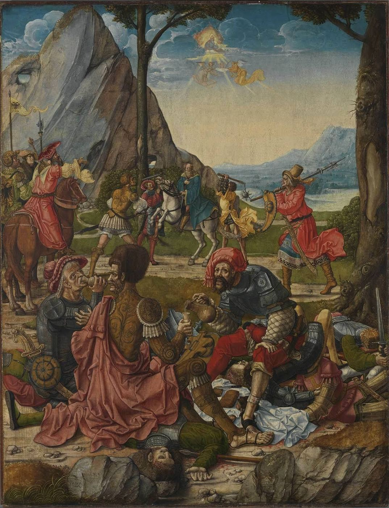
Das Fest der Henker
Anton Woensam (um 1500–1541), 1520, 1520
Anton Woensam (um 1500–1541), 1520 · Public domain · Wikimedia Commons
Datei: Anton Woensam von Worms - Martyrium der thebaischen Legion (Vorderseite- Hll. Anno und Gregor der Mohr) - 1474 - Bavarian State Painting Collections.jpg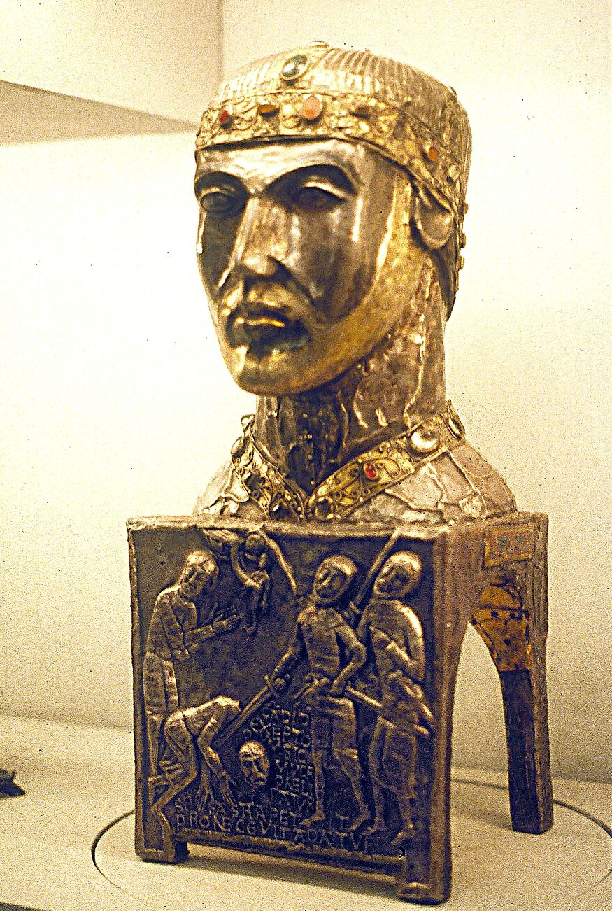
Das Kopfreliquiar des heiligen Candidus
Foto: Lothar Spurzem (1990), 1990
Foto: Lothar Spurzem (1990) · CC BY-SA 2.0 de · Wikimedia Commons
Datei: Candidus-Büste St-Maurice 1990 (Sp 2).jpg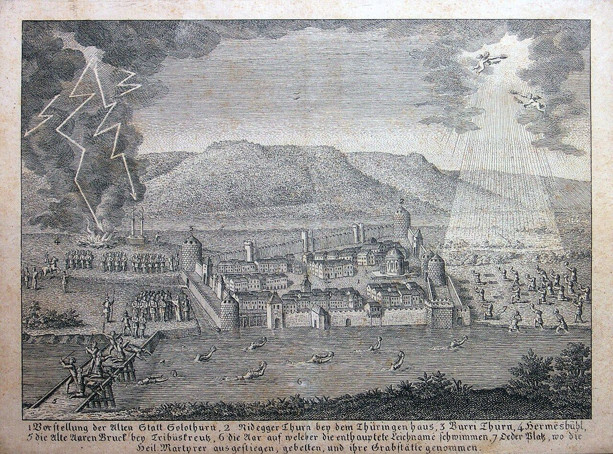
Das Martyrium in Solothurn
Kupferstich (18. Jahrhundert), Historisches Museum Blumenstein Solothurn, 18 th century date QS:P,+1750-00-00T00:00:00Z/7
Kupferstich (18. Jahrhundert), Historisches Museum Blumenstein Solothurn · Public domain · Wikimedia Commons
Datei: Legende Ursus Victor.jpg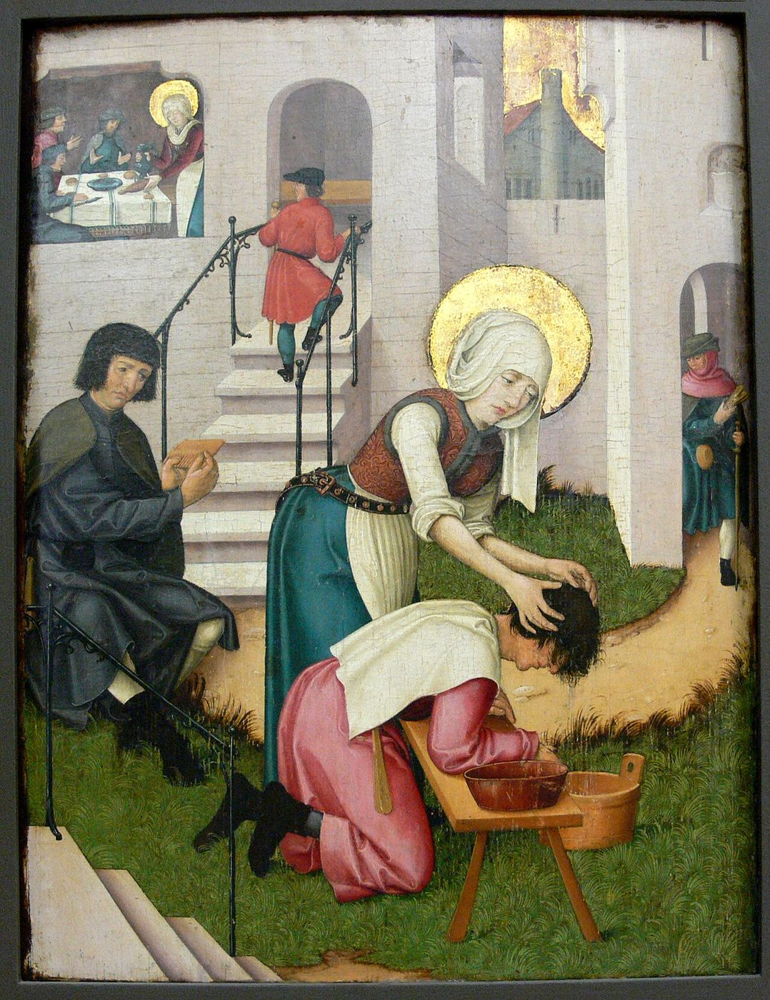
Verena pflegt die Kranken
Schwäbischer Meister (um 1524); Foto: Andreas Praefcke, 1524 in Stuttgart
Schwäbischer Meister (um 1524); Foto: Andreas Praefcke · Public domain · Wikimedia Commons
Datei: Barmherzigkeit der Hl Verena 1524.jpg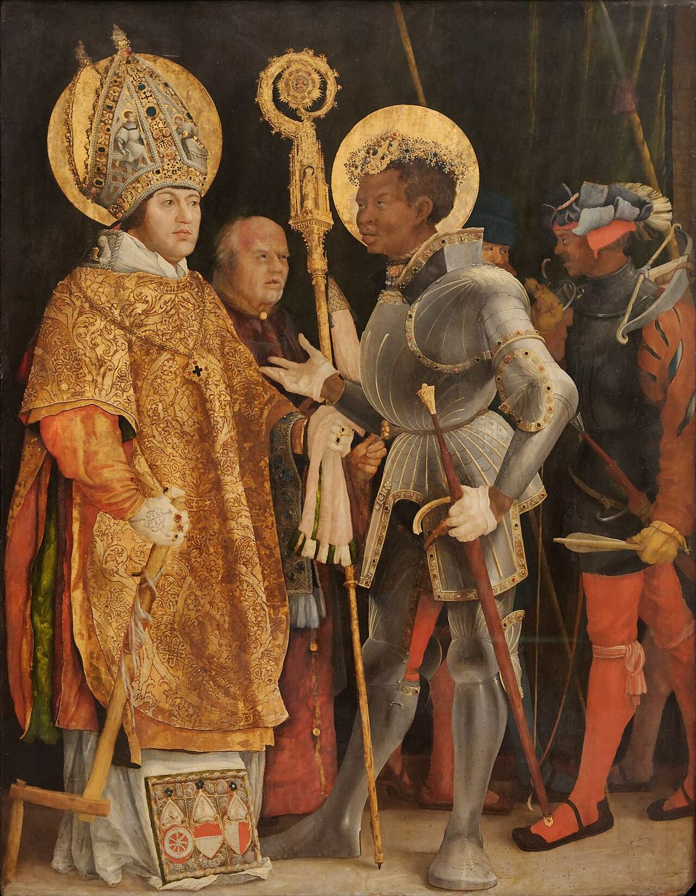
Mauritius trifft Erasmus
Matthias Grünewald (um 1480–1528), between circa 1520 and circa 1524 date …
Matthias Grünewald (um 1480–1528) · Public domain · Wikimedia Commons
Datei: Die hll. Erasmus und Mauritius Matthias Grünewald.jpg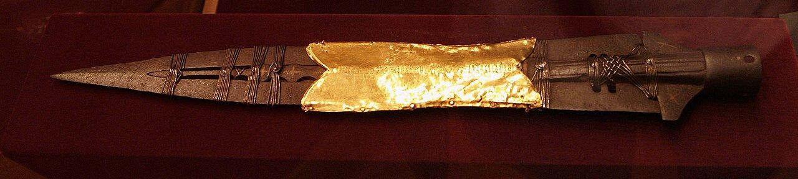
Die Heilige Lanze
Foto: Arnoldius (2009), 2009-10-12
Foto: Arnoldius (2009) · CC BY-SA 3.0 · Wikimedia Commons
Datei: Holy Lance of the HRE.jpg Die Zürcher Stadtheiligen
Die Zürcher Stadtheiligen
Wandbild im Haus zum Königsstuhl, Zürich (um 1400–1425), between circa 1400 and circa 1425 date …
Wandbild im Haus zum Königsstuhl, Zürich (um 1400–1425) · Public domain · Wikimedia Commons
Datei: Zürcher Stadtheilige.jpg

_-_1474_-_Bavarian_State_Painting_Collections.jpg){kind=link}

.jpg){kind=link}


Kapitel 3 · Mönche, Alamannen und Romanen
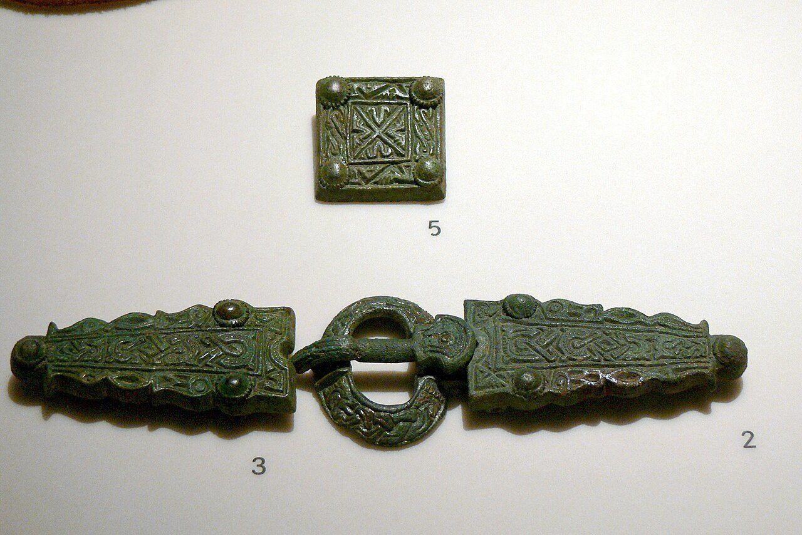
Ein alamannischer Gürtel
Wolfgang Sauber, 2010-07-21
Wolfgang Sauber · CC BY-SA 3.0 · Wikimedia Commons
Datei: GNM - Alemannische Gürtelbeschläge.jpg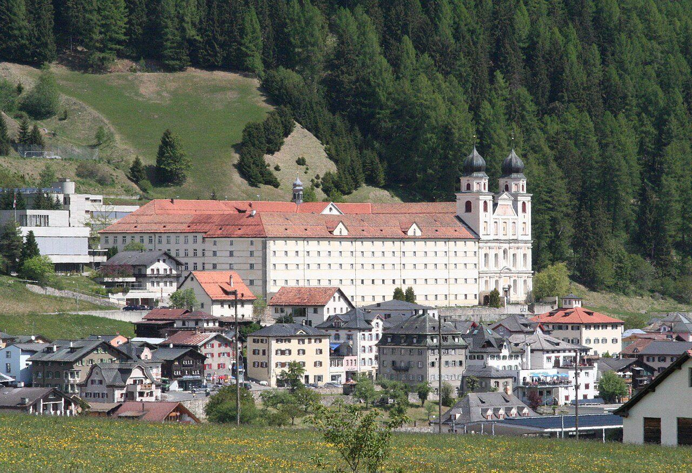
Das Kloster Disentis
Adrian Michael, 2011-05-07
Adrian Michael · CC BY-SA 1.0 · Wikimedia Commons
Datei: Kloster Disentis Mai 2011.JPG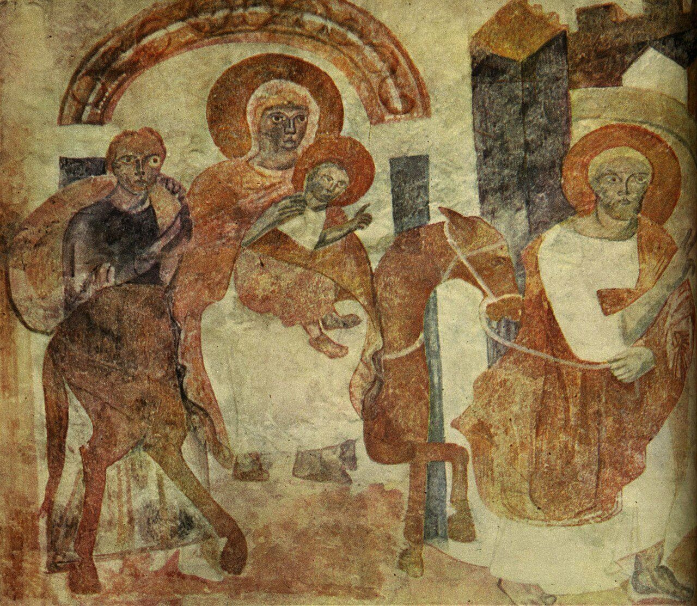
Die Flucht nach Ägypten
Unbekannt, circa 825
Unbekannt · Public domain · Wikimedia Commons
Datei: Meister von Müstair 003.jpg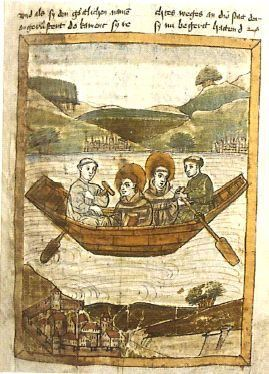
Kolumban und Gallus auf dem Bodensee
Unbekannt, 15 th century date QS:P,+1450-00-00T00:00:00Z/7
Unbekannt · Public domain · Wikimedia Commons
Datei: Columban und Gallus auf dem Bodensee.jpg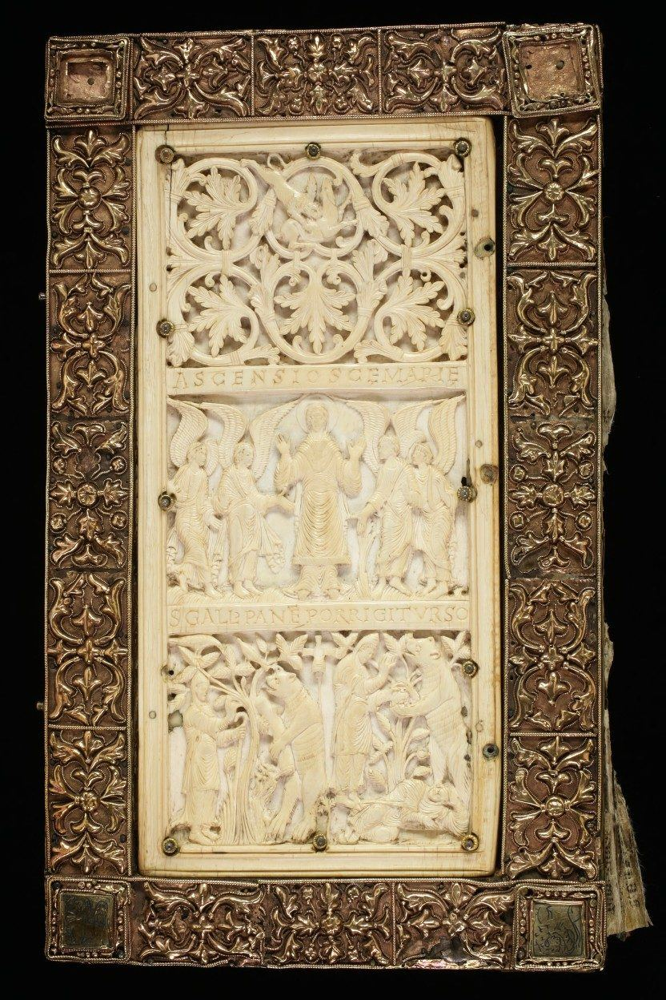
Elfenbein aus St. Gallen
Stiftsbibliothek St. Gallen, 2024-12-09
Stiftsbibliothek St. Gallen · CC BY-SA 4.0 · Wikimedia Commons
Datei: Stiftsbibliothek St. Gallen Cod. Sang. 53 Rückseite.jpg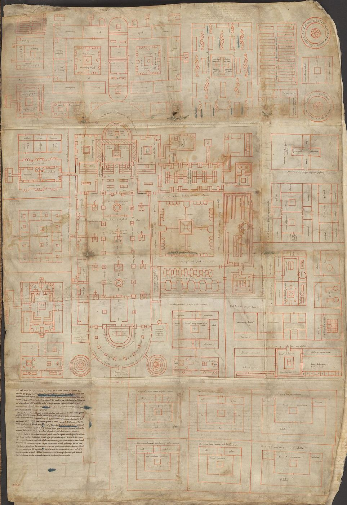
Der St. Galler Klosterplan
Kloster Reichenau (um 825), 9 th century date QS:P,+850-00-00T00:00:00Z/7
Kloster Reichenau (um 825) · Public domain · Wikimedia Commons
Datei: Codex Sangallensis 1092 recto.jpg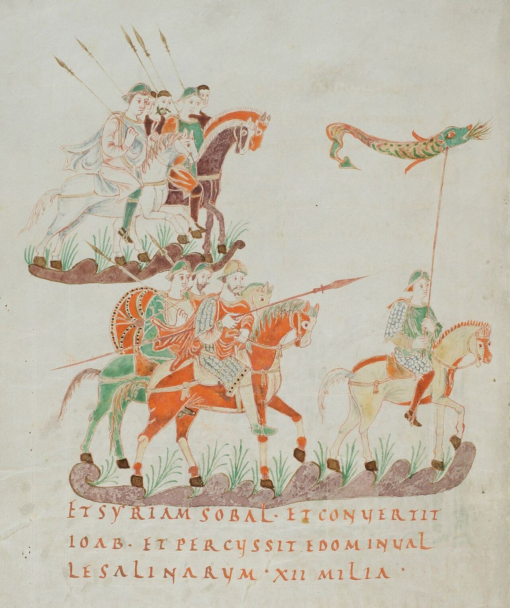
Reiter aus dem Goldenen Psalter
Psalterium aureum, St. Gallen (um 890), circa 890
Psalterium aureum, St. Gallen (um 890) · Public domain · Wikimedia Commons
Datei: Psalterium aureum 140 Ioab.jpg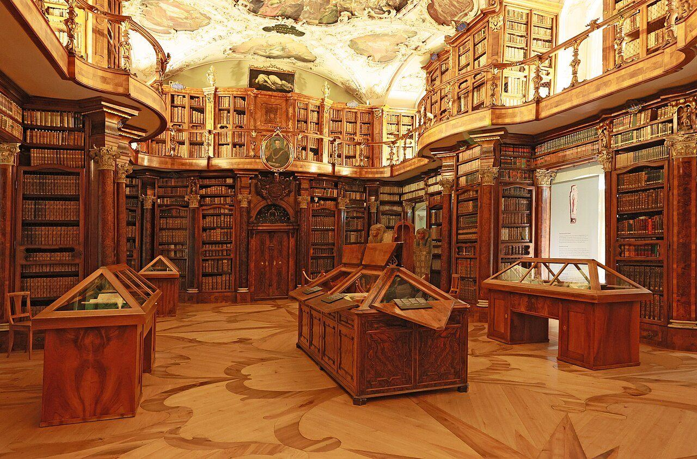
Die Stiftsbibliothek heute
Elena Ternovaja, 2023-05-21 09:06
Elena Ternovaja · CC BY-SA 3.0 · Wikimedia Commons
Datei: Barocksaal der Stiftsbibliothek St. Gallen.jpg Das Kloster Müstair
Das Kloster Müstair
Martingarten, 2013-10-05 12:56:07
Martingarten · CC BY-SA 3.0 · Wikimedia Commons
Datei: Friedhof Kloster St. Johann Müstair.jpg


Kapitel 4 · Das Königreich Hochburgund
 Bertha auf Reisen
Bertha auf Reisen
Karl Jauslin (1842–1904), 19th century, upload April 2008
Karl Jauslin (1842–1904) · Public domain · Wikimedia Commons
Datei: Bertha von Burgund Jauslin.JPG Der Tod Wiboradas
Der Tod Wiboradas
Conrad Sailer zugeschrieben, Cod. Sang. 602 (um 1450), before 1451 date …
Conrad Sailer zugeschrieben, Cod. Sang. 602 (um 1450) · Public domain · Wikimedia Commons
Datei: Martyrdom of Wiborada.jpg Abt Maiolus von Cluny
Abt Maiolus von Cluny
Unbekannt, 2012-05-15
Unbekannt · Public domain · Wikimedia Commons
Datei: Mayeul de Cluny.jpg Die Klosterkirche von Romainmôtier
Die Klosterkirche von Romainmôtier
Jmh2o, 2019-07-21 13:42:46
Jmh2o · CC BY-SA 4.0 · Wikimedia Commons
Datei: Abbatiale de Romainmôtier - 2019-07-21 - 01.jpg Die Abteikirche von Payerne
Die Abteikirche von Payerne
Beckstet, 2005-05
Beckstet · CC BY-SA 3.0 · Wikimedia Commons
Datei: Payerne Church from SW.JPG Das Kloster Einsiedeln heute
Das Kloster Einsiedeln heute
Hofec, 2008-10-10
Hofec · CC BY-SA 3.0 · Wikimedia Commons
Datei: Kloster Einsiedeln Frontansicht.jpg Eine Urkunde aus dem Jahr 1011
Eine Urkunde aus dem Jahr 1011
Kanzlei König Rudolfs III. von Burgund (1011), 1011-04-24
Kanzlei König Rudolfs III. von Burgund (1011) · Public domain · Wikimedia Commons
Datei: Acte de donation de 1011.jpg Königin Bertha und die Spinnerinnen
Königin Bertha und die Spinnerinnen
Albert Anker (1831–1910), 1888 date QS:P571,+1888-00-00T00:00:00Z/9
Albert Anker (1831–1910) · Public domain · Wikimedia Commons
Datei: Reine Berthe et les fileueses, 1888.jpg


Kapitel 5 · Grafen, Bischöfe und neue Städte
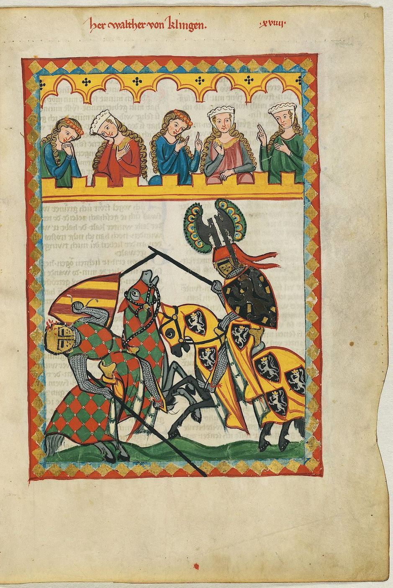
Ein Turnier im Codex Manesse
Codex Manesse, Zürich (frühes 14. Jahrhundert), Universitätsbibliothek Heidelberg, between 1305 and 1315 date …
Codex Manesse, Zürich (frühes 14. Jahrhundert), Universitätsbibliothek Heidelberg · Public domain · Wikimedia Commons
Datei: Codex Manesse 052r Walther von Klingen.jpg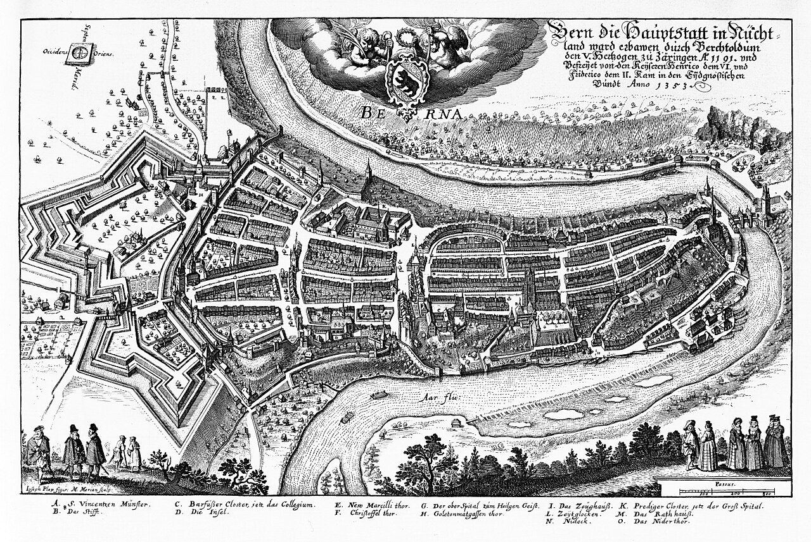
Bern in der Aareschleife
Joseph Plepp / Matthäus Merian (1638), 1638 date QS:P571,+1638-00-00T00:00:00Z/9
Joseph Plepp / Matthäus Merian (1638) · Public domain · Wikimedia Commons
Datei: MerianBern.jpg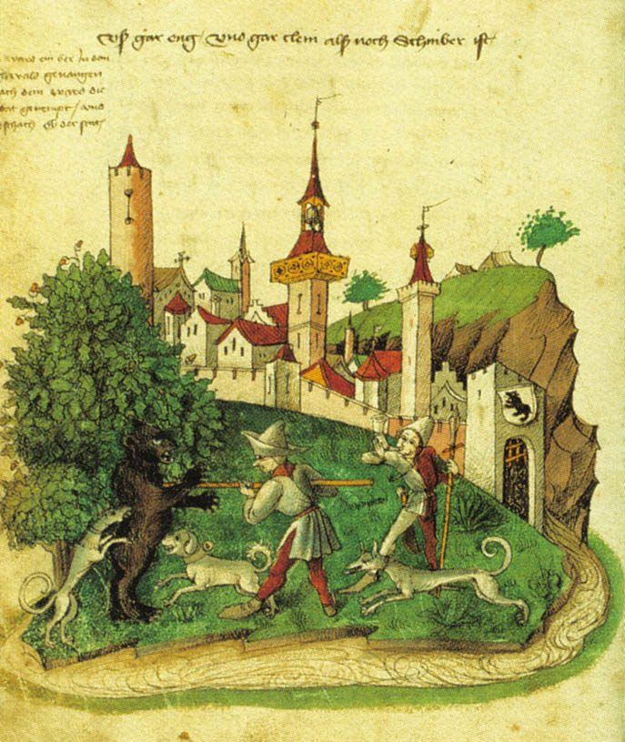
Die Bärenjagd
Bendicht Tschachtlan und Heinrich Dittlinger, Berner Chronik (1470), 1353-03-06
Bendicht Tschachtlan und Heinrich Dittlinger, Berner Chronik (1470) · Public domain · Wikimedia Commons
Datei: Tschachtlan-Chronik, Berner Bärenjagd.jpg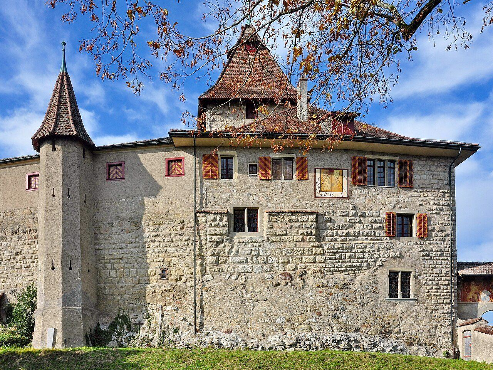
Die Kyburg
Roland zh, 2010-11-01
Roland zh · CC BY-SA 3.0 · Wikimedia Commons
Datei: Kyburg - Schloss 2010-11-01 13-25-20 ShiftN.jpg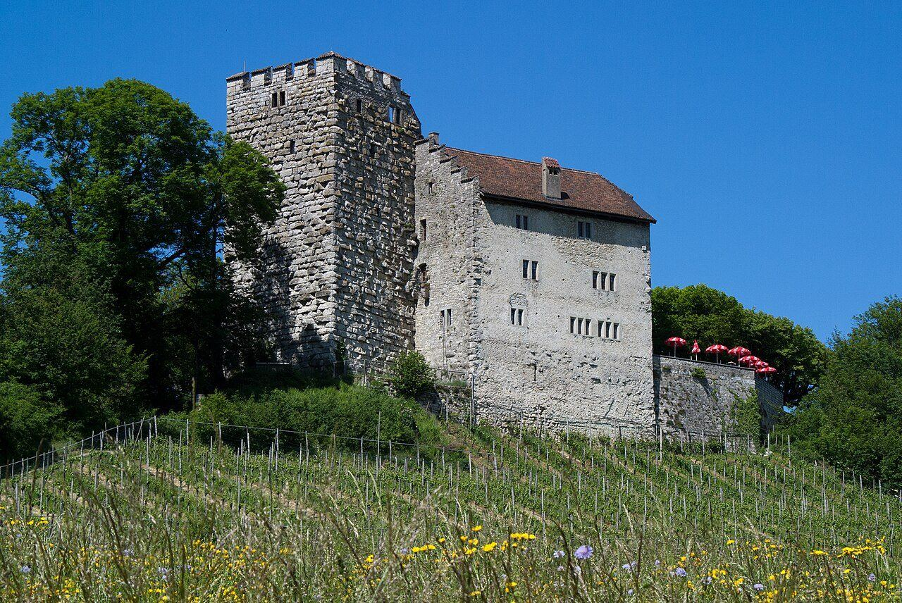
Die Habsburg im Aargau
Roland Zumbuehl, 2011-09-12
Roland Zumbuehl · CC BY-SA 3.0 · Wikimedia Commons
Datei: Habsburg-Schloss.jpg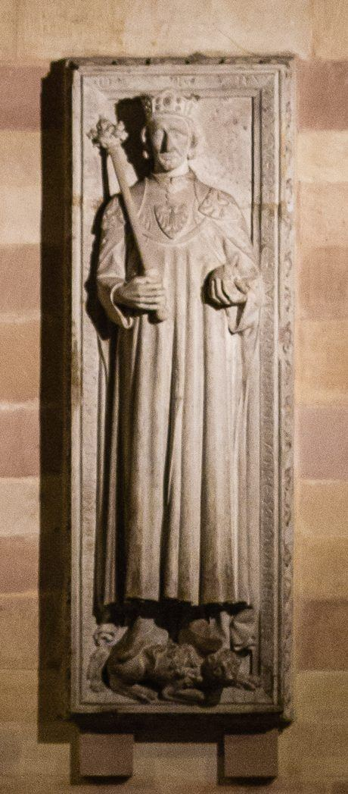
Die Grabplatte Rudolfs
Grabplatte um 1285, Dom zu Speyer; Foto: Friedrich Haag, Taken on 29 December 2014, 12:12:50
Grabplatte um 1285, Dom zu Speyer; Foto: Friedrich Haag · CC BY-SA 4.0 · Wikimedia Commons
Datei: 2014 12 29 035 Speyerer Dom Grabplatte Rudolf von Habsburg.jpg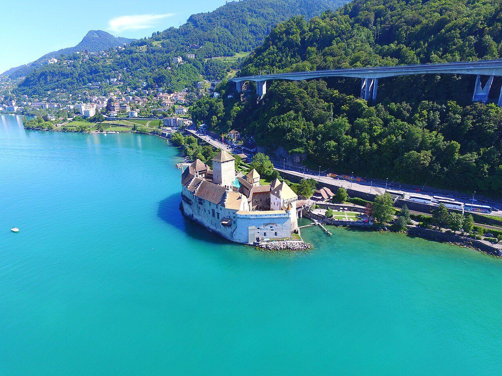
Schloss Chillon
Alexey M., 2016-07-16 11:03:42
Alexey M. · CC BY-SA 4.0 · Wikimedia Commons
Datei: Chillon-Castle-aerial-1.jpg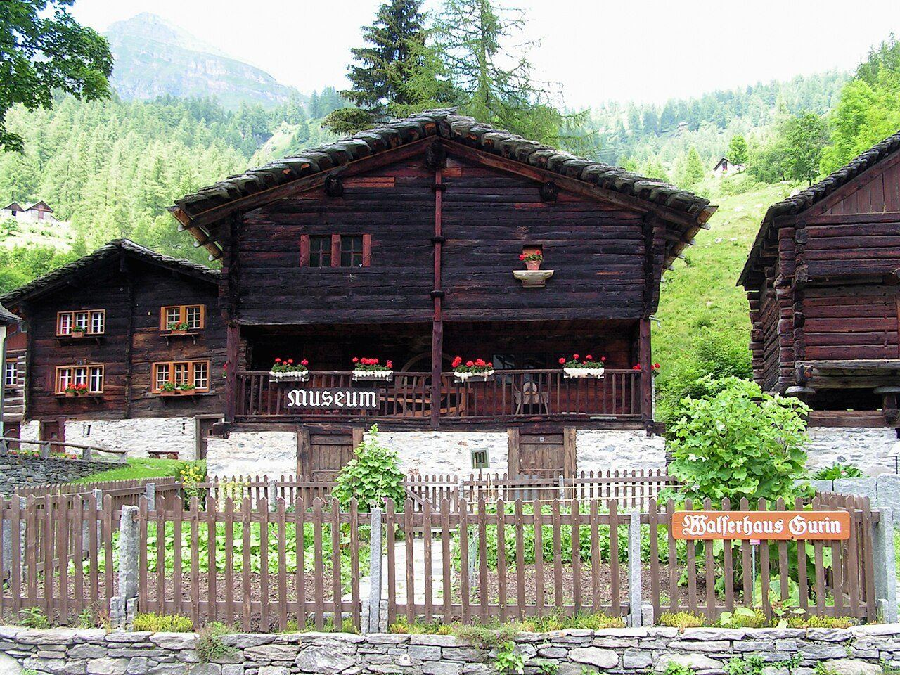
Das Walserhaus in Bosco/Gurin
Romano1246, 2011-07-11
Romano1246 · CC BY-SA 3.0 · Wikimedia Commons
Datei: Bosco maison Walser 2011-07-11 13 00 39 PICT3291.JPG Die Gründung von Bern
Die Gründung von Bern
Diebold Schilling d. Ä., Spiezer Chronik (1484/85), Burgerbibliothek Bern, 15th century (writing) 20th century (binding)
Diebold Schilling d. Ä., Spiezer Chronik (1484/85), Burgerbibliothek Bern · Public domain · Wikimedia Commons
Datei: Bern, Burgerbibliothek, Mss.h.h.I.16, p. 55 – Diebold Schilling, Spiezer Chronik.JPG


Überblick · Kaiser, Reich und Lehen – wer im Mittelalter herrschte
 Das Siegel der Goldenen Bulle
Das Siegel der Goldenen Bulle
Goldsiegel Kaiser Karls IV. am Trierer Exemplar der Goldenen Bulle, 1356
Goldsiegel Kaiser Karls IV. am Trierer Exemplar der Goldenen Bulle, 1356 · Public domain · Wikimedia Commons
Datei: Goldene Bulle - Vorderseite crop.jpg Die Lehnspyramide im Sachsenspiegel
Die Lehnspyramide im Sachsenspiegel
Bilderhandschrift des Sachsenspiegels, 14. Jahrhundert, 2014-06-18
Bilderhandschrift des Sachsenspiegels, 14. Jahrhundert · Public domain · Wikimedia Commons
Datei: Heerschildordnung.jpg Die drei Stände
Die drei Stände
Französische Handschrift, spätes 13. Jahrhundert, 3rd quarter of the 13th century (perhaps c. 1285)
Französische Handschrift, spätes 13. Jahrhundert · Public domain · Wikimedia Commons
Datei: Drei staende.JPG Der Richtplatz von Luzern
Der Richtplatz von Luzern
Diebold Schilling d. J., Luzerner Chronik (1513), April 2008 (upload date)
Diebold Schilling d. J., Luzerner Chronik (1513) · Public domain · Wikimedia Commons
Datei: Richtplatz Luzern.jpg Das Habsburger Urbar
Das Habsburger Urbar
Habsburger Urbar, Abschrift um 1330, Badische Landesbibliothek Karlsruhe, circa 1330 date QS:P,+1330-00-00T00:00:00Z/9,P1480,Q5727902
Habsburger Urbar, Abschrift um 1330, Badische Landesbibliothek Karlsruhe · Public domain · Wikimedia Commons
Datei: Habsburger Urbar.jpg Der Freiheitsbrief für Schwyz von 1240
Der Freiheitsbrief für Schwyz von 1240
Kanzlei Kaiser Friedrichs II., 1240, 1240
Kanzlei Kaiser Friedrichs II., 1240 · Public domain · Wikimedia Commons
Datei: Schwyz reichsfrei.JPG Friedrich II. mit seinem Falken
Friedrich II. mit seinem Falken
Handschrift «De arte venandi cum avibus», Biblioteca Apostolica Vaticana, Pal. lat. 1071, um 1260, 1240s date QS:P,+1240-00-00T00:00:00Z/8
Handschrift «De arte venandi cum avibus», Biblioteca Apostolica Vaticana, Pal. lat. 1071, um 1260 · Public domain · Wikimedia Commons
Datei: Frederick II and eagle.jpg Zürichs Ämterscheibe von 1544
Zürichs Ämterscheibe von 1544
Zürcher Glasmaler, 1544 (Schweizerisches Nationalmuseum), 1544
Zürcher Glasmaler, 1544 (Schweizerisches Nationalmuseum) · Public domain · Wikimedia Commons
Datei: Ämterscheibe Zürich 1544.jpg Sieben Kurfürsten wählen einen König
Sieben Kurfürsten wählen einen König
Bilderchronik Kaiser Heinrichs VII. (Codex Balduini Trevirensis), um 1340, 1341
Bilderchronik Kaiser Heinrichs VII. (Codex Balduini Trevirensis), um 1340 · Public domain · Wikimedia Commons
Datei: Balduineum Wahl Heinrich VII.jpg


Kapitel 6 · 1291: Der Bund der Waldstätte
 Von der Teufelsbrücke zum Urnerloch
Von der Teufelsbrücke zum Urnerloch
Johann Ulrich Schellenberg (1709–1795), circa 1770 date …
Johann Ulrich Schellenberg (1709–1795) · Public domain · Wikimedia Commons
Datei: Zentralbibliothek Zürich - Passage von der Teufels-Brüke zu dem Urner Loch auf dem Gotthard No. 6 - 991097537969705501.jpg Der Bundesbrief von 1291
Der Bundesbrief von 1291
Unbekannt, 1291
Unbekannt · Public domain · Wikimedia Commons
Datei: Bundesbrief.jpg Das Weisse Buch von Sarnen
Das Weisse Buch von Sarnen
Hans Schriber, Landschreiber von Obwalden, 1474
Hans Schriber, Landschreiber von Obwalden · Public domain · Wikimedia Commons
Datei: Weisses Buch von Sarnen 447.jpg Wilhelm Tell
Wilhelm Tell
Ferdinand Hodler (1853–1918), 1897 date QS:P571,+1897-00-00T00:00:00Z/9
Ferdinand Hodler (1853–1918) · Public domain · Wikimedia Commons
Datei: Hodler Tell 1897.jpg Die drei Eidgenossen
Die drei Eidgenossen
Jean Renggli (1846–1898), 1891 date QS:P571,+1891-00-00T00:00:00Z/9
Jean Renggli (1846–1898) · Public domain · Wikimedia Commons
Datei: Swiss Rütlischwur.jpg Die Eidgenossen im Gespräch
Die Eidgenossen im Gespräch
Anonymous Unknown author (Swiss?), 16 th century date QS:P,+1550-00-00T00:00:00Z/7
Anonymous Unknown author (Swiss?) · Public domain · Wikimedia Commons
Datei: Rütlischwur Holzschnitt koloriert.jpg Der Rütlischwur
Der Rütlischwur
Johann Heinrich Füssli (1741–1825), 1780 date QS:P571,+1780-00-00T00:00:00Z/9
Johann Heinrich Füssli (1741–1825) · Public domain · Wikimedia Commons
Datei: Johann Heinrich Füssli 018.jpg


Kapitel 7 · Morgarten und die acht alten Orte
 Morgarten in der Berner Chronik
Morgarten in der Berner Chronik
Diebold Schilling d. Ä., Amtliche Berner Chronik, Bd. 1 (um 1480), Burgerbibliothek Bern, 2017-12-13
Diebold Schilling d. Ä., Amtliche Berner Chronik, Bd. 1 (um 1480), Burgerbibliothek Bern · CC BY-SA 4.0 · Wikimedia Commons
Datei: La bataille de Morgarten en 1315.jpg Morgarten am Rathaus Schwyz
Morgarten am Rathaus Schwyz
Adrian Michael, 2011-11
Adrian Michael · CC BY 2.5 · Wikimedia Commons
Datei: Morgarten Rathaus Schwyz.jpg Morgarten bei Tschachtlan
Morgarten bei Tschachtlan
Bendicht Tschachtlan und Heinrich Dittlinger, Berner Chronik (1470), circa 1470 date …
Bendicht Tschachtlan und Heinrich Dittlinger, Berner Chronik (1470) · Public domain · Wikimedia Commons
Datei: Bendicht Tschachtlan, Die Schlacht am Morgarten (c. 1470).jpg Der Bundesbrief von Brunnen
Der Bundesbrief von Brunnen
Bundesbrief von Brunnen, 9. Dezember 1315, Bundesbriefmuseum Schwyz, 09.12.1315
Bundesbrief von Brunnen, 9. Dezember 1315, Bundesbriefmuseum Schwyz · Public domain · Wikimedia Commons
Datei: Morgartenbrief.jpg Luzern am Vierwaldstättersee
Luzern am Vierwaldstättersee
Matthäus Merian (1642), 1642 date QS:P571,+1642-00-00T00:00:00Z/9
Matthäus Merian (1642) · Public domain · Wikimedia Commons
Datei: Lucern, Matthaeus Merian 1642 - GS-GRAF-ANSI-LU-367.tif Die Schlacht bei Laupen
Die Schlacht bei Laupen
Diebold Schilling d. Ä., Spiezer Chronik (1484/85), Burgerbibliothek Bern, 1484
Diebold Schilling d. Ä., Spiezer Chronik (1484/85), Burgerbibliothek Bern · Public domain · Wikimedia Commons
Datei: Battle of Laupen.jpg Die Mordnacht von Zürich
Die Mordnacht von Zürich
Karl Jauslin (1842–1904), 19th century, upload Januar 2009
Karl Jauslin (1842–1904) · Public domain · Wikimedia Commons
Datei: Jauslin Zürcher Mordnacht.jpg Am Ägerisee
Am Ägerisee
Pakeha, 2015-09-12 16:54:50
Pakeha · CC BY-SA 4.0 · Wikimedia Commons
Datei: Morgarten am Ägerisee 02.jpg


.jpg){kind=link}


Vor der Schweiz · Bevor sie Eidgenossen wurden: Luzern, Zürich, Glarus, Zug und Bern
 Die Abtei Murbach im Elsass
Die Abtei Murbach im Elsass
Foto: Shesmax, 2021, 2021-06-13 12:15:37
Foto: Shesmax, 2021 · CC BY-SA 4.0 · Wikimedia Commons
Datei: Murbach. Abbey church. Eastern facade. 2021-06-13 12-15-37.jpg Hof und Hofbrücke
Hof und Hofbrücke
Matthäus Merian (1593–1650), 1642, 1642 date QS:P571,+1642-00-00T00:00:00Z/9
Matthäus Merian (1593–1650), 1642 · Public domain · Wikimedia Commons
Datei: Hofbrücke, Detail Lucern, Matthaeus Merian 1642 - GS-GRAF-ANSI-LU-367.tif Fridolin und Urso vor Gericht
Fridolin und Urso vor Gericht
Unbekannt, circa 1503 date QS:P,+1503-00-00T00:00:00Z/9,P1480,Q5727902
Unbekannt · Public domain · Wikimedia Commons
Datei: Saint Fridolin and Urso Appearing in Court.jpg Die Glarner Standesscheibe von 1590
Die Glarner Standesscheibe von 1590
Glasmaler, 1590, 1590
Glasmaler, 1590 · Public domain · Wikimedia Commons
Datei: Glarus Standesscheibe 1590.jpg Zug um 1640
Zug um 1640
Unbekannt, nach 1641
Unbekannt · Public domain · Wikimedia Commons
Datei: Zentralbibliothek Zürich - Tugium Zug - 991065002399705501.jpg Die Goldene Handfeste
Die Goldene Handfeste
Staatsarchiv des Kantons Bern, 1218
Staatsarchiv des Kantons Bern · Public domain · Wikimedia Commons
Datei: Goldene Handfeste Berns.jpg Die Schlacht am Dornbühl 1298
Die Schlacht am Dornbühl 1298
Karl Jauslin (1842–1904), um 1890, 1890-01-01
Karl Jauslin (1842–1904), um 1890 · Public domain · Wikimedia Commons
Datei: Battle of Donnerbühl in 1298 (by the original by Karl Jauslin).jpg Ein Hirsch weist den Weg
Ein Hirsch weist den Weg
Christoph Silberysen (1542–1608), 1576, 1576
Christoph Silberysen (1542–1608), 1576 · Public domain · Wikimedia Commons
Datei: S. Gründungslegende 1 Ausschnitt.jpg


.jpg){kind=link}

Kapitel 8 · Pest, Beben und die Schlacht bei Sempach
 Jüdische Wandmalerei in Zürich
Jüdische Wandmalerei in Zürich
Albinfo, 2021-09-04 19:11:31
Albinfo · CC0 · Wikimedia Commons
Datei: Brunngasse8 Malerei Details Wappen.jpg Das Erdbeben von Basel
Das Erdbeben von Basel
Karl Jauslin (1842–1904)
Karl Jauslin (1842–1904) · Public domain · Wikimedia Commons
Datei: Erdbeben Basel Jauslin.JPG Kampf gegen die Gugler
Kampf gegen die Gugler
Karl Jauslin (1842–1904), circa 1900 date QS:P,+1900-00-00T00:00:00Z/9,P1480,Q5727902
Karl Jauslin (1842–1904) · Public domain · Wikimedia Commons
Datei: Fight over the Cuglern by Inns, 1375 (K. Jauslin).png Sempach in der Luzerner Chronik
Sempach in der Luzerner Chronik
Diebold Schilling d. J., Luzerner Chronik (1513), 1513; 2007 (this file)
Diebold Schilling d. J., Luzerner Chronik (1513) · Public domain · Wikimedia Commons
Datei: Sempach Schilling.jpg Die Schlachtkapelle bei Sempach
Die Schlachtkapelle bei Sempach
Markus Schäfer at de.wikipedia, 2010-06-16
Markus Schäfer at de.wikipedia · CC BY-SA 3.0 · Wikimedia Commons
Datei: Schlachtkapelle in Sempach.jpg Die Schlacht bei Näfels
Die Schlacht bei Näfels
Diebold Schilling d. Ä., Spiezer Chronik (1484/85), 1484
Diebold Schilling d. Ä., Spiezer Chronik (1484/85) · Public domain · Wikimedia Commons
Datei: Schlacht bei Näfels Spiezer Chronik.jpg Das Fridolinsbanner
Das Fridolinsbanner
Anonymous Unknown author, 1388
Anonymous Unknown author · Public domain · Wikimedia Commons
Datei: Fridolins-Banner.jpg Die Schlacht bei Sempach
Die Schlacht bei Sempach
Karl Jauslin (1842–1904), 1889 date QS:P571,+1889-00-00T00:00:00Z/9
Karl Jauslin (1842–1904) · Public domain · Wikimedia Commons
Datei: Jauslin Sempach 1889.jpg


.png){kind=link}


Kapitel 9 · Die Eidgenossen greifen aus
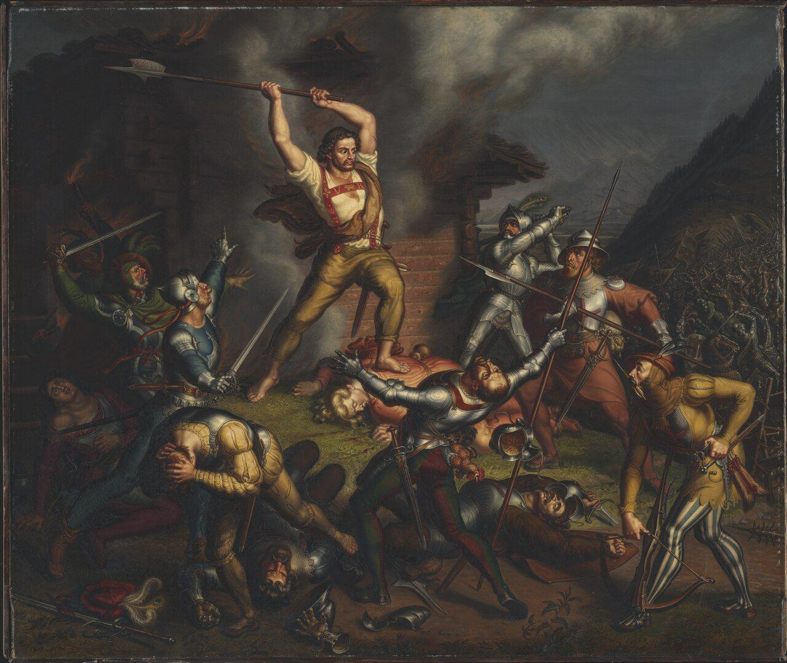
Uli Rotach am Stoss
Ludwig Vogel (1788–1879), 1829 date QS:P571,+1829-00-00T00:00:00Z/9
Ludwig Vogel (1788–1879) · Public domain · Wikimedia Commons
Datei: CH-KBAR - Uli Rotach in der Schlacht am Stoss - KB-008159.tif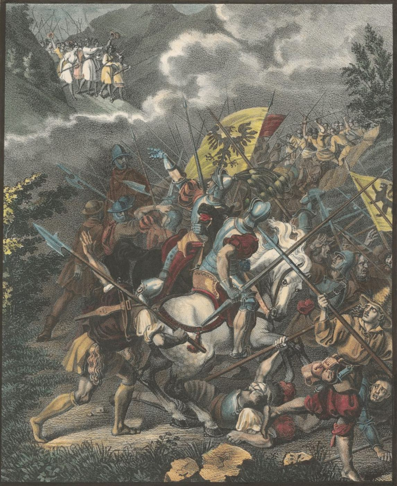
Die Weiber in der Schlacht am Stoss
Martin Disteli (1802–1844), Stich von Johann Jakob Honegger, 1833
Martin Disteli (1802–1844), Stich von Johann Jakob Honegger · CC0 · Wikimedia Commons
Datei: Die Weiber in der Schlacht am Stoss 1 (cropped).png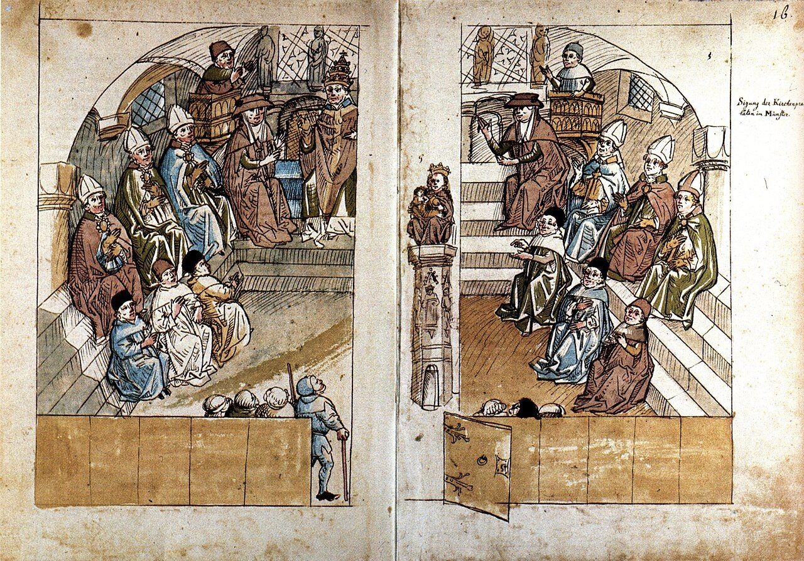
Das Konzil im Konstanzer Münster
Ulrich Richental, Konzilschronik (Abschrift um 1464), between circa 1460 and circa 1465 date …
Ulrich Richental, Konzilschronik (Abschrift um 1464) · Public domain · Wikimedia Commons
Datei: Richental Konzilssitzung Muenster.jpg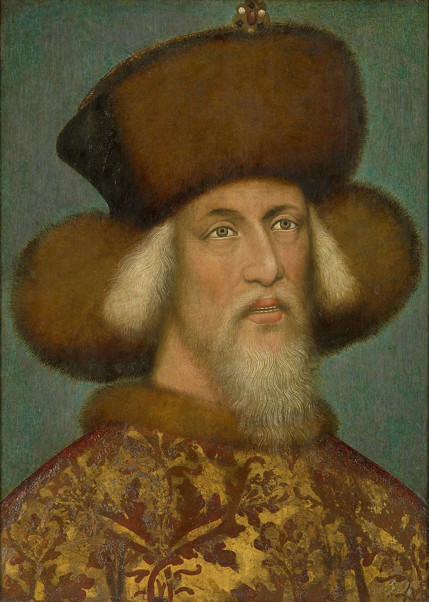
König und Kaiser Sigismund
Unbekannt, between circa 1430 and circa 1437 date …
Unbekannt · Public domain · Wikimedia Commons
Datei: Anonymous - Kaiser Sigismund (1369-1437) - GG 2630 - Kunsthistorisches Museum.jpg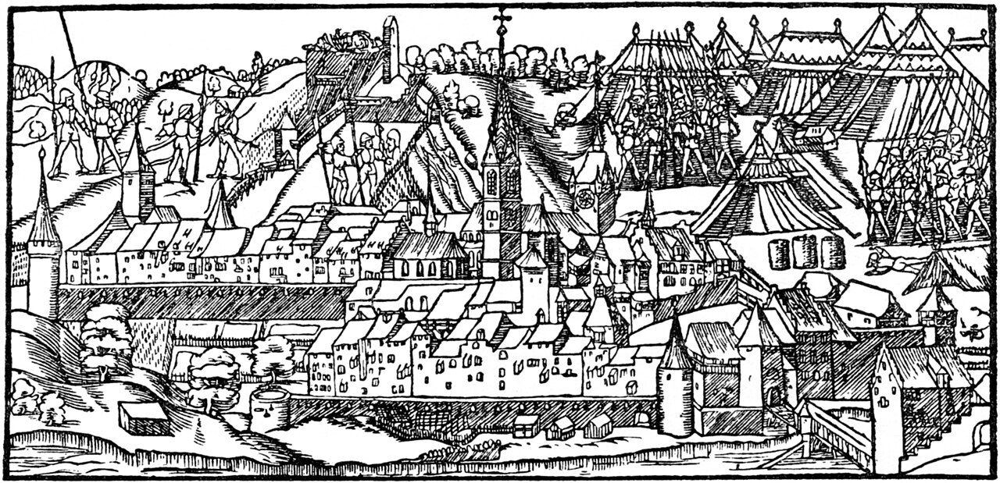
Die Belagerung von Baden 1415
Johannes Stumpf, Schweizerchronik (1548), 1548
Johannes Stumpf, Schweizerchronik (1548) · Public domain · Wikimedia Commons
Datei: Belagerung Baden stumpf.jpg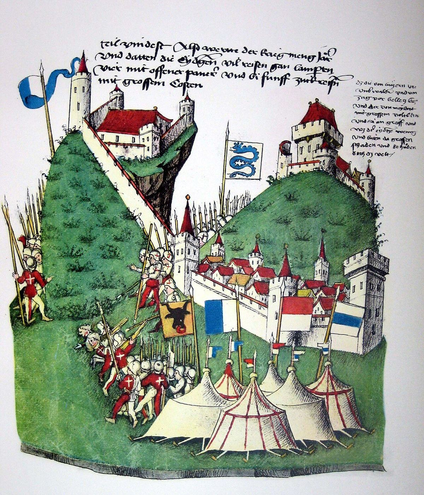
Arbedo in der Berner Chronik
Bendicht Tschachtlan, Berner Chronik (1470), 1470
Bendicht Tschachtlan, Berner Chronik (1470) · Public domain · Wikimedia Commons
Datei: Bellinzona Tschachtlan.jpg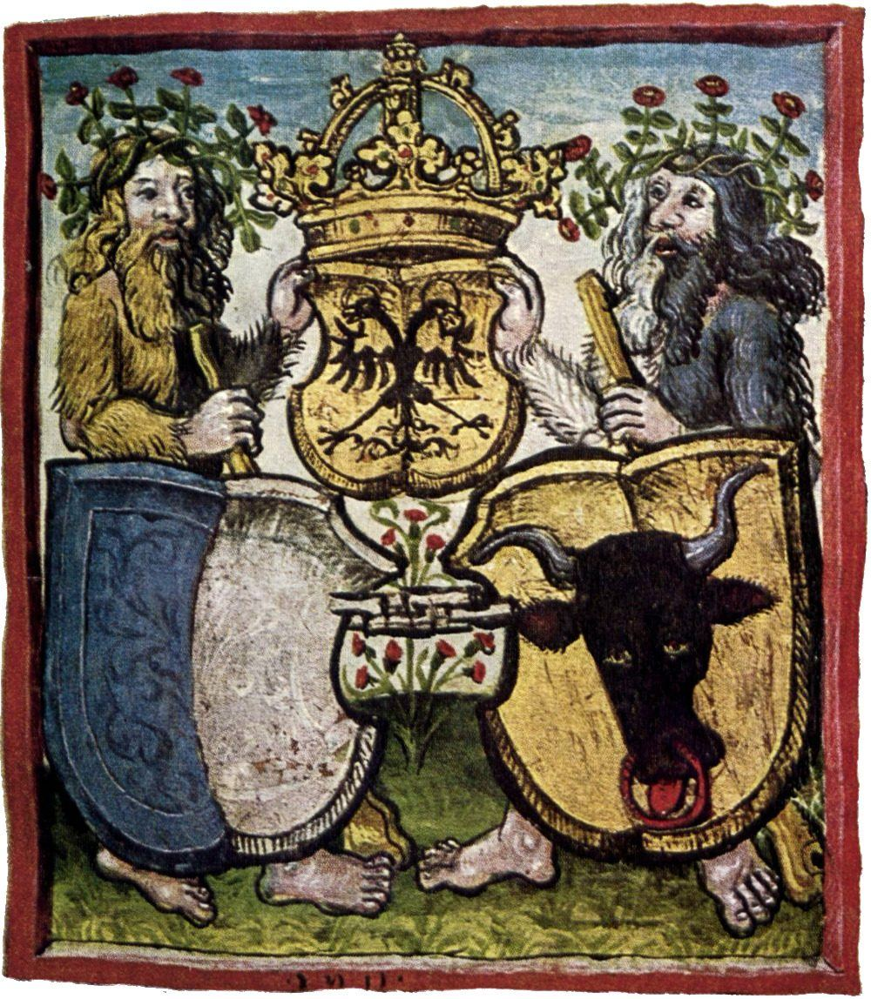
Das Arbedo-Denkmal in Luzern
Diebold Schilling d. J., Luzerner Chronik (1513), 1513
Diebold Schilling d. J., Luzerner Chronik (1513) · Public domain · Wikimedia Commons
Datei: Arbedo-Denkmal Schilling 1513.jpg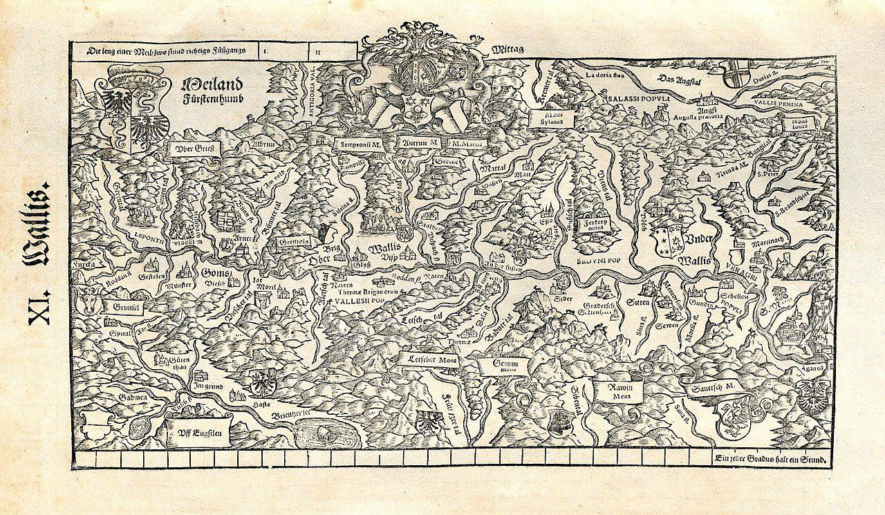
Das Wallis auf der Karte von 1548
Johannes Stumpf, Landtafeln (1548), 1548
Johannes Stumpf, Landtafeln (1548) · Public domain · Wikimedia Commons
Datei: Stumpf Froschauer Landtaflen Wallis.jpg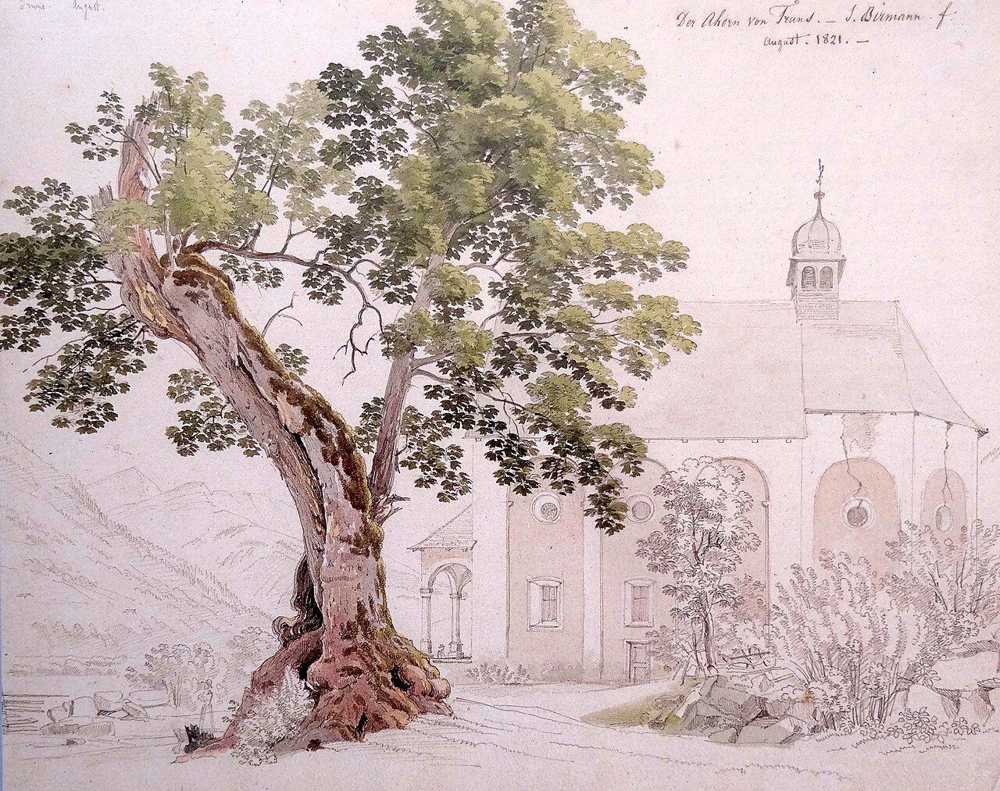
Der Ahorn von Trun
Samuel Birmann (1793–1847), 1821
Samuel Birmann (1793–1847) · Public domain · Wikimedia Commons
Datei: Trun Ahorn 1821.jpg Die Schlacht bei Arbedo 1422
Die Schlacht bei Arbedo 1422
Diebold Schilling d. J., Luzerner Chronik (1513), 1515
Diebold Schilling d. J., Luzerner Chronik (1513) · Public domain · Wikimedia Commons
Datei: Deutsche Geschichte5-230.jpg


.png){kind=link}


_-_GG_2630_-_Kunsthistorisches_Museum.jpg){kind=link}


Kapitel 10 · Der Alte Zürichkrieg
 Der letzte Toggenburger
Der letzte Toggenburger
Diebold Schilling d. Ä. (1484), 1484
Diebold Schilling d. Ä. (1484) · Public domain · Wikimedia Commons
Datei: Der letzte Toggenburger.jpg Der König in Zürich
Der König in Zürich
Bendicht Tschachtlan, Berner Chronik (1470), 1470
Bendicht Tschachtlan, Berner Chronik (1470) · Public domain · Wikimedia Commons
Datei: 12Berner Chronik Friedrich III - Zürich.jpg Der Mord von Greifensee
Der Mord von Greifensee
Werner Schodoler, Eidgenössische Chronik (um 1510–1535), between 1510 and 1535 date …
Werner Schodoler, Eidgenössische Chronik (um 1510–1535) · Public domain · Wikimedia Commons
Datei: Bild Henker von Greifensee.jpg Die Schlacht bei St. Jakob an der Birs
Die Schlacht bei St. Jakob an der Birs
Bendicht Tschachtlan, Berner Chronik (1470), 1470
Bendicht Tschachtlan, Berner Chronik (1470) · Public domain · Wikimedia Commons
Datei: St. Jakob Tschachtlan.jpg Burkhard Münch auf dem Schlachtfeld
Burkhard Münch auf dem Schlachtfeld
Unbekannt, circa 1900 date QS:P,+1900-00-00T00:00:00Z/9,P1480,Q5727902
Unbekannt · Public domain · Wikimedia Commons
Datei: Burkhard VII. Münch inspecting the battlefield of St. Jakob an der Birs, 1444.png Die Siechenhäuser von St. Jakob
Die Siechenhäuser von St. Jakob
Gustav Wackernagel (1858–1935), 1894
Gustav Wackernagel (1858–1935) · Public domain · Wikimedia Commons
Datei: Siechenhäuser bei St. Jakob an der Birs 1894.jpg Das Konzil von Basel
Das Konzil von Basel
Michael Wolgemut / Wilhelm Pleydenwurff, Schedelsche Weltchronik (1493), 1493
Michael Wolgemut / Wilhelm Pleydenwurff, Schedelsche Weltchronik (1493) · CC0 · Wikimedia Commons
Datei: Concilie van Bazel Concilium Basiliense (titel op object) Liber Chronicarum (serietitel), RP-P-2016-49-72-3.jpg Die Belagerung von Diessenhofen 1460
Die Belagerung von Diessenhofen 1460
Diebold Schilling d. J., Luzerner Chronik (1513), 1513
Diebold Schilling d. J., Luzerner Chronik (1513) · Public domain · Wikimedia Commons
Datei: Siege of Diessenhofen 1460.jpg Im Lager vor Waldshut
Im Lager vor Waldshut
Diebold Schilling d. Ä. (1483), 1483
Diebold Schilling d. Ä. (1483) · Public domain · Wikimedia Commons
Datei: Schilling dÄ Belagerung Waldshut 1468.jpg Rudolf Stüssi an der Sihlbrücke
Rudolf Stüssi an der Sihlbrücke
Werner Schodoler, Eidgenössische Chronik (um 1514), 1514
Werner Schodoler, Eidgenössische Chronik (um 1514) · Public domain · Wikimedia Commons
Datei: Zuerichkrieg 1444.jpg


_Liber_Chronicarum_(serietitel),_RP-P-2016-49-72-3.jpg){kind=link}


Kapitel 11 · Die Burgunderkriege
 Karl der Kühne
Karl der Kühne
Rogier van der Weyden (um 1400–1464), 1454
Rogier van der Weyden (um 1400–1464) · Public domain · Wikimedia Commons
Datei: Charles the Bold 1460.jpg Gebet vor der Schlacht bei Grandson
Gebet vor der Schlacht bei Grandson
Diebold Schilling d. Ä., Amtliche Berner Chronik (1483), between 1474 and 1483 date …
Diebold Schilling d. Ä., Amtliche Berner Chronik (1483) · Public domain · Wikimedia Commons
Datei: Berner Chronik Eidgenossen beten vor Schlacht bei Grandson.jpg Die Plünderung des burgundischen Lagers
Die Plünderung des burgundischen Lagers
Diebold Schilling d. Ä. (um 1480), between 1474 and 1483 date …
Diebold Schilling d. Ä. (um 1480) · Public domain · Wikimedia Commons
Datei: Pluenderung Grandson.jpg Die Kanone «Burgund»
Die Kanone «Burgund»
Historisches Museum Basel, Peter Portner, 2020-06-16
Historisches Museum Basel, Peter Portner · CC BY-SA 4.0 · Wikimedia Commons
Datei: Burgund cannon.jpg Der Tausendblumenteppich
Der Tausendblumenteppich
VasuVR, 2024-12-22
VasuVR · CC BY 4.0 · Wikimedia Commons
Datei: SW45-B-62-Bern Historical Museum Millefleur Tapestry.jpg Die «Drei Brüder»
Die «Drei Brüder»
Original painter unknown. Photograph by Peter Portner, Historisches Museum Basel., circa 1500 date QS:P,+1500-00-00T00:00:00Z/9,P1480,Q5727902
Original painter unknown. Photograph by Peter Portner, Historisches Museum Basel. · CC BY-SA 4.0 · Wikimedia Commons
Datei: Three Brothers jewel Basel.jpg Die Schlacht bei Murten in der Zürcher Chronik
Die Schlacht bei Murten in der Zürcher Chronik
Diebold Schilling d. Ä., Zürcher Schilling (1480/84), 1480/84
Diebold Schilling d. Ä., Zürcher Schilling (1480/84) · Public domain · Wikimedia Commons
Datei: Schilling murten.jpg Das Murtenschlacht-Panorama
Das Murtenschlacht-Panorama
Louis Braun (1836–1916), 1893
Louis Braun (1836–1916) · Public domain · Wikimedia Commons
Datei: Louis Braun - panorama de la bataille de Morat 1893.jpg Die Schlacht bei Nancy
Die Schlacht bei Nancy
Eugène Delacroix (1798–1863), 1831 date QS:P571,+1831-00-00T00:00:00Z/9
Eugène Delacroix (1798–1863) · Public domain · Wikimedia Commons
Datei: Delacroix-Bataille-de-Nancy cropped.jpg Die Flucht Karls des Kühnen
Die Flucht Karls des Kühnen
Eugène Burnand (1850–1921), 1894
Eugène Burnand (1850–1921) · Public domain · Wikimedia Commons
Datei: La Fuite de Charles le Téméraire.jpg


Kapitel 12 · Stans 1481: Die Eidgenossen streiten über den Sieg
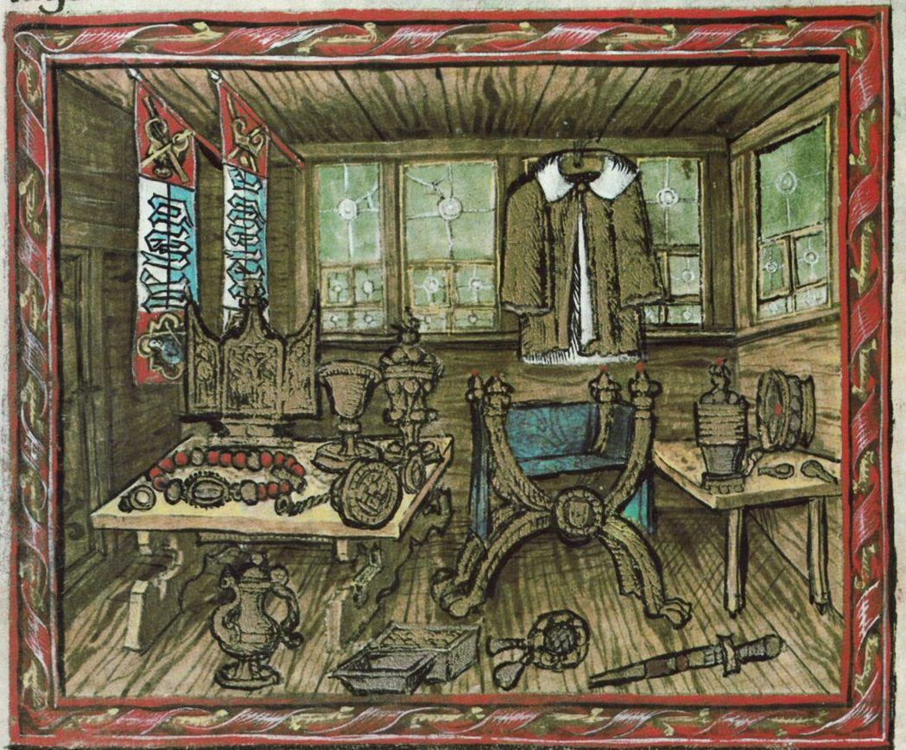
Die Burgunderbeute in Luzern
Diebold Schilling d. J., Luzerner Chronik, 1513, 1513
Diebold Schilling d. J., Luzerner Chronik, 1513 · Public domain · Wikimedia Commons
Datei: Schilling Burgunderbeute.jpg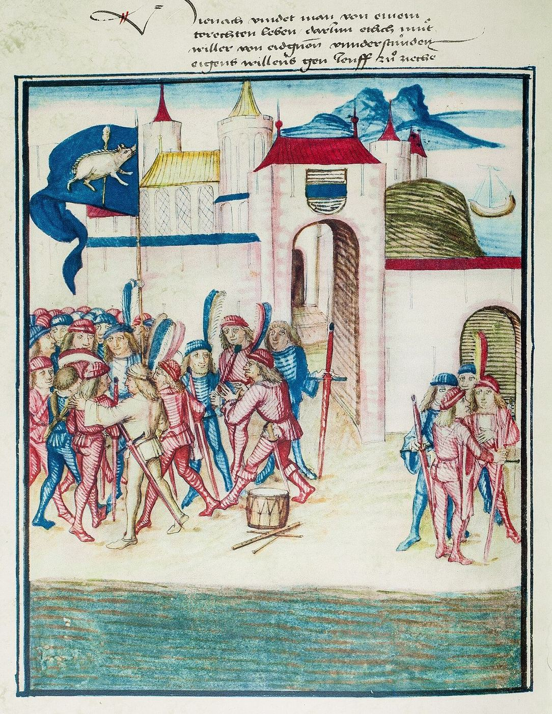
Die Gesellschaft vom torechten Leben
Diebold Schilling d. Ä., Amtliche Berner Chronik, 1483, 1483
Diebold Schilling d. Ä., Amtliche Berner Chronik, 1483 · Public domain · Wikimedia Commons
Datei: Berner Chronik Saubannerzug.jpg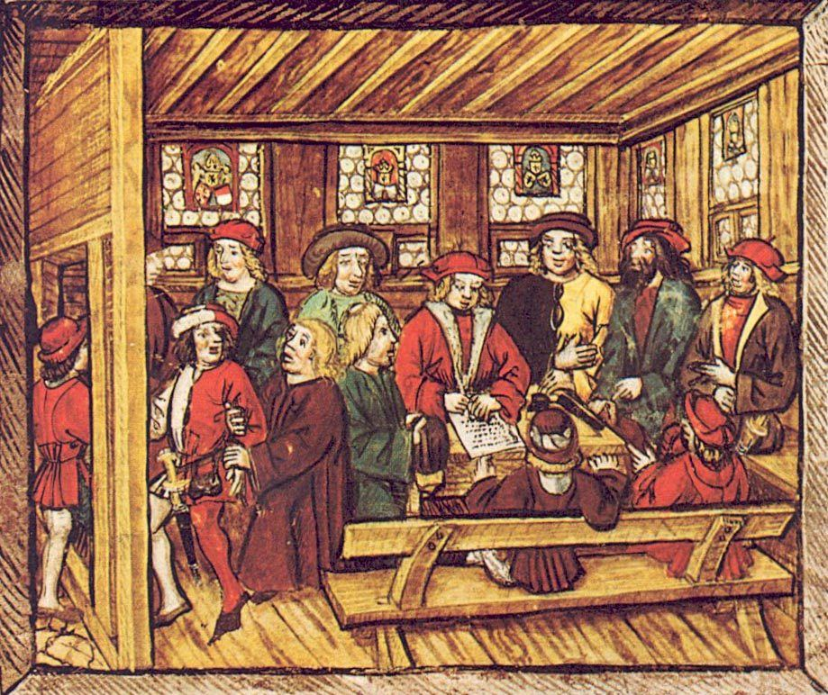
Die Tagsatzung zu Stans
Diebold Schilling d. J., Luzerner Chronik, 1513, 1513
Diebold Schilling d. J., Luzerner Chronik, 1513 · Public domain · Wikimedia Commons
Datei: Tagsatzung Stans 1481 Ausschnitt.jpg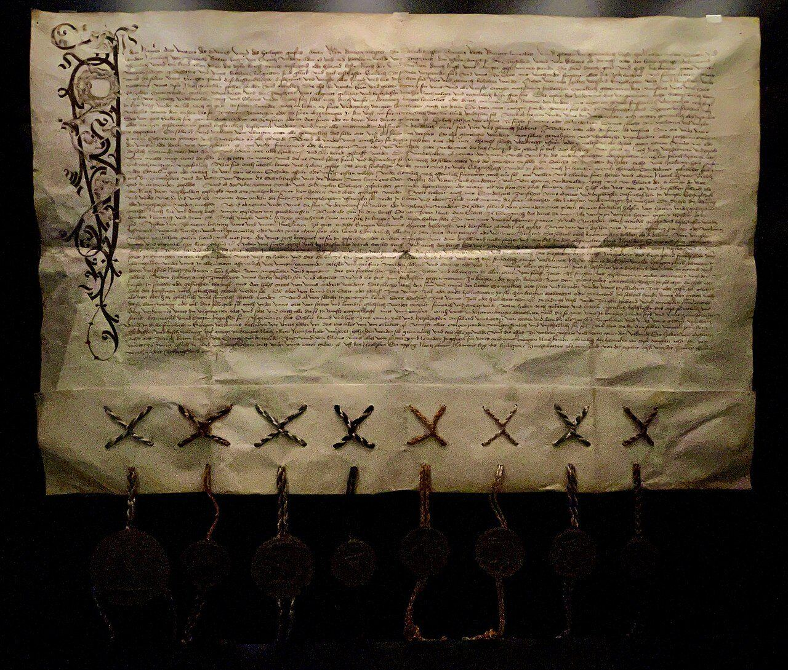
Das Stanser Verkommnis
Unbekannt, 1481
Unbekannt · Public domain · Wikimedia Commons
Datei: Stanser Verkommnis.JPG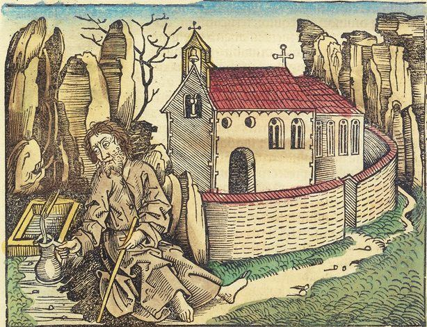
Bruder Klaus in der Weltchronik
Michael Wolgemut und Wilhelm Pleydenwurff, Schedelsche Weltchronik, 1493, 1493
Michael Wolgemut und Wilhelm Pleydenwurff, Schedelsche Weltchronik, 1493 · Public domain · Wikimedia Commons
Datei: Nuremberg chronicles f 256r 1.jpg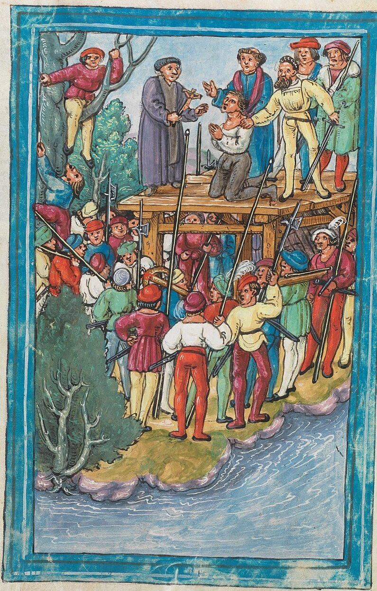
Die Hinrichtung Hans Waldmanns
Diebold Schilling d. J., Luzerner Chronik, 1513, 1513
Diebold Schilling d. J., Luzerner Chronik, 1513 · Public domain · Wikimedia Commons
Datei: Hans Waldmann bei seiner Hinrichtung auf dem Blutgerüst - Diebold Schilling - Luzerner Chronik - 1513.jpg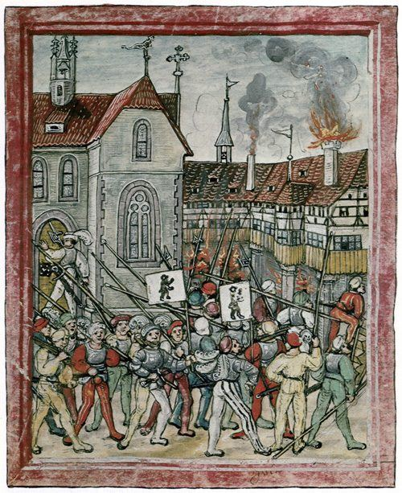
Der Rorschacher Klosterbruch
Diebold Schilling d. J., Luzerner Chronik, 1513, 1513
Diebold Schilling d. J., Luzerner Chronik, 1513 · Public domain · Wikimedia Commons
Datei: Ueberfall Kloster Mariaberg.jpg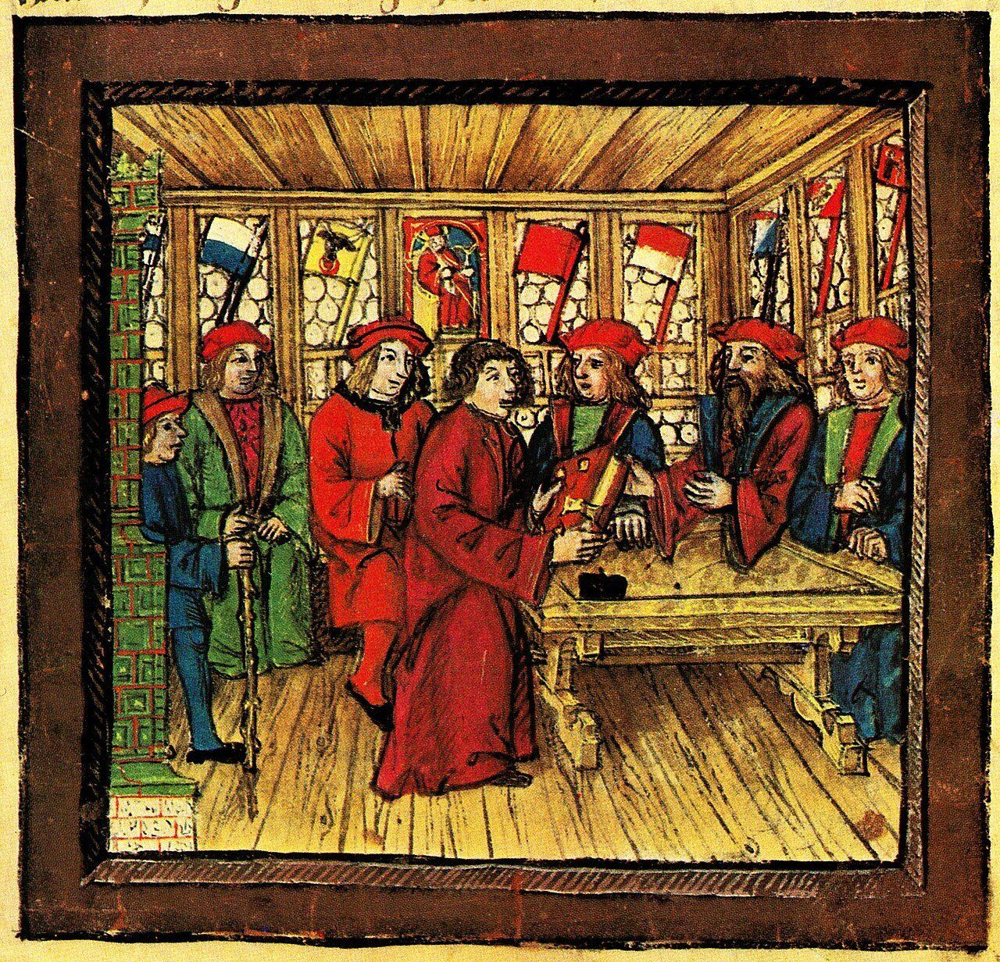
Der Chronist überreicht sein Werk
Diebold Schilling d. J., Luzerner Chronik, 1513, 1513
Diebold Schilling d. J., Luzerner Chronik, 1513 · Public domain · Wikimedia Commons
Datei: Diebold Schilling Chronik Folio 2r.jpg Besuch beim Einsiedler im Ranft
Besuch beim Einsiedler im Ranft
Diebold Schilling d. J., Luzerner Chronik, 1513, April 2008 (upload date)
Diebold Schilling d. J., Luzerner Chronik, 1513 · Public domain · Wikimedia Commons
Datei: Von Flüe Schilling.jpg


Legende · Der Drache und der Geist vom Pilatus
 Konrad Gessner
Konrad Gessner
Tobias Stimmer (1539–1584), 1564, 1564 date QS:P571,+1564-00-00T00:00:00Z/9
Tobias Stimmer (1539–1584), 1564 · Public domain · Wikimedia Commons
Datei: Conrad Gesner by Tobias Stimmer2.jpg Der berühmte Pilatussee
Der berühmte Pilatussee
Kupferstich (um 1754), Zentralbibliothek Zürich, circa 1754 date …
Kupferstich (um 1754), Zentralbibliothek Zürich · Public domain · Wikimedia Commons
Datei: Zentralbibliothek Zürich - Prospect in welchem der Berühmte Pilatus-See liget Vuë du fameux Lac de Pilate et des Environs - 991151654699705501.jpg Der Pilatussee heute
Der Pilatussee heute
Foto: Memch (2014), 2014-06-20
Foto: Memch (2014) · CC0 · Wikimedia Commons
Datei: Pilatussee.jpg Der Drache und der Bauer
Der Drache und der Bauer
Johann Leopold Cysat, Beschreibung des Vierwaldstättersees (1661), 1661
Johann Leopold Cysat, Beschreibung des Vierwaldstättersees (1661) · Public domain · Wikimedia Commons
Datei: Pilatus-Drachen 1661 - Luzerner Drachenstein.jpg Ein Alpendrache
Ein Alpendrache
Johann Jakob Scheuchzer, Itinera alpina (1723), 1723
Johann Jakob Scheuchzer, Itinera alpina (1723) · Public domain · Wikimedia Commons
Datei: Houghton Swi 607.23 - Ouresiphoítes helveticus, fig II.jpg Der Drachenstein im Kupferstich
Der Drachenstein im Kupferstich
Johann Meyer, in: Scheuchzer, Natur-Geschichte des Schweitzerlandes (1746), 18 th century date QS:P,+1750-00-00T00:00:00Z/7
Johann Meyer, in: Scheuchzer, Natur-Geschichte des Schweitzerlandes (1746) · Public domain · Wikimedia Commons
Datei: Drachenstein.tiff Der Pilatus über Kriens
Der Pilatus über Kriens
Johann Wilhelm Jankowski (1866), 1866 date QS:P571,+1866-00-00T00:00:00Z/9
Johann Wilhelm Jankowski (1866) · Public domain · Wikimedia Commons
Datei: J Wilhelm Jankowsky Blick auf Pilatus mit Tomlishorn.jpg


Kapitel 13 · Der Schwabenkrieg und die dreizehn Orte
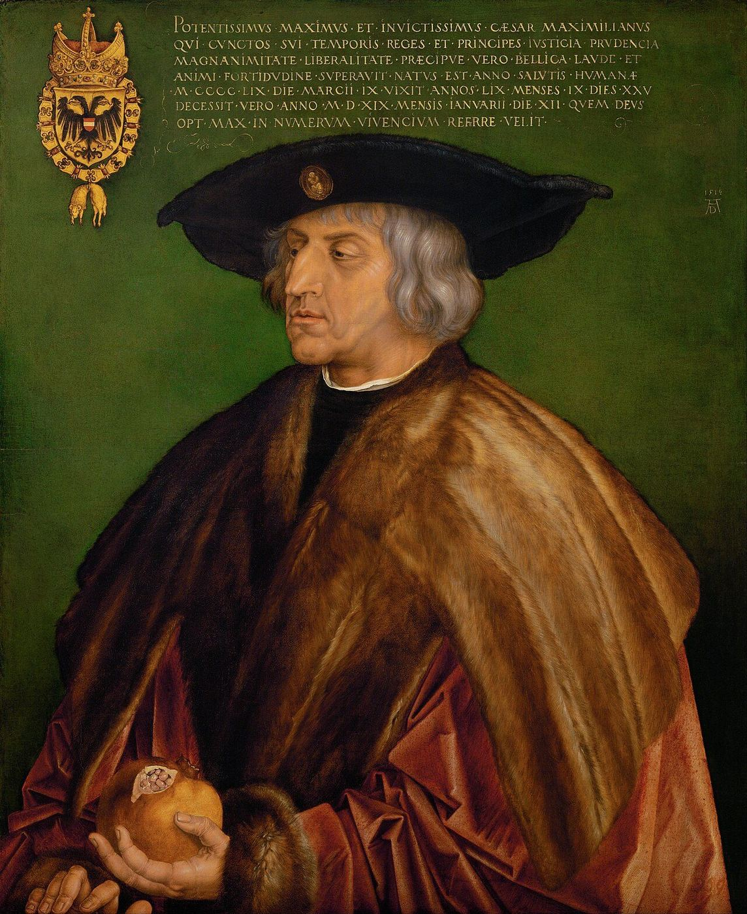
König Maximilian I.
Albrecht Dürer (1471–1528), 1519
Albrecht Dürer (1471–1528) · Public domain · Wikimedia Commons
Datei: Albrecht Dürer - Portrait of Maximilian I - Google Art Project.jpg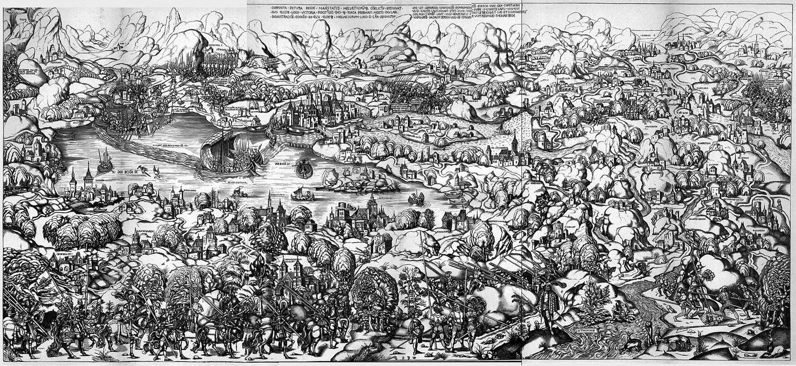
Der ganze Krieg auf einem Blatt
Monogrammist PPW, um 1500, circa 1500 date QS:P,+1500-00-00T00:00:00Z/9,P1480,Q5727902
Monogrammist PPW, um 1500 · Public domain · Wikimedia Commons
Datei: Schwaben-Schweizerkrieg.jpg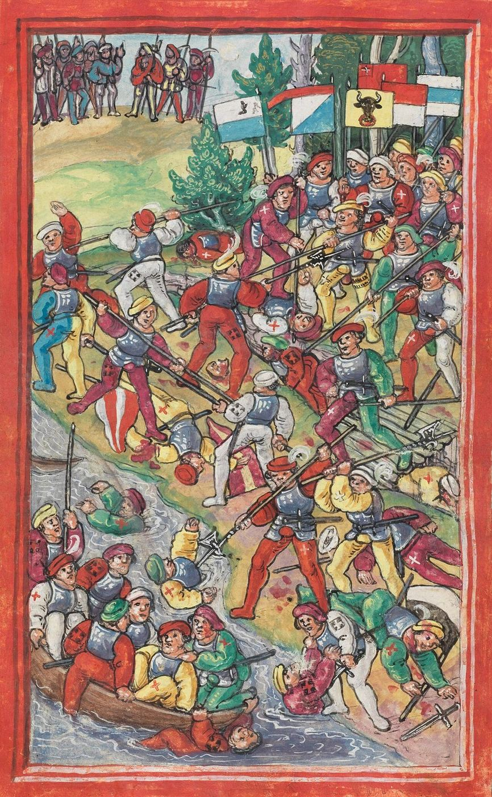
Das Gefecht bei Hard
Diebold Schilling d. J., Luzerner Chronik, 1513, 1513
Diebold Schilling d. J., Luzerner Chronik, 1513 · Public domain · Wikimedia Commons
Datei: Battle of Hard.jpg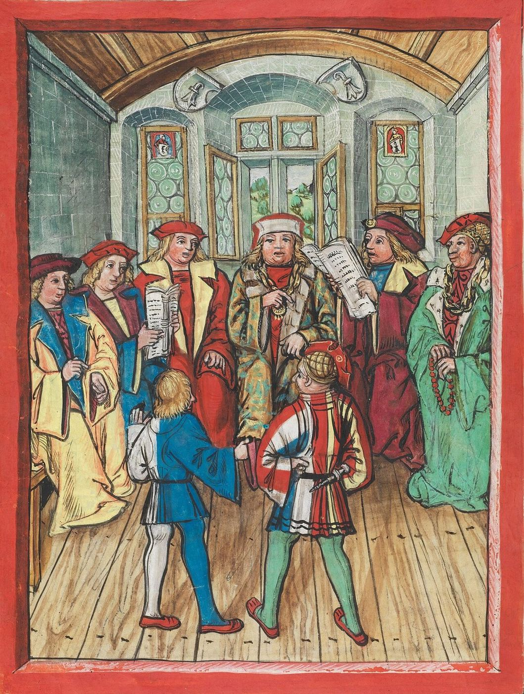
Verhandlungen in Basel
Diebold Schilling d. J., Luzerner Chronik, 1513, 1513
Diebold Schilling d. J., Luzerner Chronik, 1513 · Public domain · Wikimedia Commons
Datei: Peace of Basel 1499 Negotiations.jpg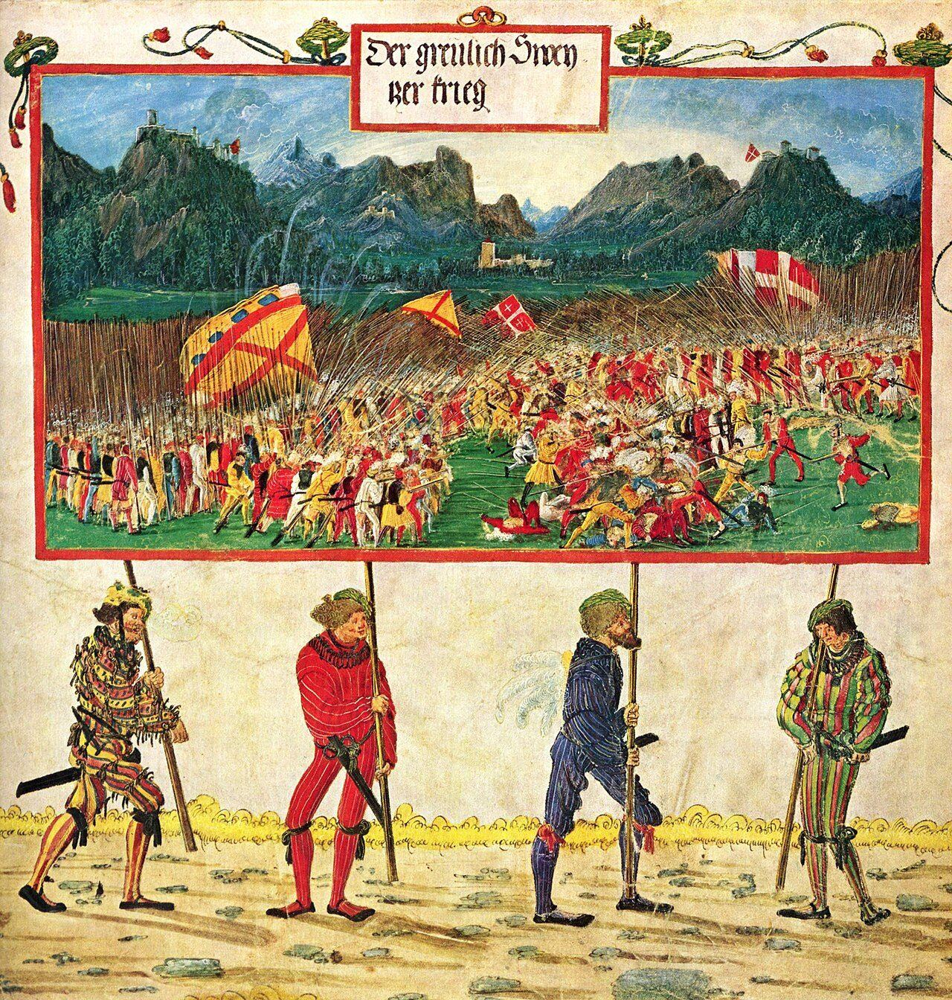
Der Schweizerkrieg im Triumphzug
Albrecht Altdorfer (um 1480–1538), between circa 1513 and circa 1515 date …
Albrecht Altdorfer (um 1480–1538) · Public domain · Wikimedia Commons
Datei: Albrecht Altdorfer 039.jpg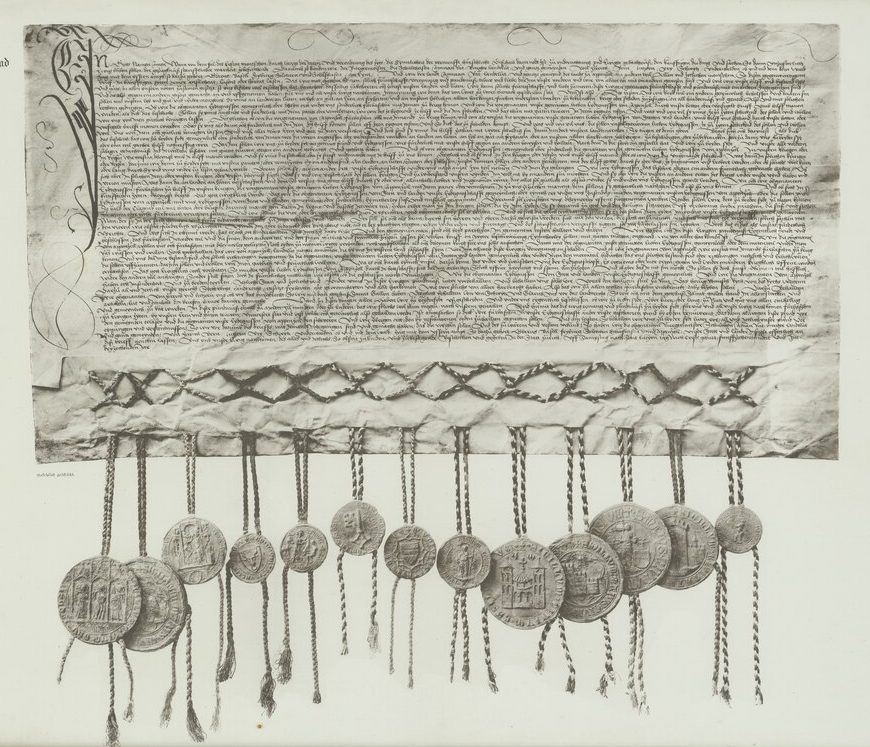
Der Bundesbrief für Appenzell
Fotografie, Kantonsbibliothek Appenzell Ausserrhoden, 1920–1930
Fotografie, Kantonsbibliothek Appenzell Ausserrhoden · Public domain · Wikimedia Commons
Datei: CH-KBAR - Der Appenzeller Bund - KB-013897.tif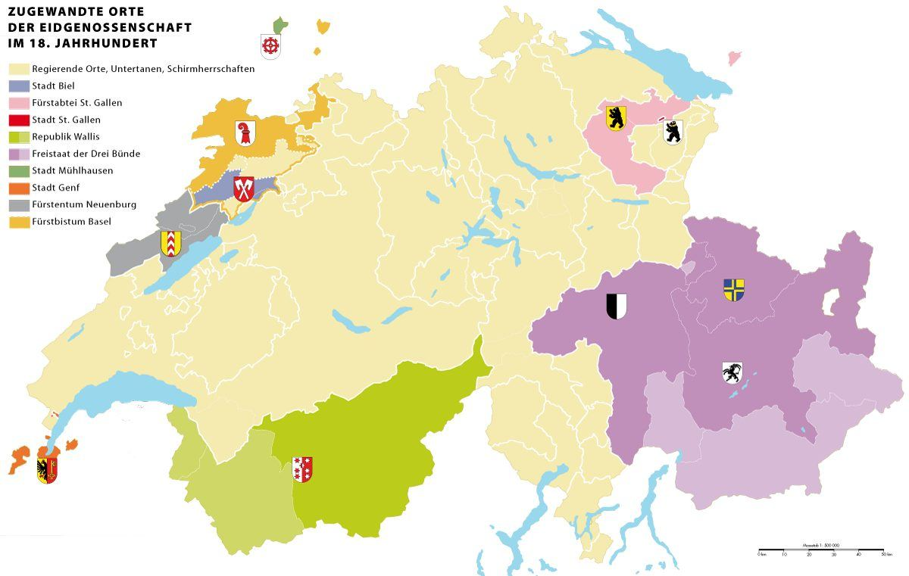
Die Zugewandten Orte
Marco Zanoli, 3.5.2007
Marco Zanoli · CC BY-SA 4.0 · Wikimedia Commons
Datei: Karte Zugewandte Orte.png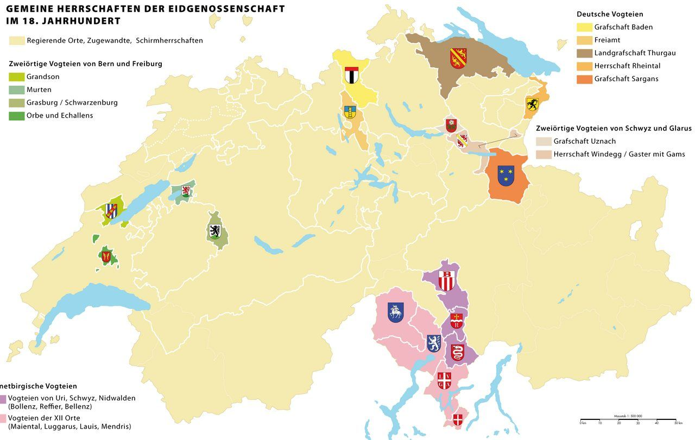
Die Gemeinen Herrschaften
Marco Zanoli, 2.6.2008
Marco Zanoli · CC BY-SA 4.0 · Wikimedia Commons
Datei: Karte Gemeine-Herrschaften.png Die Schlacht bei Dornach
Die Schlacht bei Dornach
Unbekannt, circa 1500 date QS:P,+1500-00-00T00:00:00Z/9,P1480,Q5727902
Unbekannt · Public domain · Wikimedia Commons
Datei: Schlacht bei Dorneck.jpg


Vor der Schweiz · Fünf Wege in den Bund: Freiburg, Solothurn, Basel, Schaffhausen und Appenzell
 Freiburg um 1600
Freiburg um 1600
Martin Martini (um 1565–1610), 1606, 1606 date QS:P571,+1606-00-00T00:00:00Z/9
Martin Martini (um 1565–1610), 1606 · Public domain · Wikimedia Commons
Datei: Martin Martini 1606 Fribourg.jpg Der heilige Ursus
Der heilige Ursus
Hans Holbein d. J. (1497/98–1543), 1522, 1522 date QS:P571,+1522-00-00T00:00:00Z/9
Hans Holbein d. J. (1497/98–1543), 1522 · Public domain · Wikimedia Commons
Datei: Hans Holbein d. J. 010.jpg Die Belagerung von Solothurn 1318
Die Belagerung von Solothurn 1318
Martin Disteli (1802–1844), 1836, 1836 date QS:P571,+1836-00-00T00:00:00Z/9
Martin Disteli (1802–1844), 1836 · Public domain · Wikimedia Commons
Datei: Zentralbibliothek Solothurn - Die Belagerung von Solothurn 1318 - aa0238.tif Das Konzil von Basel
Das Konzil von Basel
Schedelsche Weltchronik (1493), Rijksmuseum Amsterdam, 1493
Schedelsche Weltchronik (1493), Rijksmuseum Amsterdam · CC0 · Wikimedia Commons
Datei: Concilie van Bazel Concilium Basiliense (titel op object) Liber Chronicarum (serietitel), RP-P-2016-49-72-3.jpg Ein Wappen in der Matrikel
Ein Wappen in der Matrikel
Rektoratsmatrikel der Universität Basel, 1496 (Universitätsbibliothek Basel), 1496
Rektoratsmatrikel der Universität Basel, 1496 (Universitätsbibliothek Basel) · Public domain · Wikimedia Commons
Datei: Basel, Universitätsbibliothek, AN II 3, f. 97r – Matriculation Register of the Rectorate of the University of Basel, Volume 1 (1460-1567).jpg Schaffhausen 1642
Schaffhausen 1642
Matthäus Merian nach Hans Caspar Lang, 1642, 1642
Matthäus Merian nach Hans Caspar Lang, 1642 · Public domain · Wikimedia Commons
Datei: Merian Schaffhausen 1642.jpg Die Schlacht bei Vögelinsegg 1403
Die Schlacht bei Vögelinsegg 1403
Diebold Schilling d. Ä., Spiezer Chronik (1484/85), 1465
Diebold Schilling d. Ä., Spiezer Chronik (1484/85) · Public domain · Wikimedia Commons
Datei: Schilling Schlacht bei Voeglinsegg 1403.jpg Die Appenzeller Standesscheibe von 1585
Die Appenzeller Standesscheibe von 1585
Glasmaler, 1585 (Kantonsbibliothek Appenzell Ausserrhoden), 1585 date QS:P571,+1585-00-00T00:00:00Z/9
Glasmaler, 1585 (Kantonsbibliothek Appenzell Ausserrhoden) · Public domain · Wikimedia Commons
Datei: CH-KBAR - Das Landt Appenzell - KB-014149.tif Die Schlacht bei Grandson
Die Schlacht bei Grandson
Diebold Schilling d. J., Luzerner Chronik (1513), 1515
Diebold Schilling d. J., Luzerner Chronik (1513) · Public domain · Wikimedia Commons
Datei: Luzerner Schilling Battle of Grandson.jpg


.jpg){kind=link}


Kapitel 14 · Marignano: Die Söldner Europas
 Ein Reisläufer in voller Pracht
Ein Reisläufer in voller Pracht
Hans Rudolf Manuel (1525–1571), 1553 date QS:P571,+1553-00-00T00:00:00Z/9
Hans Rudolf Manuel (1525–1571) · Public domain · Wikimedia Commons
Datei: Niklaus Manuel 1553.jpg Der Verrat von Novara
Der Verrat von Novara
Diebold Schilling d. J., Luzerner Chronik, 1513, 1513
Diebold Schilling d. J., Luzerner Chronik, 1513 · Public domain · Wikimedia Commons
Datei: Novara 1500.jpg Kardinal Schiner
Kardinal Schiner
nach Tobias Stimmer (1539–1584), 16 th century date QS:P,+1550-00-00T00:00:00Z/7
nach Tobias Stimmer (1539–1584) · Public domain · Wikimedia Commons
Datei: Matthäus Schiner.jpg Kriegsrat im Feld
Kriegsrat im Feld
Urs Graf (um 1485–1528), 1515; upload 2007-04-10 /
Urs Graf (um 1485–1528) · Public domain · Wikimedia Commons
Datei: Urs Graf consiglio di guerra.jpg Das Juliusbanner von Uri
Das Juliusbanner von Uri
Anonymous Unknown author, 1512
Anonymous Unknown author · Public domain · Wikimedia Commons
Datei: Juliusbanner Uri.jpg Der König greift an
Der König greift an
Noël Bellemare (zugeschrieben), um 1529/30, circa 1529-1530
Noël Bellemare (zugeschrieben), um 1529/30 · Public domain · Wikimedia Commons
Datei: Noël Bellemare.- François Ier chargeant contre les Suisses à Marignan, 14-09-1515.png Das Schlachtfeld
Das Schlachtfeld
Urs Graf (um 1485–1528), 1521
Urs Graf (um 1485–1528) · Public domain · Wikimedia Commons
Datei: Urs Graf Schrecken des Kriegs 1521.jpg Zwei Seiten eines Reisläufers
Zwei Seiten eines Reisläufers
Niklaus Manuel (um 1484–1530), 16 th century date QS:P,+1550-00-00T00:00:00Z/7
Niklaus Manuel (um 1484–1530) · Public domain · Wikimedia Commons
Datei: Reislaeufer Bettler.jpg Papst Julius II. und seine Garde
Papst Julius II. und seine Garde
Raffael (1483–1520), December 1511 date QS:P571,+1511-12-00T00:00:00Z/10
Raffael (1483–1520) · Public domain · Wikimedia Commons
Datei: Raphael - The Mass at Bolsena.jpg Rückzug von Marignano
Rückzug von Marignano
Ferdinand Hodler (1853–1918)
Ferdinand Hodler (1853–1918) · Public domain · Wikimedia Commons
Datei: Ferdinand Hodler - Rückzug von Marignano. Karton III - 1584 - Kunsthaus Zürich.jpg


Überblick · Orte, Zugewandte und Untertanen
 Wappenscheiben im Tagsatzungssaal von Baden
Wappenscheiben im Tagsatzungssaal von Baden
WillYs Fotowerkstatt, 2010-08-12
WillYs Fotowerkstatt · CC BY 3.0 · Wikimedia Commons
Datei: Baden Tagsatzungssaal Wappenscheiben.jpg Die Räte der Eidgenossen – aus einem holländischen Atlas
Die Räte der Eidgenossen – aus einem holländischen Atlas
Atlas historique, Verlag Châtelain, Amsterdam, 18. Jahrhundert, 18 th century date QS:P,+1750-00-00T00:00:00Z/7
Atlas historique, Verlag Châtelain, Amsterdam, 18. Jahrhundert · Public domain · Wikimedia Commons
Datei: Carte Generale des Differentes Assemblees ou Conseils.jpg Die grossen Bäder von Baden
Die grossen Bäder von Baden
Hans Ulrich Kern zugeschrieben, kolorierte Aquatinta, Verlag Trachsler, Zürich, Unknown date
Hans Ulrich Kern zugeschrieben, kolorierte Aquatinta, Verlag Trachsler, Zürich · Public domain · Wikimedia Commons
Datei: CH-NB - Baden, die grossen Bäder - Collection Gugelmann - GS-GUGE-TRACHSLER-F-24.tif Rottweil – ein eidgenössischer Verbündeter am Neckar
Rottweil – ein eidgenössischer Verbündeter am Neckar
Matthäus Merian, Topographia, 1643
Matthäus Merian, Topographia, 1643 · Public domain · Wikimedia Commons
Datei: Rottweil-1643-Merian.jpg Das Rathaus von Mülhausen
Das Rathaus von Mülhausen
JuJu939, 2015-09-19 15:14:31
JuJu939 · CC BY-SA 4.0 · Wikimedia Commons
Datei: Hôtel de ville - Mulhouse 68.JPG Das Schloss zu Frauenfeld
Das Schloss zu Frauenfeld
Unbekannt, between 1770 and 1800 date …
Unbekannt · Public domain · Wikimedia Commons
Datei: Zentralbibliothek Zürich - Schloss zu Frauenfeld - 991083275969705501.jpg Lugano am Luganersee
Lugano am Luganersee
Unbekannt, Unknown date
Unbekannt · Public domain · Wikimedia Commons
Datei: CH-NB - Lugano, von Süden - Collection Gugelmann - GS-GUGE-TRACHSLER-F-20.tif Baden an der Limmat
Baden an der Limmat
Jakob Samuel Weibel (1771–1846), kolorierte Aquatinta, Unknown date
Jakob Samuel Weibel (1771–1846), kolorierte Aquatinta · Public domain · Wikimedia Commons
Datei: CH-NB - Baden, von Norden - Collection Gugelmann - GS-GUGE-WEIBEL-F-45.tif


Nebengeschichte · Der Sacco di Roma – die Schweizergarde am 6. Mai 1527
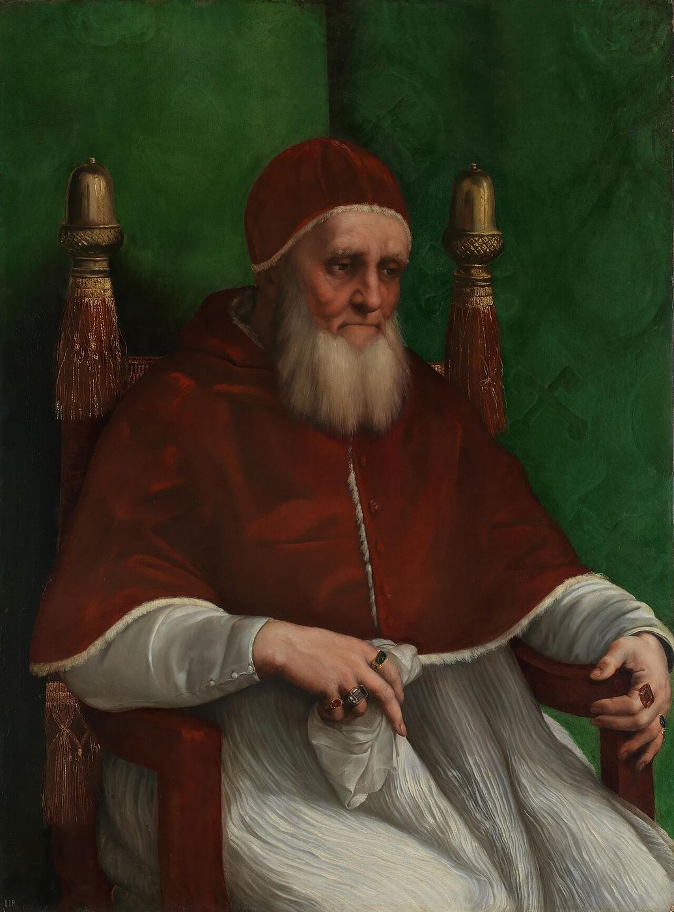
Papst Julius II.
Raffael (1483–1520), 1511, 1511
Raffael (1483–1520), 1511 · Public domain · Wikimedia Commons
Datei: Raffaello Sanzio - Ritratto di Papa Giulio II (National Gallery, London).jpg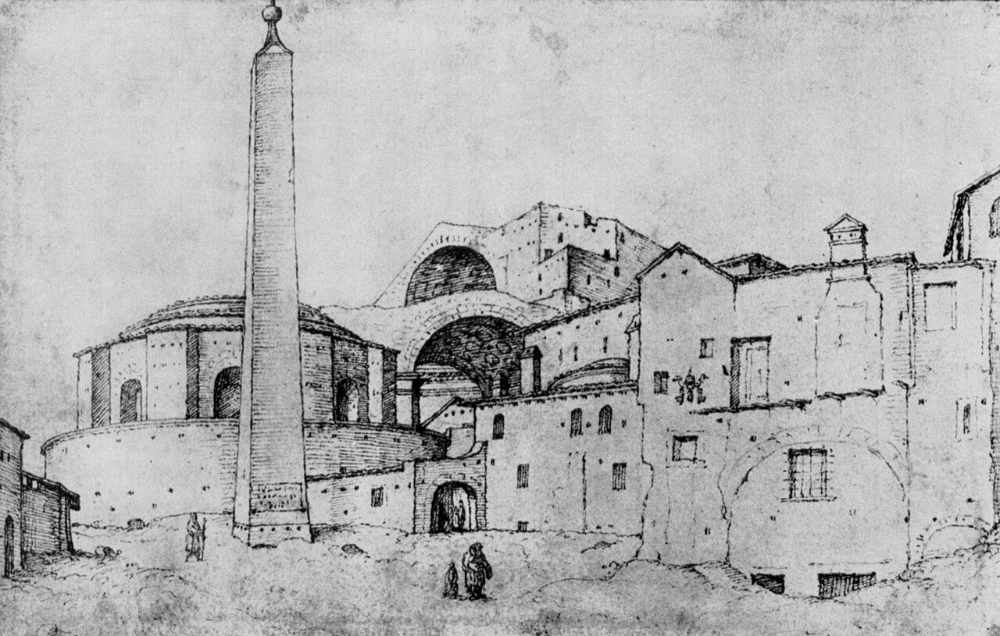
Am Obelisken
Maarten van Heemskerck (1498–1574), um 1532, circa 1532 date …
Maarten van Heemskerck (1498–1574), um 1532 · Public domain · Wikimedia Commons
Datei: Maarten van Heemskerck - Santa Maria della Febbre, Vatican Obelisk, Saint Peter's Basilica in construction (1532).jpg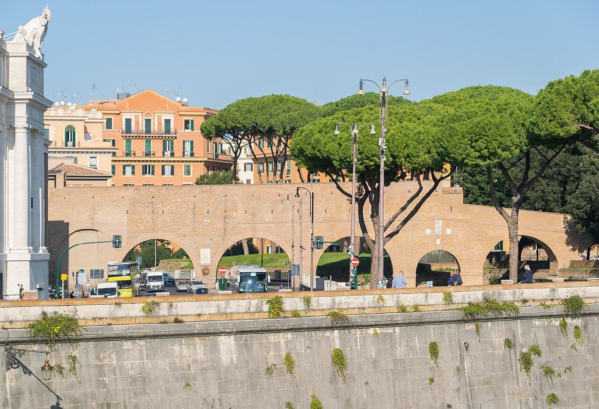
Der Fluchtweg
Foto: Krzysztof Golik (2018), 2018-11-16 13:08:59
Foto: Krzysztof Golik (2018) · CC BY-SA 4.0 · Wikimedia Commons
Datei: Passetto di Borgo in Rome.jpg- Der Sacco auf einem Prunkteller
Werkstatt des Guido Fontana, Urbino (um 1540), circa 1540 date …
Werkstatt des Guido Fontana, Urbino (um 1540) · CC0 · Wikimedia Commons
Datei: Large plate (grande piatto)- An episode from the Sack of Rome, 1527- the assault on the Borgo (?) MET sf-rlc-1975-1-1120.jpg - Clemens VII. nach dem Sacco
Sebastiano del Piombo (um 1485–1547), 1531, 1531
Sebastiano del Piombo (um 1485–1547), 1531 · Public domain · Wikimedia Commons
Datei: Portrait of Pope Clement VII de' Medici (by Sebastiano del Piombo) - The J. Paul Getty Museum.jpg - Vereidigung am 6. Mai 2013
Foto: Paul Ronga (2013), 2013-05-06 16:51:35
Foto: Paul Ronga (2013) · CC BY-SA 3.0 · Wikimedia Commons
Datei: Swiss guard swearing in.jpg  Roma capta 1527
Roma capta 1527
Flämischer Meister (16. Jahrhundert), 16 th century date QS:P,+1550-00-00T00:00:00Z/7
Flämischer Meister (16. Jahrhundert) · Public domain · Wikimedia Commons
Datei: The Sack of Rome.jpg

.jpg){kind=link}

.jpg){kind=link}


-_An_episode_from_the_Sack_of_Rome,_1527-_the_assault_on_the_Borgo_(%3F)_MET_sf-rlc-1975-1-1120.jpg){kind=link}

_-_The_J._Paul_Getty_Museum.jpg){kind=link}


Kapitel 15 · Zwingli und die Reformation in Zürich
- Huldrych Zwingli
Hans Asper (1499–1571), 1549
Hans Asper (1499–1571) · Public domain · Wikimedia Commons
Datei: Zwingli Hans Asper.jpeg - Das Grossmünster um 1576
Jos Murer (1530–1580), 1576
Jos Murer (1530–1580) · Public domain · Wikimedia Commons
Datei: Druck Grossmünster.jpg - Die Erste Zürcher Disputation
Abschrift von Heinrich Bullingers Reformationsgeschichte, um 1600, circa 1600 date QS:P,+1600-00-00T00:00:00Z/9,P1480,Q5727902
Abschrift von Heinrich Bullingers Reformationsgeschichte, um 1600 · Public domain · Wikimedia Commons
Datei: Zürcher-Disputation 1523.jpg - Bilder werden verbrannt
Anonymous Unknown author, 1524
Anonymous Unknown author · Public domain · Wikimedia Commons
Datei: Destruction of icons in Zurich 1524.jpg - Die Froschauer-Bibel von 1531
Christoffel Froschauer (Druck), 1531
Christoffel Froschauer (Druck) · Public domain · Wikimedia Commons
Datei: Titel Bibel Zwingli zürich.jpg - Die Hinrichtung von Felix Manz
Heinrich Thomann, Abschrift von Bullingers Reformationsgeschichte, 1605/06, between 1605 and 1606 date …
Heinrich Thomann, Abschrift von Bullingers Reformationsgeschichte, 1605/06 · Public domain · Wikimedia Commons
Datei: Ertraenkung felix manz.jpg - Luther und Zwingli in Marburg
August Noack (1822–1905), 2015-08-25
August Noack (1822–1905) · Public domain · Wikimedia Commons
Datei: Religionsgespräch zu Marburg 1529 August Noack.jpg - Die Schlacht bei Kappel
Holzschnitt aus der Chronik von Johannes Stumpf, Ausgabe 1586, 1586
Holzschnitt aus der Chronik von Johannes Stumpf, Ausgabe 1586 · Public domain · Wikimedia Commons
Datei: The battle of Kappel 1531 (88362511).jpg - Zwinglis Tod
Karl Jauslin (1842–1904), 19th century, upload April 2008
Karl Jauslin (1842–1904) · Public domain · Wikimedia Commons
Datei: Ermordung Zwingli Jauslin.JPG  Die Kappeler Milchsuppe
Die Kappeler Milchsuppe
Albert Anker (1831–1910), 1869
Albert Anker (1831–1910) · Public domain · Wikimedia Commons
Datei: Albert Anker - Die Kappeler Milchsuppe (1869).jpg


.jpg){kind=link}


.jpg){kind=link}
Nebengeschichte · Thomas Platter – vom Geissbuben zum Buchdrucker
 Grächen und das Mattertal
Grächen und das Mattertal
Walter Mittelholzer (1894–1937), ETH-Bibliothek Zürich, 1926 date QS:P571,+1926-00-00T00:00:00Z/9
Walter Mittelholzer (1894–1937), ETH-Bibliothek Zürich · Public domain · Wikimedia Commons
Datei: ETH-BIB-Embd, Grächen, Gasenried, St. Niklaus, Mattertal v. N. aus 3000 m-Inlandflüge-LBS MH01-005211.tif Ein Seiler bei der Arbeit
Ein Seiler bei der Arbeit
Hausbuch der Mendelschen Zwölfbrüderstiftung, Nürnberg, 1538, 1538
Hausbuch der Mendelschen Zwölfbrüderstiftung, Nürnberg, 1538 · Public domain · Wikimedia Commons
Datei: Mendel I 159 r.jpg Calvins «Institutio», Basel 1536
Calvins «Institutio», Basel 1536
Thomas Platter und Balthasar Lasius, Basel 1536, 1536
Thomas Platter und Balthasar Lasius, Basel 1536 · Public domain · Wikimedia Commons
Datei: Christianae religionis institutio (1536).jpg Felix Platter
Felix Platter
Hans Bock d. Ä. (um 1550–1624), 1584 date QS:P571,+1584-00-00T00:00:00Z/9
Hans Bock d. Ä. (um 1550–1624) · Public domain · Wikimedia Commons
Datei: Hans Bock – Felix Platter 1584.jpg Thomas Platter im 83. Lebensjahr
Thomas Platter im 83. Lebensjahr
Hans Bock d. Ä. (um 1550–1624), 1581
Hans Bock d. Ä. (um 1550–1624) · CC0 · Wikimedia Commons
Datei: Gw11 0002830 19950606 s01.jpg Basel vom Münster aus
Basel vom Münster aus
Matthäus Merian d. Ä. (1593–1650), circa 1650 date QS:P,+1650-00-00T00:00:00Z/9,P1480,Q5727902
Matthäus Merian d. Ä. (1593–1650) · Public domain · Wikimedia Commons
Datei: Basel-Merian.JPG

.jpg){kind=link}


Kapitel 16 · Calvins Genf und die Welt der Reformierten
- Guillaume Farel
Hendrik Hondius (1573–1650), 1599, 1599
Hendrik Hondius (1573–1650), 1599 · Public domain · Wikimedia Commons
Datei: Guillaume Farel 02.jpg - Johannes Calvin
Unbekannt, Circa 1550 date …
Unbekannt · Public domain · Wikimedia Commons
Datei: Portrait of John Calvin (1509–1564), by anonymous - Museum Catharijneconvent.jpg - Michel Servet
Christian Fritzsch, um 1740, circa 1740 date QS:P,+1740-00-00T00:00:00Z/9,P1480,Q5727902
Christian Fritzsch, um 1740 · Public domain · Wikimedia Commons
Datei: Michael Servetus.jpg - Genf im 17. Jahrhundert
Matthäus Merian (1593–1650), 17 th century date QS:P571,+1650-00-00T00:00:00Z/7
Matthäus Merian (1593–1650) · Public domain · Wikimedia Commons
Datei: CH-NB - Grafiken Orts- und Landschaftsansichten - GS-GRAF-ANSI-GE-42.tif - Théodore de Bèze
Unbekannt, 16 th century date QS:P,+1550-00-00T00:00:00Z/7
Unbekannt · Public domain · Wikimedia Commons
Datei: Théodore de Bèze - musée de la Réformation.jpg - Das Reformationsdenkmal in Genf
Guilhem Vellut from Annecy, France, 2014-08-20 11:18
Guilhem Vellut from Annecy, France · CC BY 2.0 · Wikimedia Commons
Datei: Reformation Wall @ Parc des Bastions @ Geneva (15235727388).jpg - Heinrich Bullinger
Hans Asper (1499–1571), 1550 date QS:P571,+1550-00-00T00:00:00Z/9
Hans Asper (1499–1571) · Public domain · Wikimedia Commons
Datei: Heinrich Bullinger.jpg - Der Angriff auf Genf 1602
Nach Matthias Quad, frühes 17. Jahrhundert, between 1622 and 1626 date …
Nach Matthias Quad, frühes 17. Jahrhundert · Public domain · Wikimedia Commons
Datei: Escalade-battle-2.jpg - Die Mère Royaume
François Diodati (1647–1690), um 1667, circa 1667 date QS:P,+1667-00-00T00:00:00Z/9,P1480,Q5727902
François Diodati (1647–1690), um 1667 · Public domain · Wikimedia Commons
Datei: L'Escalade-Mere Royaume.jpg  Die Escalade
Die Escalade
Karl Jauslin (1842–1904), 19th century, upload April 2008
Karl Jauslin (1842–1904) · Public domain · Wikimedia Commons
Datei: Escalade Jauslin.jpg


,_by_anonymous_-_Museum_Catharijneconvent.jpg){kind=link}


.jpg){kind=link}


Nebengeschichte · Paracelsus – der Arzt, der die Lehrbücher verbrannte
 Die Teufelsbrücke bei Egg
Die Teufelsbrücke bei Egg
Jag9889, 2018-07-08 10:25:07
Jag9889 · CC BY-SA 4.0 · Wikimedia Commons
Datei: Teufelsbrücke am Etzel über die Sihl, Egg SZ 20180708-jag9889.jpg «Famoso doctor Pareselsus»
«Famoso doctor Pareselsus»
Unbekannt, 17 th century date QS:P,+1650-00-00T00:00:00Z/7
Unbekannt · Public domain · Wikimedia Commons
Datei: Paracelsus.jpg Johannes Froben
Johannes Froben
Hans Holbein d. J. (1497/98–1543), between circa 1522 and circa 1523 date …
Hans Holbein d. J. (1497/98–1543) · Public domain · Wikimedia Commons
Datei: Hans Holbein the Younger (1497-8-1543) - Johannes Froben (1460-1527) - RCIN 403035 - Royal Collection.jpg Paracelsus im Wirtshaus
Paracelsus im Wirtshaus
Holzstich aus Moriz Bermann, «Alt- und Neu-Wien» (1880), 1880 date QS:P571,+1880-00-00T00:00:00Z/9
Holzstich aus Moriz Bermann, «Alt- und Neu-Wien» (1880) · Public domain · Wikimedia Commons
Datei: BERMANN(1880) p0736 Paracelsus im Wirtshaus.jpg Appenzell um 1548
Appenzell um 1548
Johannes Stumpf, Schweizer Chronik (1548), Holzschnitt, 1547–1606
Johannes Stumpf, Schweizer Chronik (1548), Holzschnitt · Public domain · Wikimedia Commons
Datei: CH-KBAR - Appenzell, Dorfansicht, 1547-1606 - KB-000270.tif Das «Azoth»-Bildnis von 1567
Das «Azoth»-Bildnis von 1567
Holzschnitt in «Philosophiae magnae Paracelsi», Köln 1567, 1567
Holzschnitt in «Philosophiae magnae Paracelsi», Köln 1567 · Public domain · Wikimedia Commons
Datei: Paracelsus 1567 - azoth.jpg Basel um 1493
Basel um 1493
Michael Wolgemut oder Wilhelm Pleydenwurff, Schedelsche Weltchronik (Nürnberg 1493), koloriert, 1493 date QS:P571,+1493-00-00T00:00:00Z/9
Michael Wolgemut oder Wilhelm Pleydenwurff, Schedelsche Weltchronik (Nürnberg 1493), koloriert · Public domain · Wikimedia Commons
Datei: CH-NB - Grafiken Orts- und Landschaftsansichten - GS-GRAF-ANSI-BS-20.tif


_-_Johannes_Froben_(1460-1527)_-_RCIN_403035_-_Royal_Collection.jpg){kind=link}
_p0736_Paracelsus_im_Wirtshaus.jpg){kind=link}

Kapitel 17 · Gegenreformation und Bündner Wirren
 Karl Borromäus
Karl Borromäus
Giovanni Ambrogio Figino (1548–1608), between 1575 and 1599 date …
Giovanni Ambrogio Figino (1548–1608) · Public domain · Wikimedia Commons
Datei: Carlo Borromeo.jpg Petrus Canisius
Petrus Canisius
Dominicus Custos (um 1560–1615), circa 1600 date …
Dominicus Custos (um 1560–1615) · Public domain · Wikimedia Commons
Datei: Petrus Canisius 1600.jpg Der Goldene Bund von 1586
Der Goldene Bund von 1586
Unbekannt, 1586
Unbekannt · Public domain · Wikimedia Commons
Datei: Goldener Bund.JPG Eine Hexenverbrennung im Oktober 1555
Eine Hexenverbrennung im Oktober 1555
Wickiana, Sammlung von Johann Jakob Wick (1522–1588), Zentralbibliothek Zürich, 2012-06-23 17:57:22
Wickiana, Sammlung von Johann Jakob Wick (1522–1588), Zentralbibliothek Zürich · Public domain · Wikimedia Commons
Datei: Wickiana Hexenverbrennung.jpg Der Veltliner Mord
Der Veltliner Mord
Anonymous Unknown author, 2012-03-28
Anonymous Unknown author · Public domain · Wikimedia Commons
Datei: Sacro Macello.jpg Jürg Jenatsch
Jürg Jenatsch
Died more than 70 years ago, 1639
Died more than 70 years ago · Public domain · Wikimedia Commons
Datei: GeorgJenatsch.jpg Plurs vor und nach dem Bergsturz
Plurs vor und nach dem Bergsturz
Unbekannt, 1635 date QS:P571,+1635-00-00T00:00:00Z/9
Unbekannt · Public domain · Wikimedia Commons
Datei: Eigentlich Vorbildung des schönen Fleckens Plurs, und wie der selbe nach seinem schröcklichen undergang geschaffen 1618 - btv1b53238763x (1 of 2).jpg Johann Rudolf Wettstein
Johann Rudolf Wettstein
Samuel Hofmann (1595–1649), 1639
Samuel Hofmann (1595–1649) · CC BY-SA 4.0 · Wikimedia Commons
Datei: Bildnis des Johann Rudolf Wettstein.jpg Friedensschluss in Münster
Friedensschluss in Münster
Gerard ter Borch (1617–1681), 1648
Gerard ter Borch (1617–1681) · Public domain · Wikimedia Commons
Datei: Westfaelischer Friede in Muenster (Gerard Terborch 1648).jpg Der Mord an Pompejus Planta
Der Mord an Pompejus Planta
Karl Jauslin (1842–1904), 19th century, upload April 2008
Karl Jauslin (1842–1904) · Public domain · Wikimedia Commons
Datei: Ermordung Plantas Jauslin.JPG


.jpg){kind=link}

.jpg){kind=link}

Überblick · Bischöfe, Äbte und der Papst – die Kirche als Landesherrin
- Das Bistum Konstanz auf einer Karte von 1779
Johann Rudolf Holzhalb nach I. B. Sauter, 1779, 1779
Johann Rudolf Holzhalb nach I. B. Sauter, 1779 · Public domain · Wikimedia Commons
Datei: Bistum Konstanz Karte mit Dekanaten 1779.jpg - Das Fürstbistum Basel im 16. Jahrhundert
Marco Zanoli, 2006-02-23
Marco Zanoli · CC BY-SA 4.0 · Wikimedia Commons
Datei: Fuerstbistum Basel 16Jh.png - Pruntrut, die Residenz der Fürstbischöfe
Christoph Riegel, Radierung, 1690 (Zentralbibliothek Zürich), 1690 date QS:P571,+1690-00-00T00:00:00Z/9
Christoph Riegel, Radierung, 1690 (Zentralbibliothek Zürich) · Public domain · Wikimedia Commons
Datei: Chr Riegel - Bruntrut (Radierung 1690, Zentralbibliothek Zürich 991097866129705501).jpg - Jakob Christoph Blarer von Wartensee
Unbekannt, between 1542 and 1608 date …
Unbekannt · Public domain · Wikimedia Commons
Datei: BlarerWartensee.jpg - Muri – «Das Fürstliche Kloster»
Nach einer Zeichnung von Wolf, 1765 (Zentralbibliothek Zürich), 1770 date QS:P571,+1770-00-00T00:00:00Z/9
Nach einer Zeichnung von Wolf, 1765 (Zentralbibliothek Zürich) · Public domain · Wikimedia Commons
Datei: Zentralbibliothek Zürich - Muri Das Füstliche Kloster - 991065324549705501.jpg - Die Zehntscheune von Duillier
EdouardHue, 2011-08-21
EdouardHue · CC BY-SA 3.0 · Wikimedia Commons
Datei: Grange des dîmes de Duillier (Suisse).jpg - Das «Closter Interlacken» als Berner Amtssitz
J. Grimm (Zeichnung), Verlag J. L. Nöthiger, Bern 1740, 1740 date QS:P571,+1740-00-00T00:00:00Z/9
J. Grimm (Zeichnung), Verlag J. L. Nöthiger, Bern 1740 · Public domain · Wikimedia Commons
Datei: Zentralbibliothek Zürich - Prospect vom Closter Interlacken Löblichen Canton Bern gehörig - 991029879119705501.jpg - Pankraz Vorster
Unbekannt, circa 1790 date QS:P,+1790-00-00T00:00:00Z/9,P1480,Q5727902
Unbekannt · Public domain · Wikimedia Commons
Datei: Pankraz Vorster.jpg  Das Kloster Einsiedeln
Das Kloster Einsiedeln
Gabriel Ludwig Lory (Zeichnung) und Marquard Wocher (Radierung), 1786, 1786
Gabriel Ludwig Lory (Zeichnung) und Marquard Wocher (Radierung), 1786 · Public domain · Wikimedia Commons
Datei: CH-NB - Einsiedeln, Gesamtansicht, von Norden - Collection Gugelmann - GS-GUGE-LORY-B-14.tif


.jpg){kind=link}


.jpg){kind=link}


Kapitel 18 · Der Bauernkrieg und die Villmergerkriege
 Der Bauernführer als Schreckbild
Der Bauernführer als Schreckbild
Unbekannt, XVII th century
Unbekannt · Public domain · Wikimedia Commons
Datei: Niklaus Leuenberger peasant.jpg Niklaus Leuenberger
Niklaus Leuenberger
Unbekannt
Unbekannt · Public domain · Wikimedia Commons
Datei: NiklausLeuenberger.jpg Der Bundesschwur von Huttwil
Der Bundesschwur von Huttwil
Unbekannt
Unbekannt · Public domain · Wikimedia Commons
Datei: Bundesschwur Huttwil.png Christian Schybi
Christian Schybi
Unbekannt, Unknown date
Unbekannt · Public domain · Wikimedia Commons
Datei: Christian Schybi (gravure anonyme).jpg Der Prozess gegen Leuenberger
Der Prozess gegen Leuenberger
Unbekannt
Unbekannt · Public domain · Wikimedia Commons
Datei: Death sentence of Niklaus Leuenberger.jpg Die Belagerung von Wil 1712
Die Belagerung von Wil 1712
Matthias Füssli (Zeichnung, signiert), um 1712, ca. 1712?
Matthias Füssli (Zeichnung, signiert), um 1712 · Public domain · Wikimedia Commons
Datei: Zentralbibliothek Zürich - Belagerung von Wyl - 991157322469705501.jpg Das Schlachtfeld von Villmergen 1712
Das Schlachtfeld von Villmergen 1712
Johann Heinrich Meyer (1712), 1712
Johann Heinrich Meyer (1712) · Public domain · Wikimedia Commons
Datei: Zweite Schlacht von Villmergen.jpg Die Flucht der Innerschweizer
Die Flucht der Innerschweizer
Johann Franz Strickler (um 1712), circa 1712 date …
Johann Franz Strickler (um 1712) · Public domain · Wikimedia Commons
Datei: Flucht der Innerschweizer bei Villmergen am 25. Juli 1712.jpg Die Eidgenossenschaft im Krieg von 1712
Die Eidgenossenschaft im Krieg von 1712
Marco Zanoli, 2009-03-25
Marco Zanoli · CC BY 3.0 · Wikimedia Commons
Datei: Karte Zweiter Villmergerkrieg 1712.png Wohlenschwil 1653
Wohlenschwil 1653
Martin Disteli (1802–1844), 1839
Martin Disteli (1802–1844) · Public domain · Wikimedia Commons
Datei: Battle at Wohlenschwil.png


.jpg){kind=link}


Kapitel 19 · Gnädige Herren und Untertanen
- Eine Landsgemeinde im 18. Jahrhundert
Unbekannt, late 18 th century date …
Unbekannt · Public domain · Wikimedia Commons
Datei: Landsgemeinde Ende 18. Jhr.jpg - Die Eidgenossenschaft 1789
Marco Zanoli, 2006-09-05
Marco Zanoli · CC BY-SA 4.0 · Wikimedia Commons
Datei: Historische Karte CH 18 Jh.png - Greyerz, Schloss und Landvogtei
Zeichnung Jenrich, Verlag David Herrliberger, um 1761, circa 1761
Zeichnung Jenrich, Verlag David Herrliberger, um 1761 · Public domain · Wikimedia Commons
Datei: Zentralbibliothek Zürich - Griers Schloss Stadt und Vogtey in dem Canton Freyburg von Mitternacht anzusehen. - 991000644549705501.jpg - Major Davel auf dem Schafott
nach Charles Gleyre (1806–1874), 1850, 1850 date QS:P571,+1850-00-00T00:00:00Z/9
nach Charles Gleyre (1806–1874), 1850 · Public domain · Wikimedia Commons
Datei: Davel executed IMG 3151.JPG - Berns Rechtfertigung
Unbekannt, 1749 date QS:P571,+1749-00-00T00:00:00Z/9
Unbekannt · CC BY-SA 4.0 · Wikimedia Commons
Datei: Manifest 1749.jpg - Der Weg zur Hinrichtung
Hieronymus von der Finck, um 1750, circa 1750 date …
Hieronymus von der Finck, um 1750 · Public domain · Wikimedia Commons
Datei: Burgerbibliothek Bern, Mss.h.h.XIV.70.jpg - Chenaux in Bronze
Temosis, 2021-01-12
Temosis · CC BY-SA 4.0 · Wikimedia Commons
Datei: Pierre-Nicolas Chenaux.jpg - Der Steckbrief gegen Anna Göldi
Zürcher Zeitung, 9. Februar 1782, 1782-02-09
Zürcher Zeitung, 9. Februar 1782 · Public domain · Wikimedia Commons
Datei: Nzz anna goeldin gr.jpg  Bern von Süden
Bern von Süden
Johann Ludwig Aberli (1723–1786), Stich von Adrian Zingg, 1758, after 1764 date …
Johann Ludwig Aberli (1723–1786), Stich von Adrian Zingg, 1758 · Public domain · Wikimedia Commons
Datei: CH-NB - Grafiken Orts- und Landschaftsansichten - GS-GRAF-ANSI-BE-445.tif


Kapitel 20 · Uhren, Seide und Söldner
- Die Spinnerin
Sigmund Freudenberger (1745–1801), by 1801 date …
Sigmund Freudenberger (1745–1801) · Public domain · Wikimedia Commons
Datei: Sigmund Freudenberger La Fileuse.jpg - Bräker und seine Frau
Josef Reinhard und Franz Niklaus König, 1801, 1801 date QS:P571,+1801-00-00T00:00:00Z/9
Josef Reinhard und Franz Niklaus König, 1801 · Public domain · Wikimedia Commons
Datei: CH-NB - Collection Gugelmann - GS-GUGE-100-41 (crop) - Ulrich Bräker by Josef Reinhard - 1801.jpg - Bedruckte Baumwolle
Fabrique-Neuve de Cortaillod (Vaucher du Pasquier), 19. Jh., 19 th century date QS:P,+1850-00-00T00:00:00Z/7
Fabrique-Neuve de Cortaillod (Vaucher du Pasquier), 19. Jh. · Public domain · Wikimedia Commons
Datei: Projeto de estamparia da Fabrique-Neuve 2.jpg - Eine Uhr als Schmuckstück
Jean Romilly (1714–1796), Uhrmacher, Entre 1730 et 1760
Jean Romilly (1714–1796), Uhrmacher · CC0 · Wikimedia Commons
Datei: Montre L'Attention délicate, OTUCK261.jpg - Le Locle
Henri Courvoisier-Voisin (zugeschrieben), 18. Jh., 18 th century date QS:P571,+1750-00-00T00:00:00Z/7
Henri Courvoisier-Voisin (zugeschrieben), 18. Jh. · Public domain · Wikimedia Commons
Datei: CH-NB - Grafiken Orts- und Landschaftsansichten - GS-GRAF-ANSI-NE-3.tif - Ein Schweizergardist in Paris
Charles Eisen (Zeichnung), Antoine-Jean de Fehrt (Stich), 1756, 1756 date QS:P571,+1756-00-00T00:00:00Z/9
Charles Eisen (Zeichnung), Antoine-Jean de Fehrt (Stich), 1756 · Public domain · Wikimedia Commons
Datei: Garde Suisse - estampe - btv1b8409320n.jpg - David de Pury
Thomas Hickey (1741–1824), 1782, 1782 date QS:P571,+1782-00-00T00:00:00Z/9
Thomas Hickey (1741–1824), 1782 · Public domain · Wikimedia Commons
Datei: David de Pury by Thomas Hickey.jpg - Gefangen bei den Tuscarora
Christoph von Graffenried (zugeschrieben), um 1715, circa 1715 date …
Christoph von Graffenried (zugeschrieben), um 1715 · Public domain · Wikimedia Commons
Datei: Christoph von Graffenried (1661-1743) and John Lawson (1674-1711) as prisoners of the Tuscarora, 1711.jpg  Die Automaten von Jaquet-Droz
Die Automaten von Jaquet-Droz
Rama, Taken on 27 December 2005, 11:56 (according to Exif data)
Rama · CC BY-SA 2.0 fr · Wikimedia Commons
Datei: Automates-Jaquet-Droz-p1030472.jpg


_-_Ulrich_Br%C3%A4ker_by_Josef_Reinhard_-_1801.jpg){kind=link}


_and_John_Lawson_(1674-1711)_as_prisoners_of_the_Tuscarora,_1711.jpg){kind=link}

Überblick · Im Spiel der Grossmächte – Frankreich, Habsburg und die Eidgenossen
 Kaiser Maximilian I.
Kaiser Maximilian I.
Bernhard Strigel (um 1460–1528), between 1510 and 1520 date …
Bernhard Strigel (um 1460–1528) · Public domain · Wikimedia Commons
Datei: Bernhard Strigel - Portrait of Maximilian I Holy Roman Emperor.jpg Der Ewige Friede von 1516
Der Ewige Friede von 1516
Urkunde von 1516, Staatsarchiv Freiburg; Foto Dgblanck, 29 November 1516 date QS:P571,+1516-11-29T00:00:00Z/11
Urkunde von 1516, Staatsarchiv Freiburg; Foto Dgblanck · CC BY-SA 4.0 · Wikimedia Commons
Datei: La paix perpetuelle de 1516 (Archives de l'Etat de Fribourg, Titre de France N16, recto).jpg Fest im Hof des Ambassadors, Solothurn 1777
Fest im Hof des Ambassadors, Solothurn 1777
Christian von Mechel nach Laurent Louis Midart, 1777–1779, between 1777 and 1779 date …
Christian von Mechel nach Laurent Louis Midart, 1777–1779 · Public domain · Wikimedia Commons
Datei: Illumination - et Décoration Exécutées à Soleure le 26 Aoust 1777 dans la - Cour de l'Hôtel de Son Excellence Monsieur le Marquis de Vergennes, Ambassadeur de Sa - Majesté très Chrétienne en Suisse, à... - btv1b69401788.jpg Der König und der Bürgermeister
Der König und der Bürgermeister
Gobelin nach Charles Le Brun, Landesmuseum Zürich; Foto Spucky123r, 2024-02-16 14:52:04
Gobelin nach Charles Le Brun, Landesmuseum Zürich; Foto Spucky123r · CC0 · Wikimedia Commons
Datei: Allianzteppich Landesmuseum Zürich Detail Johann Heinrich Waser und Louis XIV.jpg Ludwig Pfyffer
Ludwig Pfyffer
Unbekannt, 2009-03
Unbekannt · Public domain · Wikimedia Commons
Datei: Ludwig Pfyffer.jpg Die Konfessionen in der Eidgenossenschaft um 1700
Die Konfessionen in der Eidgenossenschaft um 1700
Marco Zanoli, 5.9.2006
Marco Zanoli · CC BY-SA 4.0 · Wikimedia Commons
Datei: Religion map of Switzerland in 1700 - de.png Die Einnahme von Besançon 1674
Die Einnahme von Besançon 1674
Werkstatt von Adam Frans van der Meulen (Château de Versailles), between 1676 and 1700 date …
Werkstatt von Adam Frans van der Meulen (Château de Versailles) · Public domain · Wikimedia Commons
Datei: Prise de Besançon, 15 mai 1674 (atelier de Adam Frans van der Meulen) - Château de Versailles.jpg Die Festung Hüningen vor den Toren Basels
Die Festung Hüningen vor den Toren Basels
Nach einer Zeichnung von Emanuel Büchel, Mitte 18. Jahrhundert, 1749
Nach einer Zeichnung von Emanuel Büchel, Mitte 18. Jahrhundert · Public domain · Wikimedia Commons
Datei: Büchel Festung Hüningen 1749.jpg Der Bündnisschwur von 1663
Der Bündnisschwur von 1663
Gobelin-Manufaktur nach Charles Le Brun, 1667–1675 (Mobilier national); Foto AlSepPhoenix, 2026-02-03 10:05:42
Gobelin-Manufaktur nach Charles Le Brun, 1667–1675 (Mobilier national); Foto AlSepPhoenix · CC BY 4.0 · Wikimedia Commons
Datei: Tenture Histoire du Roi - 1663-11-18 Renouvellement alliance suisses - 1ère tenture (MN GMTT 95-13).jpg

.jpg){kind=link}


_-_Ch%C3%A2teau_de_Versailles.jpg){kind=link}

.jpg){kind=link}
Kapitel 21 · Die Entdeckung der Alpen
- Ein Alpendrache
Johann Jakob Scheuchzer, Itinera alpina, 1723, 1723
Johann Jakob Scheuchzer, Itinera alpina, 1723 · Public domain · Wikimedia Commons
Datei: Houghton Swi 607.23 - Ouresiphoítes helveticus, fig X.jpg - Albrecht von Haller
Johann Rudolf Huber (1668–1748), 1736, 1736 date QS:P571,+1736-00-00T00:00:00Z/9
Johann Rudolf Huber (1668–1748), 1736 · Public domain · Wikimedia Commons
Datei: Albrecht von Haller 1736.jpg - Leonhard Euler
Jakob Emanuel Handmann (1718–1781), 1753, 1753
Jakob Emanuel Handmann (1718–1781), 1753 · Public domain · Wikimedia Commons
Datei: Leonhard Euler - Jakob Emanuel Handmann (Kunstmuseum Basel).jpg - Jean-Jacques Rousseau
Maurice Quentin de La Tour (1704–1788), 1753, 1753
Maurice Quentin de La Tour (1704–1788), 1753 · Public domain · Wikimedia Commons
Datei: Maurice Quentin de La Tour - Portrait of Jean-Jacques Rousseau - adjusted.jpg - Voltaire beim Aufstehen
Jean Huber (1721–1786), um 1772, 1772
Jean Huber (1721–1786), um 1772 · Public domain · Wikimedia Commons
Datei: Jean Huber - Voltaire à son lever à Ferney, dictant à son secrétaire Collini - P168 - Musée Carnavalet.jpg - Saussure steigt vom Mont Blanc ab
Christian von Mechel (1737–1817), 1790, 1790
Christian von Mechel (1737–1817), 1790 · Public domain · Wikimedia Commons
Datei: Descent from Mont-Blanc in 1787.jpg - Der Sturm auf die Tuilerien
Jacques Bertaux (um 1745–1818), 1793, 1793 date QS:P571,+1793-00-00T00:00:00Z/9
Jacques Bertaux (um 1745–1818), 1793 · Public domain · Wikimedia Commons
Datei: Jacques Bertaux - La Journée du 10 août (1792).jpg - Das Löwendenkmal in Luzern
Godot13, 2010-11-19 14:13:54
Godot13 · CC BY-SA 4.0 · Wikimedia Commons
Datei: Löwendenkmal - The Lion Monument (Lucerne) 02.jpg  Der Lauteraargletscher
Der Lauteraargletscher
Caspar Wolf (1735–1783), 1776, 1776
Caspar Wolf (1735–1783), 1776 · Public domain · Wikimedia Commons
Datei: Caspar Wolf - Lauteraar.jpg


.jpg){kind=link}


.jpg){kind=link}

_02.jpg){kind=link}

Nebengeschichte · Rousseau – der Bürger von Genf auf der Flucht
- Yverdon um 1779
Johann Ludwig Aberli (1723–1786), 1779, 1779
Johann Ludwig Aberli (1723–1786), 1779 · Public domain · Wikimedia Commons
Datei: CH-NB - Yverdon, von Südosten - Collection Gugelmann - GS-GUGE-ABERLI-B-7.tif - George Keith als junger Mann
Pierre Parrocel (1670–1739), 1716, 1716
Pierre Parrocel (1670–1739), 1716 · Public domain · Wikimedia Commons
Datei: Pierre Parrocel - George Keith, 10th Earl Marischal, 1694 - 1778. Jacobite - PG 311 - National Galleries of Scotland.jpg - Rousseaus Wohnung in Môtiers
Salomon Gessner (1730–1788), 1784
Salomon Gessner (1730–1788) · Public domain · Wikimedia Commons
Datei: CH-NB - Môtiers, Rousseau-Haus, Teilaussenansicht - Collection Gugelmann - GS-GUGE-GESSNER-S-1-29.tif - Rousseau in armenischer Tracht
Allan Ramsay (1713–1784), 1766, 1766 date QS:P571,+1766-00-00T00:00:00Z/9
Allan Ramsay (1713–1784), 1766 · Public domain · Wikimedia Commons
Datei: Allan Ramsay - Jean-Jacques Rousseau (1712 - 1778) - Google Art Project.jpg - Besucher auf der Petersinsel
Bartholome Fehr, vor 1788, before 1788 date …
Bartholome Fehr, vor 1788 · Public domain · Wikimedia Commons
Datei: CH-NB - Sankt Petersinsel, Pavillon - Collection Gugelmann - GS-GUGE-FEHR-B-1.tif  Die St. Petersinsel
Die St. Petersinsel
Johann Joseph Hartmann, um 1790, 1790
Johann Joseph Hartmann, um 1790 · Public domain · Wikimedia Commons
Datei: CH-NB - Sankt Petersinsel, von Osten - Collection Gugelmann - GS-GUGE-HARTMANN-A-2.tif


_-_Google_Art_Project.jpg){kind=link}

Kapitel 22 · Die Helvetische Republik
- Frédéric-César de La Harpe
Jacques-Augustin-Catherine Pajou (1766–1828), 1803, November 1803 date QS:P571,+1803-11-00T00:00:00Z/10
Jacques-Augustin-Catherine Pajou (1766–1828), 1803 · Public domain · Wikimedia Commons
Datei: Frédéric-César de La Harpe by Pajou.jpg - Peter Ochs
Felix Maria Diogg (zugeschrieben), um 1799, circa 1799 date …
Felix Maria Diogg (zugeschrieben), um 1799 · Public domain · Wikimedia Commons
Datei: UBH Portr BS Ochs P 1752 3.jpg - Die Franzosen ziehen in Bern ein
Abraham Girardet (Zeichnung), Pierre-Gabriel Berthault (Stich), Vers 1793 — 1803
Abraham Girardet (Zeichnung), Pierre-Gabriel Berthault (Stich) · CC0 · Wikimedia Commons
Datei: Entrée Triomphante des Français dans Berne, le 25 Ventose An 6éme de la République. G.29220.jpg - Ein Land mit neuen Kantonen
Marco Zanoli, 2006-10-12
Marco Zanoli · CC BY-SA 4.0 · Wikimedia Commons
Datei: Karte Helvetik 1.png - Pestalozzi bei den Waisen von Stans
Albert Anker (1831–1910), 1870, 1870
Albert Anker (1831–1910), 1870 · Public domain · Wikimedia Commons
Datei: Albert Anker - Heinrich Pestalozzi und die Waisenkinder in Stans - 336 - Kunsthaus Zürich.jpg - Kampf vor den Toren Zürichs
Johann Heinrich Lips nach Johann Martin Usteri, 1801, 1801
Johann Heinrich Lips nach Johann Martin Usteri, 1801 · Public domain · Wikimedia Commons
Datei: Französische und russische Truppen beim Central in Zürich 26. September 1799.png - Russen am Klöntalersee
Ludwig Hess (1760–1800), 1799, 1799
Ludwig Hess (1760–1800), 1799 · Public domain · Wikimedia Commons
Datei: Ludwig Hess Kosaken am Klöntalersee 1799.jpg - Suworows Alpenübergang
Wassili Surikow (1848–1916), 1899, 1899 date QS:P571,+1899-00-00T00:00:00Z/9
Wassili Surikow (1848–1916), 1899 · Public domain · Wikimedia Commons
Datei: Vasily Surikov - Suvorov Crossing the Alps in 1799 - Google Art Project.jpg - Die politische Schaukel
David Hess (1770–1843), um 1802/03, 10.12.2006
David Hess (1770–1843), um 1802/03 · Public domain · Wikimedia Commons
Datei: Karikatur Politische Schauk.png  Der Freiheitsbaum in Basel
Der Freiheitsbaum in Basel
Ludwig Friedrich Kaiser (1779–1819), 1798, 22. Januar 1798
Ludwig Friedrich Kaiser (1779–1819), 1798 · Public domain · Wikimedia Commons
Datei: Ludwig Friedrich Kaiser Pflanzung des Freiheitsbaums auf dem Basler Münsterplatz.jpg


Vor der Schweiz · Graubünden – der Freistaat der Drei Bünde
 Der Bischof als Fürst
Der Bischof als Fürst
Johann Rudolf Sturn, Kupferstich, 1660er-Jahre, between 1661 and 1670 date …
Johann Rudolf Sturn, Kupferstich, 1660er-Jahre · Public domain · Wikimedia Commons
Datei: Zentralbibliothek Zürich - Prospect des Bischöflichen Schlosses in Chur in Pündten - 991098601609705501.jpg Der Bundsbrief auf Romanisch
Der Bundsbrief auf Romanisch
Fadry Salis (wohl Friedrich von Salis-Samedan, 1512–1570), Staatsarchiv Graubünden, circa 1544 date QS:P,+1544-00-00T00:00:00Z/9,P1480,Q5727902
Fadry Salis (wohl Friedrich von Salis-Samedan, 1512–1570), Staatsarchiv Graubünden · Public domain · Wikimedia Commons
Datei: Chur, Staatsarchiv Graubünden, A-N 308, p. 1 – La chiarta d la Lyga in Rumauntz.JPG Fünfzig kleine Republiken
Fünfzig kleine Republiken
Marco Zanoli (Karte, 2006/2012), 2006-10-13
Marco Zanoli (Karte, 2006/2012) · CC BY-SA 4.0 · Wikimedia Commons
Datei: Geschichte Graubuenden.png Ein Staat an goldenen Fesseln
Ein Staat an goldenen Fesseln
Unbekannt, 2017-01-28 12:10:52
Unbekannt · CC BY-SA 4.0 · Wikimedia Commons
Datei: RM Freistaat Dreibünde Satire 1620.jpg Das Land der Drei Bünde und seine Untertanen
Das Land der Drei Bünde und seine Untertanen
Nach Fortunat Sprecher und Philipp Clüver (1618), Ausgabe Blaeu, Amsterdam, 1618
Nach Fortunat Sprecher und Philipp Clüver (1618), Ausgabe Blaeu, Amsterdam · Public domain · Wikimedia Commons
Datei: Karte Drei Bünde.jpg Die Viamala
Die Viamala
Unbekannt, 1786 date QS:P571,+1786-00-00T00:00:00Z/9
Unbekannt · Public domain · Wikimedia Commons
Datei: Zentralbibliothek Zürich - Auf Via mala nahe bey Rongella in Bündten - 991136889129705501.jpg Ein Freiheitsbaum in Sondrio
Ein Freiheitsbaum in Sondrio
Unbekannt, 1797
Unbekannt · Public domain · Wikimedia Commons
Datei: Albero della Libertà Sondrio Valtellina.jpg Chur und das Rheintal
Chur und das Rheintal
Johann Ludwig Bleuler (1792–1850), gestochen von Friedrich Salathé, nach 1829, after 1829 date …
Johann Ludwig Bleuler (1792–1850), gestochen von Friedrich Salathé, nach 1829 · Public domain · Wikimedia Commons
Datei: CH-NB - Chur und Umgebung, von Nordosten - Collection Gugelmann - GS-GUGE-BLEULER-2b-22.tif


Vor der Schweiz · Tessin – von Como und Mailand zu den ennetbirgischen Vogteien
 Bellinzona und seine drei Burgen
Bellinzona und seine drei Burgen
Unbekannt, after 1640 date …
Unbekannt · Public domain · Wikimedia Commons
Datei: Zentralbibliothek Zürich - Bellinzona vulgo Bellentz - 991049764919705501.jpg Die ennetbirgischen Vogteien
Die ennetbirgischen Vogteien
Marco Zanoli (Karte, 2006/2018), 2006-05-30
Marco Zanoli (Karte, 2006/2018) · CC BY-SA 4.0 · Wikimedia Commons
Datei: Karte Ennetbirgische Vogteien.png Karl Viktor von Bonstetten
Karl Viktor von Bonstetten
Unbekannt
Unbekannt · Public domain · Wikimedia Commons
Datei: Bonstettenkarl.jpg Locarno am Langensee
Locarno am Langensee
Johann Jakob Wetzel (1781–1834), gestochen von Rordorf, um 1823, 1,823 rd century date QS:P571,+182250-00-00T00:00:00Z/7
Johann Jakob Wetzel (1781–1834), gestochen von Rordorf, um 1823 · Public domain · Wikimedia Commons
Datei: CH-NB - Locarno - Collection Gugelmann - GS-GUGE-208-a-15.tif Faido in der Leventina
Faido in der Leventina
Joseph Meinrad Kälin, kolorierte Aquatinta, 1833, 1833 date QS:P571,+1833-00-00T00:00:00Z/9
Joseph Meinrad Kälin, kolorierte Aquatinta, 1833 · Public domain · Wikimedia Commons
Datei: CH-NB - Collection Gugelmann - GS-GUGE-85-167.tif Francesco Borromini
Francesco Borromini
Unbekannt, circa 1639 date …
Unbekannt · Public domain · Wikimedia Commons
Datei: Francesco Borromini.jpg Abschied der Kaminfeger
Abschied der Kaminfeger
Giuseppe Puricelli, vor 1879, before 1879 date …
Giuseppe Puricelli, vor 1879 · Public domain · Wikimedia Commons
Datei: Spazzacamini a Cannobio.jpg Ein Denkmal für die Freiheit
Ein Denkmal für die Freiheit
Grato Brunel, Fotografie, 1897, 1897
Grato Brunel, Fotografie, 1897 · Public domain · Wikimedia Commons
Datei: Obelisco in Piazza Castello a Lugano.jpg Bellinzona
Bellinzona
Gabriel Lory (1784–1846), gestochen von Johann Hürlimann, 1829, 1829 date QS:P571,+1829-00-00T00:00:00Z/9
Gabriel Lory (1784–1846), gestochen von Johann Hürlimann, 1829 · Public domain · Wikimedia Commons
Datei: CH-NB - Collection Gugelmann - GS-GUGE-130-135.tif


Vor der Schweiz · Aargau, Thurgau und St. Gallen – vom Untertanenland zum Kanton
 Lenzburg um 1642
Lenzburg um 1642
Joseph Plepp und Matthäus Merian, Topographia Helvetiae, 1642, after 1642 date …
Joseph Plepp und Matthäus Merian, Topographia Helvetiae, 1642 · Public domain · Wikimedia Commons
Datei: Zentralbibliothek Zürich - Lentzburg - 991003527379705501.jpg Die Grossen Bäder in Baden
Die Grossen Bäder in Baden
Heinrich Keller, 1806; Staatsarchiv Aargau, 1806-01-01
Heinrich Keller, 1806; Staatsarchiv Aargau · Public domain · Wikimedia Commons
Datei: Hch Keller - Platz grosse Bäder Baden.jpg Frauenfeld, der Sitz des Landvogts
Frauenfeld, der Sitz des Landvogts
Matthäus Merian, Topographia Helvetiae, 1642, after 1642 date …
Matthäus Merian, Topographia Helvetiae, 1642 · Public domain · Wikimedia Commons
Datei: Zentralbibliothek Zürich - Frawenfeld - 991049586669705501.jpg Der Thurgau im 18. Jahrhundert
Der Thurgau im 18. Jahrhundert
Marco Zanoli, 2014-10-27
Marco Zanoli · CC BY-SA 4.0 · Wikimedia Commons
Datei: Gerichtsherrschaften Landvogtei Thurgau.png Das Wappen des Abtes
Das Wappen des Abtes
Unbekannt, 15 th century or 16 th century
Unbekannt · Public domain · Wikimedia Commons
Datei: Gallus & Ulrich Rösch.jpg Der Staat des Abtes 1768
Der Staat des Abtes 1768
Gabriel Walser, Homännische Erben, Nürnberg 1768, 1768
Gabriel Walser, Homännische Erben, Nürnberg 1768 · Public domain · Wikimedia Commons
Datei: Karte Fuerstabtei SanktGallen.jpg Ein Kanton aus vielen Teilen
Ein Kanton aus vielen Teilen
Marco Zanoli, 2006-12-23
Marco Zanoli · CC BY-SA 4.0 · Wikimedia Commons
Datei: Teile St Gallen.png Der St. Galler Globus
Der St. Galler Globus
Unbekannt, before 1595 date …
Unbekannt · Public domain · Wikimedia Commons
Datei: St Galler Globus Pergament.jpg Karl Müller-Friedberg
Karl Müller-Friedberg
Felix Maria Diogg, 1802, 1802
Felix Maria Diogg, 1802 · Public domain · Wikimedia Commons
Datei: Karl Mueller Friedberg.jpg Der Barocksaal der Stiftsbibliothek St. Gallen
Der Barocksaal der Stiftsbibliothek St. Gallen
Foto: Elena Ternovaja, 2023, 2023-05-21 09:06
Foto: Elena Ternovaja, 2023 · CC BY-SA 3.0 · Wikimedia Commons
Datei: Barocksaal der Stiftsbibliothek St. Gallen.jpg


Vor der Schweiz · Genf und die Waadt – zwischen Savoyen, Bern und Frankreich
 Peter von Savoyen in Chillon
Peter von Savoyen in Chillon
Diebold Schilling d. Ä., Spiezer Chronik, 1484/85; Burgerbibliothek Bern, between 1484 and 1485 date …
Diebold Schilling d. Ä., Spiezer Chronik, 1484/85; Burgerbibliothek Bern · Public domain · Wikimedia Commons
Datei: Diebold Schilling Pierre de Savoie reçoit à Chillon.jpg Lausanne um 1775
Lausanne um 1775
Johann Ludwig Aberli (Zeichnung) und Balthasar Anton Dunker (Stich), 1773–1775, 2014-06-18 13:44:51
Johann Ludwig Aberli (Zeichnung) und Balthasar Anton Dunker (Stich), 1773–1775 · CC BY-SA 4.0 · Wikimedia Commons
Datei: Lausanne (zwischen 1773 und 1775).jpg Genf und der Mont Blanc
Genf und der Mont Blanc
Carl Ludwig Hackert und Jean Conrad Linck, Genf, zwischen 1778 und 1796; Rijksmuseum Amsterdam, between 1778 and 1796 date …
Carl Ludwig Hackert und Jean Conrad Linck, Genf, zwischen 1778 und 1796; Rijksmuseum Amsterdam · CC0 · Wikimedia Commons
Datei: Gezicht op Genève met de Mont-Blanc in de verte, RP-P-1965-244.jpg Rousseau, Bürger von Genf
Rousseau, Bürger von Genf
Jean-Jacques Rousseau, Amsterdam 1762 (Titelblatt), 1762
Jean-Jacques Rousseau, Amsterdam 1762 (Titelblatt) · CC BY-SA 4.0 · Wikimedia Commons
Datei: Jean-Jacques Rousseau.- Du Contrat Social ou Principes du droit politique, 1762.png Der Angriff auf Genf 1782
Der Angriff auf Genf 1782
Unbekannt
Unbekannt · Public domain · Wikimedia Commons
Datei: Zentralbibliothek Zürich - Geneve Plan dattaque par les Francais et les Suisses a la porte Cornavin le 2e Juillet 1782 ... - 991028721919705501.jpg Louis Reymond
Louis Reymond
Benjamin Samuel Bolomey, 1798, 1798 date QS:P571,+1798-00-00T00:00:00Z/9
Benjamin Samuel Bolomey, 1798 · Public domain · Wikimedia Commons
Datei: Louis Reymond (1762-1821).jpg Jules Muret
Jules Muret
Benjamin Samuel Bolomey, um 1803, circa 1803 date QS:P,+1803-00-00T00:00:00Z/9,P1480,Q5727902
Benjamin Samuel Bolomey, um 1803 · Public domain · Wikimedia Commons
Datei: Jules Muret (1759-1847).png Die Schweizer landen am Port-Noir
Die Schweizer landen am Port-Noir
Frédéric Dufaux, 1880, Scan date : Sept 26th 2008 - Painting year : 1880
Frédéric Dufaux, 1880 · Public domain · Wikimedia Commons
Datei: Suisses a Geneve 1814.png

.jpg){kind=link}


.jpg){kind=link}
.png){kind=link}

Vor der Schweiz · Wallis und Neuenburg – ein Bischofsland und ein preussisches Fürstentum
 Sitten um 1642
Sitten um 1642
Matthäus Merian, Topographia Helvetiae, 1642, 1642
Matthäus Merian, Topographia Helvetiae, 1642 · Public domain · Wikimedia Commons
Datei: Merian Sitten.jpg Die Decke im Haus Supersaxo
Die Decke im Haus Supersaxo
Foto: Odrade123, 2011, 2011-08-05
Foto: Odrade123, 2011 · CC BY-SA 3.0 · Wikimedia Commons
Datei: Sion, Maison Supersaxo 10.jpg Neuenburg vom See aus
Neuenburg vom See aus
Matthäus Merian, Topographia Helvetiae, 1642, 1642
Matthäus Merian, Topographia Helvetiae, 1642 · Public domain · Wikimedia Commons
Datei: Neuchatel Merian Lac.jpg Marie de Nemours
Marie de Nemours
Hyacinthe Rigaud, 1705, 1705
Hyacinthe Rigaud, 1705 · Public domain · Wikimedia Commons
Datei: 1705 Portrait of the widowed Marie d'Orléans, Duchess of Nemours by Hyacinthe Rigaud (Lausanne).jpg Friedrich I. von Preussen
Friedrich I. von Preussen
Friedrich Wilhelm Weidemann
Friedrich Wilhelm Weidemann · Public domain · Wikimedia Commons
Datei: Frederick I of Prussia.jpg Die Simplonstrasse bei Gondo
Die Simplonstrasse bei Gondo
Unbekannt, 19 th century date QS:P571,+1850-00-00T00:00:00Z/7
Unbekannt · Public domain · Wikimedia Commons
Datei: Route du Simplon - Pont et galerie de Gondo (BM 1935,0309.202).jpg Berthier
Berthier
Jacques-Augustin-Catherine Pajou, 1808, 1808 date QS:P571,+1808-00-00T00:00:00Z/9
Jacques-Augustin-Catherine Pajou, 1808 · Public domain · Wikimedia Commons
Datei: Louis-Alexandre Berthier.png Neuenburg im Herbst
Neuenburg im Herbst
Johann Baptist Isenring, David Alois Schmid, Ludwig Burckhardt-Schonauer, 1831; Schweizerische Nationalbibliothek, 1831
Johann Baptist Isenring, David Alois Schmid, Ludwig Burckhardt-Schonauer, 1831; Schweizerische Nationalbibliothek · Public domain · Wikimedia Commons
Datei: CH-NB - Neuchâtel, von Nordosten, mit Randvignetten - Collection Gugelmann - GS-GUGE-ISENRING-A-6 img07.tif


.jpg){kind=link}

.jpg){kind=link}

Kapitel 23 · Napoleons Vermittlung und der Wiener Kongress
- Die Schweiz der Mediationszeit
Marco Zanoli, 2006-10-24
Marco Zanoli · CC BY-SA 4.0 · Wikimedia Commons
Datei: Karte Mediation.png - Bonaparte als Erster Konsul
Antoine-Jean Gros (1771–1835), 1802 date QS:P571,+1802-00-00T00:00:00Z/9
Antoine-Jean Gros (1771–1835) · Public domain · Wikimedia Commons
Datei: Gros - First Consul Bonaparte.png - Der Übergang über die Beresina
Peter von Hess (1792–1871), 1844 date QS:P571,+1844-00-00T00:00:00Z/9
Peter von Hess (1792–1871) · Public domain · Wikimedia Commons
Datei: Crossing the Berezina River, by Peter von Hess.jpg - Goldau vor dem Bergsturz
Johann Jakob Aschmann (1747–1809), circa 1806 date QS:P,+1806-00-00T00:00:00Z/9,P1480,Q5727902
Johann Jakob Aschmann (1747–1809) · Public domain · Wikimedia Commons
Datei: CH-NB - Goldau, von Süden, vor dem Bergsturz - Collection Gugelmann - GS-GUGE-ASCHMANN-B-2.tif - Der Rossberg nach dem Sturz
Franz Xaver Triner / Gabriel Lory, 1806, 1806-09-02
Franz Xaver Triner / Gabriel Lory, 1806 · Public domain · Wikimedia Commons
Datei: CH-NB - Goldau, von Süden, nach dem Bergsturz - Collection Gugelmann - GS-GUGE-TRINER-JFXL-A-1.tif - Die Linthebene im Plan von 1811
Unbekannt (1811), nachkoloriert von Marco Zanoli, 1811
Unbekannt (1811), nachkoloriert von Marco Zanoli · Public domain · Wikimedia Commons
Datei: Stich Linthebene 1811.jpg - Hans Conrad Escher
Diethelm Lavater (1780–1827), ~ um 1800
Diethelm Lavater (1780–1827) · Public domain · Wikimedia Commons
Datei: Zentralbibliothek Zürich - Hans Conrad Escher von der Linth - 000008172.jpg - Der Wiener Kongress
nach Jean-Baptiste Isabey (1767–1855), Kupferstich 1819, 1819
nach Jean-Baptiste Isabey (1767–1855), Kupferstich 1819 · Public domain · Wikimedia Commons
Datei: Wiener Kongress.jpg - Hunger im Toggenburg
Babeli Giezendanner (1831–1905), 19 th century date QS:P571,+1850-00-00T00:00:00Z/7
Babeli Giezendanner (1831–1905) · Public domain · Wikimedia Commons
Datei: Giezendanner Hunger 1817.jpg  Die Übergabe der Mediationsakte
Die Übergabe der Mediationsakte
Unbekannt, Holzschnitt-Kalenderblatt (um 1803), Staatsarchiv Freiburg, circa 1803 date QS:P,+1803-00-00T00:00:00Z/9,P1480,Q5727902
Unbekannt, Holzschnitt-Kalenderblatt (um 1803), Staatsarchiv Freiburg · Public domain · Wikimedia Commons
Datei: Ueberreichung Mediationsakte.jpg


Nebengeschichte · Barry – der Hund vom Grossen St. Bernhard
 Hunde des Hospizes
Hunde des Hospizes
William England (um 1850–1880), ca. 1850 - ca. 1880
William England (um 1850–1880) · CC0 · Wikimedia Commons
Datei: Drie mannen met de honden van het Hospice du Grand-Saint-Bernard Les Chiens de l'Hospice du Grand St. Bernard. Suisse. (titel op object), RP-F-F08160.jpg Das Heldenbild
Das Heldenbild
Jacques-Louis David (1748–1825), May 1801
Jacques-Louis David (1748–1825) · Public domain · Wikimedia Commons
Datei: Jacques-Louis David - Napoleon Crossing the Alps - Schloss Charlottenburg.jpg Das wirklichkeitsnähere Bild
Das wirklichkeitsnähere Bild
Paul Delaroche (1797–1856), 1850 date QS:P571,+1850-00-00T00:00:00Z/9
Paul Delaroche (1797–1856) · Public domain · Wikimedia Commons
Datei: Paul Delaroche - Napoleon Crossing the Alps - Google Art Project.jpg Barry heute
Barry heute
Naturhistorisches Museum Bern (Foto 2014), 2014-05-28 14:19:33
Naturhistorisches Museum Bern (Foto 2014) · CC BY-SA 4.0 · Wikimedia Commons
Datei: Barry der Rettungshund.jpg Der Hund des Hospizes, 1810
Der Hund des Hospizes, 1810
Pierre-Auguste Vafflard (1777–1837), circa 1810 date …
Pierre-Auguste Vafflard (1777–1837) · Public domain · Wikimedia Commons
Datei: Vafflard - Le Chien de l'hospice.jpg Das Denkmal in Asnières
Das Denkmal in Asnières
Agence Rol, Paris (1926), 1926 date QS:P571,+1926-00-00T00:00:00Z/9
Agence Rol, Paris (1926) · Public domain · Wikimedia Commons
Datei: Cimetière des chiens, Asnières-sur-Seine, tombe de Barry du Grand-Saint-Bernard - btv1b531696640.jpg Das Hospiz auf dem Grossen St. Bernhard
Das Hospiz auf dem Grossen St. Bernhard
Photochrom, Detroit Publishing Co. (um 1890–1900), between 1890 and 1900 date …
Photochrom, Detroit Publishing Co. (um 1890–1900) · Public domain · Wikimedia Commons
Datei: St. Bernard Hospice and lake, Valais, Alps of, Switzerland-LCCN2001703325.jpg
,_RP-F-F08160.jpg){kind=link}


Nebengeschichte · Das Jahr ohne Sommer – Hunger in der Ostschweiz und Frankenstein am Genfersee
 Der Krater des Tambora
Der Krater des Tambora
NASA, Besatzung der ISS-Expedition 20 (2009), Published 2009-07-19. Taken 2009-03-06.
NASA, Besatzung der ISS-Expedition 20 (2009) · Public domain · Wikimedia Commons
Datei: Mount Tambora Volcano, Sumbawa Island, Indonesia.jpg Das Urnäscher Hungertäfeli
Das Urnäscher Hungertäfeli
Urnäscher Hungertäfeli (1817), Kantonsbibliothek Appenzell Ausserrhoden, 1817 date QS:P571,+1817-00-00T00:00:00Z/9
Urnäscher Hungertäfeli (1817), Kantonsbibliothek Appenzell Ausserrhoden · Public domain · Wikimedia Commons
Datei: CH-KBAR - Kurze Beschreibung der Ano 1760 Wohlfeilen, und Ano 1817 Theuern u. Verdienstlosen Zeit - KB-022550.tif Ein Denkmal aus Papier
Ein Denkmal aus Papier
Johannes Gmünder (1817), Kantonsbibliothek Appenzell Ausserrhoden, 1817 date QS:P571,+1817-00-00T00:00:00Z/9
Johannes Gmünder (1817), Kantonsbibliothek Appenzell Ausserrhoden · Public domain · Wikimedia Commons
Datei: CH-KBAR - Denkmaal von der sehr merkwürdigen und nie erhörten Theurung des Jahres 1817 - KB-032500.tif Die Villa Diodati
Die Villa Diodati
Stahlstich, wohl aus «Meyer's Universum» (Bibliographisches Institut Hildburghausen, um 1837), circa 1837 date …
Stahlstich, wohl aus «Meyer's Universum» (Bibliographisches Institut Hildburghausen, um 1837) · Public domain · Wikimedia Commons
Datei: CH-NB - Grafiken Orts- und Landschaftsansichten - GS-GRAF-ANSI-GE-156.tif Frankenstein, 1831
Frankenstein, 1831
Theodor von Holst (1810–1844), 1831 date QS:P571,+1831-00-00T00:00:00Z/9
Theodor von Holst (1810–1844) · Public domain · Wikimedia Commons
Datei: Frontispiece to Frankenstein 1831.jpg Mary Shelley
Mary Shelley
Richard Rothwell (1800–1868), 1840s
Richard Rothwell (1800–1868) · Public domain · Wikimedia Commons
Datei: Portrait of Mary Wollstonecraft Shelley (Bodleian).jpg Die Preise im Januar 1817
Die Preise im Januar 1817
Verlag V. Zanna & Comp., Augsburg (1817), 1817 date QS:P571,+1817-00-00T00:00:00Z/9
Verlag V. Zanna & Comp., Augsburg (1817) · Public domain · Wikimedia Commons
Datei: CH-KBAR - Victualien Preisse in dem Theurungs Jahre 1817 im Monate Januar - KB-029924.tif


.jpg){kind=link}
Nebengeschichte · Der Bergsturz von Goldau
 Goldau vor dem Bergsturz
Goldau vor dem Bergsturz
Jakob Samuel Weibel, 1806-09-02
Jakob Samuel Weibel · Public domain · Wikimedia Commons
Datei: CH-NB - Goldau von Nordwesten, vor dem Bergsturz - Collection Gugelmann - GS-GUGE-WEIBEL-B-7.tif Die Gleitbahn heute
Die Gleitbahn heute
Arkelin, 2024, 2024-09-30
Arkelin, 2024 · CC BY 4.0 · Wikimedia Commons
Datei: Rossberg Gnipen Bergsturz.jpg Die Insel Schwanau vor 1806
Die Insel Schwanau vor 1806
Salomon Gessner, 1782, 1782
Salomon Gessner, 1782 · Public domain · Wikimedia Commons
Datei: CH-NB - Lauerz, Insel Schwanau, Ortsteilansicht - Collection Gugelmann - GS-GUGE-GESSNER-S-1-16.tif Lauerz und der Lauerzersee nach dem Bergsturz
Lauerz und der Lauerzersee nach dem Bergsturz
Franz Hegi nach Johann Caspar Rahn, nach 1806, 1806-09-02
Franz Hegi nach Johann Caspar Rahn, nach 1806 · Public domain · Wikimedia Commons
Datei: CH-NB - Lauerz und Lauerzersee, von Nordwesten, nach dem Bergsturz - Collection Gugelmann - GS-GUGE-RAHN-B-2.tif Im Trümmerfeld, 1859
Im Trümmerfeld, 1859
Henri-Charles Plaut, 1859, 1859
Henri-Charles Plaut, 1859 · Public domain · Wikimedia Commons
Datei: Henri-Charles Plaut Vallée de Goldau.jpg Der Tierpark im Bergsturzgebiet
Der Tierpark im Bergsturzgebiet
Pakeha, 2017, 2017-11-24 14:12:04
Pakeha, 2017 · CC BY-SA 4.0 · Wikimedia Commons
Datei: Tierpark Goldau von oben.jpg Der Lauerzersee nach dem Bergsturz
Der Lauerzersee nach dem Bergsturz
Franz Xaver Triner / Gabriel Lory, nach 1806, 1806-09-02
Franz Xaver Triner / Gabriel Lory, nach 1806 · Public domain · Wikimedia Commons
Datei: CH-NB - Goldau, von Südosten, vom Lauerzersee aus, nach dem Bergsturz - Collection Gugelmann - GS-GUGE-TRINER-JFXL-A-2.tif


Kapitel 24 · Die Regeneration: Das Volk verlangt Verfassungen
- Der Brand von Uster
Unbekannt, Schweizerisches Nationalmuseum
Unbekannt, Schweizerisches Nationalmuseum · Public domain · Wikimedia Commons
Datei: Brand-von-Uster-1832-SNM.jpg - Das Gefecht an der Hülftenschanz
Martin Disteli (1802–1844), 19 th century date QS:P,+1850-00-00T00:00:00Z/7
Martin Disteli (1802–1844) · Public domain · Wikimedia Commons
Datei: Disteli Hulftenschanz.jpg - Ein Fest für die ganze Eidgenossenschaft
Unbekannt, 1840 date QS:P571,+1840-00-00T00:00:00Z/9
Unbekannt · Public domain · Wikimedia Commons
Datei: Zentralbibliothek Solothurn - Eidgenössisches Freischiessen in Solothurn 1840 - aa0195.tif - Giuseppe Mazzini
Giuseppe Isola (1808–1893), 1830
Giuseppe Isola (1808–1893) · Public domain · Wikimedia Commons
Datei: Mazzini fiatal.png - Der Züriputsch auf dem Münsterhof
Martin Disteli (1802–1844), 1840
Martin Disteli (1802–1844) · Public domain · Wikimedia Commons
Datei: Zueriputsch Muensterhof.jpg - «Der Aargauerlandsturm im Jänner 1841»
Martin Disteli (1802–1844), 1841 date QS:P571,+1841-00-00T00:00:00Z/9
Martin Disteli (1802–1844) · Public domain · Wikimedia Commons
Datei: Zentralbibliothek Solothurn - Der Aargauerlandsturm im Jnner 1841 - a0673.tif - Augustin Keller
Jakob Ziegler, Schüler Distelis (1848), 1848
Jakob Ziegler, Schüler Distelis (1848) · Public domain · Wikimedia Commons
Datei: Augustin Keller - Jakob Ziegler.png - Das Kloster Muri 1840
P. Leodegar Kretz (Zeichnung 1840), Joseph Tschümperlin (Lithografie), after 1840 date …
P. Leodegar Kretz (Zeichnung 1840), Joseph Tschümperlin (Lithografie) · Public domain · Wikimedia Commons
Datei: CH-NB - Grafiken Orts- und Landschaftsansichten - GS-GRAF-ANSI-AG-297.tif - Martin Disteli
Heinrich von Arx (1844/45), between 1844 and 1845 date …
Heinrich von Arx (1844/45) · Public domain · Wikimedia Commons
Datei: Zentralbibliothek Solothurn - M Disteli Maler - aa0273.tif  Der Ustertag 1830
Der Ustertag 1830
Lithografie Honegger, Zürich (um 1830), ~ 1830?
Lithografie Honegger, Zürich (um 1830) · Public domain · Wikimedia Commons
Datei: Zentralbibliothek Zürich - Volksversammlung zu Uster Canton Zürich den 22ten Wintermonat 1830 von 12000 Menschen - 000006066.jpg


Nebengeschichte · Johann August Sutter – vom Bankrotteur zum Herrn von Neu-Helvetien
 General Sutter, 1866
General Sutter, 1866
Frank Buchser (1828–1890), 1866 date QS:P571,+1866-00-00T00:00:00Z/9
Frank Buchser (1828–1890) · Public domain · Wikimedia Commons
Datei: JohannAugustSutter.jpg Maidu und Regierungskommissare, 1851
Maidu und Regierungskommissare, 1851
Fotograf unbekannt (1851), George Eastman Museum, Late July or early August, 1851
Fotograf unbekannt (1851), George Eastman Museum · Public domain · Wikimedia Commons
Datei: Maidu Headmen with Treaty Commissioners.png Sutters Sägemühle in Coloma
Sutters Sägemühle in Coloma
Nach einer Daguerreotypie von R. H. Vance (um 1850), 1850
Nach einer Daguerreotypie von R. H. Vance (um 1850) · Public domain · Wikimedia Commons
Datei: James Marshall, discoverer of gold, at Sutter's Mill LCCN2007676072.jpg Goldsucher, um 1850
Goldsucher, um 1850
George H. Johnson (um 1850–1852), between circa 1850 and circa 1852 date …
George H. Johnson (um 1850–1852) · Public domain · Wikimedia Commons
Datei: California gold miners with long tom.jpg Sacramento City, 1849
Sacramento City, 1849
Charles Parsons und George V. Cooper (1849/50), between 1849 and 1850 date …
Charles Parsons und George V. Cooper (1849/50) · Public domain · Wikimedia Commons
Datei: Sacramento City from the foot of J Street (LOC pga.04015, cropped).jpg Blaise Cendrars, 1917
Blaise Cendrars, 1917
Amedeo Modigliani (1884–1920), 1917
Amedeo Modigliani (1884–1920) · Public domain · Wikimedia Commons
Datei: Amedeo Modigliani 035.jpg Sutter's Fort, 1849
Sutter's Fort, 1849
George Victor Cooper (1810–1878), Lithografie 1852, 1852
George Victor Cooper (1810–1878), Lithografie 1852 · Public domain · Wikimedia Commons
Datei: Sutter's Fort colored engraving 1849.jpg


.jpg){kind=link}


Kapitel 25 · Der Sonderbundskrieg
- Constantin Siegwart-Müller
Unbekannt, Unknown date, presumably around 1840
Unbekannt · Public domain · Wikimedia Commons
Datei: Constantin Siegwart-Müller.jpg - «Wie eine wohlorganisirte Freischaar ausziehen thät»
Johannes Ruff (1813–1886), 1845 date QS:P571,+1845-00-00T00:00:00Z/9
Johannes Ruff (1813–1886) · Public domain · Wikimedia Commons
Datei: Zentralbibliothek Zürich - Wie eine wohlorganisirte Freischaar ausziehen thät - 000004000.jpg - Ein Werbeblatt für den Sonderbund
Atelier der Brüder Eglin, Luzern (1845), 1845
Atelier der Brüder Eglin, Luzern (1845) · Public domain · Wikimedia Commons
Datei: Propagandablatt zum Sonderbund.jpg - Die letzte gemeinsame Tagsatzung
Xylographisches Atelier Eduard Kretzschmar (1847), 1847 date QS:P571,+1847-00-00T00:00:00Z/9
Xylographisches Atelier Eduard Kretzschmar (1847) · CC0 · Wikimedia Commons
Datei: GS-GRAF-GESCH-Tagsatzung-1847.tif - Biwak vor Freiburg
Charles-Alexandre Steinhäuslin (1827–1890), 1847
Charles-Alexandre Steinhäuslin (1827–1890) · Public domain · Wikimedia Commons
Datei: Charles-Alexandre Steinhäuslin 02 - Bivouac dans les environs de Fribourg (13.11.1847).jpg - Plünderung in Malters
Charles-Alexandre Steinhäuslin (1827–1890), 1847
Charles-Alexandre Steinhäuslin (1827–1890) · Public domain · Wikimedia Commons
Datei: Charles-Alexandre Steinhäuslin 17 - Des soldats de la brigade Frei pillent l' auberge du Kl6sterli, à Malters (25.11.1847).jpg - General Dufour
Jean de Humnicki, Daguerreotypie (um 1848), circa 1848 date QS:P,+1848-00-00T00:00:00Z/9,P1480,Q5727902
Jean de Humnicki, Daguerreotypie (um 1848) · Public domain · Wikimedia Commons
Datei: Henri dufour daguerreotype 1850.jpg - Heimkehr der Truppen
Johannes Weiss, after 1846 date …
Johannes Weiss · Public domain · Wikimedia Commons
Datei: Empfang der eidgenössischen Truppen in Herisau nach dem Sonderbunds-Feldzug 1847 gez. v. J. Weiss.jpg - Ulrich Ochsenbein
Lithografie, Verlag Hasler & Cie, Basel (um 1850), circa 1850 date QS:P,+1850-00-00T00:00:00Z/9,P1480,Q5727902
Lithografie, Verlag Hasler & Cie, Basel (um 1850) · Public domain · Wikimedia Commons
Datei: Ulrich Ochsenbein SNM DIG-4931 LM-70931 (cropped).jpg  Das Gefecht bei Gisikon
Das Gefecht bei Gisikon
Friedrich Schönfeld (1807–1853), hg. von C. Studer, Winterthur, 1850 date QS:P571,+1850-00-00T00:00:00Z/9
Friedrich Schönfeld (1807–1853), hg. von C. Studer, Winterthur · Public domain · Wikimedia Commons
Datei: Schlacht bei Gisikon 1847.jpg


.jpg){kind=link}

.jpg){kind=link}


.jpg){kind=link}

Kapitel 26 · 1848: Die Schweiz wird ein Bundesstaat
- Der erste Bundesrat
Unbekannt, Lithografie (1848), 1848 date QS:P571,+1848-00-00T00:00:00Z/9
Unbekannt, Lithografie (1848) · Public domain · Wikimedia Commons
Datei: Zentralbibliothek Solothurn - CONSEIL FÉDÉRAL SUISSE - Furrer, Druey, Ochsenbein, Munzinger, Naeff, Franscini, Frey-Hérosé - aa0262.tiff - Das Bundesrathaus in Bern
Meyer’s Universum, Band 21 (1860), 1860
Meyer’s Universum, Band 21 (1860) · Public domain · Wikimedia Commons
Datei: Meyers Universum Band 21 01.jpg - Rayon I, 1850
Eidgenössische Post (1850), 1850
Eidgenössische Post (1850) · Public domain · Wikimedia Commons
Datei: Swiss Post Rayon I stamp 1850.jpg - Das neue Geld
Eidgenössische Münzstätte (1850), 1850
Eidgenössische Münzstätte (1850) · Public domain · Wikimedia Commons
Datei: Schweiz Zwei Franken 1850.jpg - Das Polytechnikum 1865
C. Huber (1865), 1865
C. Huber (1865) · Public domain · Wikimedia Commons
Datei: Polytechnikum Zürich 1865.jpeg - Der jüdische Friedhof zwischen Endingen und Lengnau
Johann Balthasar Bullinger nach Johann Rudolf Holzhalb (1754), 1754s date QS:P,+1754-00-00T00:00:00Z/8
Johann Balthasar Bullinger nach Johann Rudolf Holzhalb (1754) · Public domain · Wikimedia Commons
Datei: Friedhof Endingen - 'Friedhoof oder Begräbniß Ohrt der Juden zwischen Längnau und Endingen' von Johann Caspar Ulrich (1754) - judaica.jpg - «Sprung in den Abgrund»
G. Spengler (1872), 1872
G. Spengler (1872) · Public domain · Wikimedia Commons
Datei: Flugblatt gegen Verfassungsrevision1872.jpg - Gedenkblatt zum 19. April 1874
Ernst Conrad, Lithografie (1874), circa 1874 date …
Ernst Conrad, Lithografie (1874) · Public domain · Wikimedia Commons
Datei: Zentralbibliothek Zürich - Gedenkblatt zum 19 April 1874 - 000005293.jpg - Die Ausweisung Mermillods
Gustave Janet (Zeichnung), Amédée Daudenarde (Holzstich), 1873, before 1907 date …
Gustave Janet (Zeichnung), Amédée Daudenarde (Holzstich), 1873 · Public domain · Wikimedia Commons
Datei: Mermillod-expulsion-18730217-BGE-Icono.jpg  Die Bundesverfassung von 1848
Die Bundesverfassung von 1848
Unbekannt, Gedenkblatt (1848), 1848-09-12
Unbekannt, Gedenkblatt (1848) · Public domain · Wikimedia Commons
Datei: Bundesverfassung 1848 nur Bild.png


_-_judaica.jpg){kind=link}


Kapitel 27 · Henri Dunant und die humanitäre Schweiz
- Nach der Schlacht von Solferino
Unbekannt, 1860s date QS:P571,+1860-00-00T00:00:00Z/8
Unbekannt · Public domain · Wikimedia Commons
Datei: Battaglia di Solferino (Henry Dunant).jpg - «Un souvenir de Solférino», 1862
RomanDeckert, 2020-08-28 15:09:05
RomanDeckert · CC BY-SA 4.0 · Wikimedia Commons
Datei: ICRC-Library HenryDunant UnSouvenurDeSolferino-1stEdition.jpg - Das Komitee der Fünf
Archiv des IKRK, Genf, 1863-01-02
Archiv des IKRK, Genf · CC BY-SA 4.0 · Wikimedia Commons
Datei: Les 5 fondateurs.jpg - Die Unterzeichnung der Genfer Konvention
Charles Edouard Armand-Dumaresq (1826–1895), 2009-06-21 20:07:39
Charles Edouard Armand-Dumaresq (1826–1895) · Public domain · Wikimedia Commons
Datei: Unterzeichnung 1. Genferkonvention.jpg - Hilfe an der Grenze
Edouard Castres (1838–1902), Bourbaki-Panorama (1881), 1881 date QS:P571,+1881-00-00T00:00:00Z/9
Edouard Castres (1838–1902), Bourbaki-Panorama (1881) · Public domain · Wikimedia Commons
Datei: Castres-bourbaki.png - Brot für die Internierten
MHM55, 2021-04-07 11:53:47
MHM55 · CC BY-SA 4.0 · Wikimedia Commons
Datei: Bourbaki-Panorama painting-01.jpg - Das Weltpostdenkmal in Bern
AnBuKu, 2018-05-12
AnBuKu · Public domain · Wikimedia Commons
Datei: Weltpostdenkmal (Bern) 01.jpg - Das Bezirkskrankenhaus in Heiden
Ansichtskarte, um 1917 (Kantonsbibliothek Appenzell Ausserrhoden), 1917 date QS:P571,+1917-00-00T00:00:00Z/9
Ansichtskarte, um 1917 (Kantonsbibliothek Appenzell Ausserrhoden) · Public domain · Wikimedia Commons
Datei: CH-KBAR - Heiden, Krankenhaus - KB-004052.tif - Henry Dunant im Alter
Time Life Pictures, 1901-01-01
Time Life Pictures · Public domain · Wikimedia Commons
Datei: Jean Henri Dunant.jpg  Die Bourbaki-Armee in Les Verrières
Die Bourbaki-Armee in Les Verrières
Edouard Castres (1838–1902), Bourbaki-Panorama (1881), 1881 date QS:P571,+1881-00-00T00:00:00Z/9
Edouard Castres (1838–1902), Bourbaki-Panorama (1881) · Public domain · Wikimedia Commons
Datei: Armée-Bourb-en-Suisse.jpg

.jpg){kind=link}


_01.jpg){kind=link}


Kapitel 28 · Eisenbahn und Gotthard
 Der erste Bahnhof von Zürich, 1847
Der erste Bahnhof von Zürich, 1847
Johann Baptist Isenring (1796–1860), 1847 date QS:P571,+1847-00-00T00:00:00Z/9
Johann Baptist Isenring (1796–1860) · Public domain · Wikimedia Commons
Datei: Isenring Bahnhof Zürich 1847.jpg Die Lokomotive «Rhein»
Die Lokomotive «Rhein»
Unbekannt, Aufnahme zwischen 1847 und 1868 (Ausrangierung)
Unbekannt · Public domain · Wikimedia Commons
Datei: NOB-D-2-4-Nr3.jpg Alfred Escher
Alfred Escher
Unbekannt, circa 1875 date …
Unbekannt · Public domain · Wikimedia Commons
Datei: ETH-BIB-Escher, Alfred (1819-1882)-Portrait-Portr 05342.tif (cropped).jpg Druckluft für den Gotthard
Druckluft für den Gotthard
Jakob Adolf Honegger (1849–1911), Illustrirte Zeitung 1875, 1875
Jakob Adolf Honegger (1849–1911), Illustrirte Zeitung 1875 · Public domain · Wikimedia Commons
Datei: Works at the St. Gotthard Tunnel, 1875 (Illustrirte Zeitung).jpg Schüsse in Göschenen, 1875
Schüsse in Göschenen, 1875
Nach einer Skizze von Ingenieur Georg Specht, 1875, 1875
Nach einer Skizze von Ingenieur Georg Specht, 1875 · Public domain · Wikimedia Commons
Datei: The workers' unrest near Göschenen at the St. Gotthard Tunnel, 1875.jpg Der Tod Louis Favres, 1879
Der Tod Louis Favres, 1879
Unbekannt, 1879
Unbekannt · Public domain · Wikimedia Commons
Datei: Favres Tod.jpg Favres Bild geht als Erstes durch den Berg
Favres Bild geht als Erstes durch den Berg
Fotoatelier J. Temporel, Genf (SBB Historic), circa 1880 date …
Fotoatelier J. Temporel, Genf (SBB Historic) · CC0 · Wikimedia Commons
Datei: SBB Historic - F 111 00006 046 - Portrait von Louis Favre das beim Durchstich des Richtstollens durchgereicht wurde.tif Wassen und seine Kehrtunnel
Wassen und seine Kehrtunnel
Photoglob Zürich, Photochrom um 1890–1900, between 1890 and 1900 date …
Photoglob Zürich, Photochrom um 1890–1900 · Public domain · Wikimedia Commons
Datei: Wassen, the tunnels, St. Gotthard Railway, Switzerland-LCCN2001703203.jpg Der Landwasserviadukt im Bau
Der Landwasserviadukt im Bau
Unbekannt, 1902-09
Unbekannt · Public domain · Wikimedia Commons
Datei: Landwasserviadukt im Bau.JPG Die Gotthardbahn bei Wassen
Die Gotthardbahn bei Wassen
Photoglob Zürich, Photochrom um 1890–1900, between 1890 and 1900 date …
Photoglob Zürich, Photochrom um 1890–1900 · Public domain · Wikimedia Commons
Datei: Wassen, view of the Three Tracks, St. Gotthard Railway, Switzerland-LCCN2001703201.jpg


-Portrait-Portr_05342.tif_(cropped).jpg){kind=link}
.jpg){kind=link}


Kapitel 29 · Fabriken, Arbeiter und Auswanderer
- Heimarbeit im Freiamt, um 1840
Unbekannt, circa 1840 date …
Unbekannt · Public domain · Wikimedia Commons
Datei: Freiämter Strohflechterfamilie um 1840.jpg - An der Schifflistickmaschine, um 1900
Unbekannt, 1900
Unbekannt · Public domain · Wikimedia Commons
Datei: Schifflisticker mit Nachseherin und Schifflifüllerin.jpg - Die Montagehalle von Escher Wyss, 1875
Unbekannt, 1875
Unbekannt · Public domain · Wikimedia Commons
Datei: Bild Maschinenhalle Escher Wyss 1875.jpg - «Durch Bildung zur Freiheit»
Adrian Michael, 2013-04-12
Adrian Michael · CC BY 2.5 · Wikimedia Commons
Datei: Grütliverein Fahne.JPG - Marie Heim-Vögtlin
Unbekannt, Unknown date
Unbekannt · Public domain · Wikimedia Commons
Datei: Marie Heim-Vögtlin.jpg - Warten auf das Schiff, 1819
Isaak Schouman (1767–1845), 1819-01-01
Isaak Schouman (1767–1845) · Public domain · Wikimedia Commons
Datei: Isaak Schouman - Colonos Suicos em Mijl 1819.jpg - Bündner Schwabenkinder, 1907
Unbekannt, 1907
Unbekannt · Public domain · Wikimedia Commons
Datei: Bündner Schwabenkinder 1907.JPG - Der weinende Kaminfegerbub
Antonio Rinaldi (1816–1875), circa 1865 date QS:P,+1865-00-00T00:00:00Z/9,P1480,Q5727902
Antonio Rinaldi (1816–1875) · Public domain · Wikimedia Commons
Datei: Spazzacamino piangente.jpg - Die Armensuppe
Albert Anker (1831–1910), 1893 date QS:P571,+1893-00-00T00:00:00Z/9
Albert Anker (1831–1910) · Public domain · Wikimedia Commons
Datei: Albert Anker - Die Armensuppe.jpg  Arbeiter in Arbon, 1902
Arbeiter in Arbon, 1902
Unbekannt, 1902
Unbekannt · Public domain · Wikimedia Commons
Datei: Arbeiter der Stickereifabrik Heine Arbon.jpg


Nebengeschichte · Der Bergsturz von Elm
 Schieferplatten aus dem Landesplattenberg
Schieferplatten aus dem Landesplattenberg
Leo Wehrli (1870–1954), 1934 (ETH-Bibliothek Zürich), 1934 date QS:P571,+1934-00-00T00:00:00Z/9
Leo Wehrli (1870–1954), 1934 (ETH-Bibliothek Zürich) · CC BY-SA 4.0 · Wikimedia Commons
Datei: ETH-BIB-Landesplattenberg Engi, Glarus, Beschneiden der Schieferplatten-Dia 247-07771.tif Der Bergsturz im Holzstich
Der Bergsturz im Holzstich
Paweł Boczkowski (Holzstich), 1881, 1881 date QS:P571,+1881-00-00T00:00:00Z/9
Paweł Boczkowski (Holzstich), 1881 · CC BY-SA 4.0 · Wikimedia Commons
Datei: Feliks Brzozowski Paweł Boczkowski Jan Krajewski.jpg Albert Heim
Albert Heim
Unbekannt, 1889 date QS:P571,+1889-00-00T00:00:00Z/9
Unbekannt · Public domain · Wikimedia Commons
Datei: ETH-BIB-Heim, Albert (1849-1937)-Portrait-Portr 06339.tif Wieder fruchtbares Land
Wieder fruchtbares Land
Leo Wehrli (1870–1954), 1934 (ETH-Bibliothek Zürich), 1934 date QS:P571,+1934-00-00T00:00:00Z/9
Leo Wehrli (1870–1954), 1934 (ETH-Bibliothek Zürich) · CC BY-SA 4.0 · Wikimedia Commons
Datei: ETH-BIB-Elmer Bergsturz, urbarisiertes Ablagerungsgebiet, vom Düniberg gesehen-Dia 247-07772.tif An der Gedenktafel, 1934
An der Gedenktafel, 1934
Emil Zimmerli, 24. Juni 1934 (ETH-Bibliothek Zürich), 24 June 1934 date QS:P571,+1934-06-24T00:00:00Z/11
Emil Zimmerli, 24. Juni 1934 (ETH-Bibliothek Zürich) · CC BY-SA 4.0 · Wikimedia Commons
Datei: ETH-BIB-Elm, am Bergsturz-Denkmal-Dia 247-F-00716.tif Elm heute
Elm heute
Paebi, 2006 (Wikimedia Commons), 30 June 2006 (according to Exif data)
Paebi, 2006 (Wikimedia Commons) · CC BY-SA 3.0 · Wikimedia Commons
Datei: ElmGL02.JPG Das Trümmerfeld von Elm
Das Trümmerfeld von Elm
Anton Paul Heilmann nach Buss und Heim, 1889, 1889
Anton Paul Heilmann nach Buss und Heim, 1889 · Public domain · Wikimedia Commons
Datei: Der Bergsturz von Elm nach Buss und Heim.jpg


Kapitel 30 · Gipfel, Schokolade und Genies
- Der Absturz am Matterhorn, 1865
Gustave Doré (1832–1883), 1865
Gustave Doré (1832–1883) · Public domain · Wikimedia Commons
Datei: Matterhorn disaster Dore.jpg - Die Abrisswand von Elm
Leo Wehrli (1870–1954), 1893 (ETH-Bibliothek Zürich), 6.11.1893
Leo Wehrli (1870–1954), 1893 (ETH-Bibliothek Zürich) · CC BY-SA 4.0 · Wikimedia Commons
Datei: ETH-BIB-Elmer Bergsturz, 11.9.1881-Dia 247-00057.tif - Das Grand Hotel Victoria in Interlaken
Photoglob Zürich, Photochrom um 1890–1900, between 1890 and 1900 date …
Photoglob Zürich, Photochrom um 1890–1900 · Public domain · Wikimedia Commons
Datei: Interlaken, Grand Hotel Victoria, Bernese Oberland, Switzerland-LCCN2001701185.jpg - Davos Platz
Photochrom, spätes 19. Jahrhundert, circa 1880 date QS:P,+1880-00-00T00:00:00Z/9,P1480,Q5727902
Photochrom, spätes 19. Jahrhundert · Public domain · Wikimedia Commons
Datei: Davos Platz 1880.jpg - Gala Peter, 1906
Unbekannt, 1906
Unbekannt · Public domain · Wikimedia Commons
Datei: Gala Peter, le premier des chocolats au lait affiche, non identifié.jpg - Kühe, Kuhreihen und Kindermehl
Marc-Auguste Bastard, Plakat 1901 (Museum für Gestaltung Zürich), 1901 date QS:P571,+1901-00-00T00:00:00Z/9
Marc-Auguste Bastard, Plakat 1901 (Museum für Gestaltung Zürich) · Public domain · Wikimedia Commons
Datei: CH-000957-X-70598 Bastard.tif - Albert Einstein
Lucien Chavan (1868–1942), um 1905 (ETH-Bibliothek Zürich), 1905
Lucien Chavan (1868–1942), um 1905 (ETH-Bibliothek Zürich) · Public domain · Wikimedia Commons
Datei: Albert Einstein ETH-Bib Portr 05937.jpg - Heidi, 1887
Buchumschlag, Verlag Friedrich Andreas Perthes, Gotha 1887, 1887
Buchumschlag, Verlag Friedrich Andreas Perthes, Gotha 1887 · Public domain · Wikimedia Commons
Datei: Spyri Heidi Cover 1887.jpg - Das neue Landesmuseum, 1898
Robert Breitinger, 1898 (Zentralbibliothek Zürich), 1898
Robert Breitinger, 1898 (Zentralbibliothek Zürich) · Public domain · Wikimedia Commons
Datei: Zentralbibliothek Zürich - Landesmuseum. Thurm und Hauptfassade West - 991088555369705501.jpg  Matterhorn und Gornergratbahn
Matterhorn und Gornergratbahn
Unbekannt, between 1890 and 1905 date …
Unbekannt · Public domain · Wikimedia Commons
Datei: Gornergratbahn mit Matterhorn um 1900 color-corrected.jpg


Nebengeschichte · Einstein in der Schweiz
 Die Maturaklasse von Aarau, 1896
Die Maturaklasse von Aarau, 1896
Unbekannt, 1896 date QS:P571,+1896-00-00T00:00:00Z/9
Unbekannt · Public domain · Wikimedia Commons
Datei: ETH-BIB-Einstein, Albert (1879-1955), Maturandenklasse im Herbst 1896 der Kantonsschule Aarau-Portrait-Portr 10397.tif Diplome des Polytechnikums, 1900
Diplome des Polytechnikums, 1900
Schweizerische Bauzeitung, 4. August 1900, 1900-08-04
Schweizerische Bauzeitung, 4. August 1900 · Public domain · Wikimedia Commons
Datei: Einstein Lehrerdiplom Bauzeitung.jpg Die «Akademie Olympia»
Die «Akademie Olympia»
Emil Vollenweider und Sohn, Bern, um 1903, 1903
Emil Vollenweider und Sohn, Bern, um 1903 · Public domain · Wikimedia Commons
Datei: Einstein-with-habicht-and-solovine.jpg Die Kramgasse in Bern
Die Kramgasse in Bern
Unbekannt, between 1880 and 1900 date …
Unbekannt · CC0 · Wikimedia Commons
Datei: Straatgezicht van de Kramgasse met de Zytglogge te Bern, RP-F-00-5358-54-1.jpg Hausmusik in Zürich, 1913
Hausmusik in Zürich, 1913
Unbekannt, August 1913 date QS:P571,+1913-08-00T00:00:00Z/10
Unbekannt · Public domain · Wikimedia Commons
Datei: ETH-BIB-Von links nach rechts- Albert Einstein, Adolf Hurwitz und seine Tochter Lisbeth Hurwitz-Portrait-Portr 07389.tif Mileva Marić und Albert Einstein, 1912
Mileva Marić und Albert Einstein, 1912
Unbekannt, 1912 date QS:P571,+1912-00-00T00:00:00Z/9
Unbekannt · Public domain · Wikimedia Commons
Datei: ETH-BIB-Einstein, Albert (1879-1955), Einstein-Maric, Mileva (1875-1948)-Portrait-Portr 03106.tif Zürich mit dem Polytechnikum
Zürich mit dem Polytechnikum
Photochrom Zürich, um 1890–1900 (Library of Congress), between 1890 and 1900 date …
Photochrom Zürich, um 1890–1900 (Library of Congress) · Public domain · Wikimedia Commons
Datei: The Limmatquay, with Polytechnic, Zurich, Switzerland-LCCN2001703376.jpg


Kapitel 31 · Grenzbesetzung und Landesstreik
- Artillerie auf dem Weg an die Grenze
Unbekannt, 2017-08-17 17:10:53
Unbekannt · Public domain · Wikimedia Commons
Datei: Grenzbesetzung 1914 Ans 12410.jpg - General Ulrich Wille
Ferdinand Hodler (1853–1918), 1916 date QS:P571,+1916-00-00T00:00:00Z/9
Ferdinand Hodler (1853–1918) · Public domain · Wikimedia Commons
Datei: Ferdinand Hodler - General Ulrich Wille (Kunstmuseum Bern).jpg - Lenins Zürcher Wohnung
Yair Haklai, 2015-07-30 18:34:36
Yair Haklai · CC BY-SA 4.0 · Wikimedia Commons
Datei: Plaques to Lenin - Spiegelgasse 14-Zürich.jpg - Hugo Ball im Kartonkostüm
Unbekannt, 1916
Unbekannt · Public domain · Wikimedia Commons
Datei: Hugo Ball Cabaret Voltaire.jpg - Kohle sammeln in Wipkingen
Wilhelm Gallas, Baugeschichtliches Archiv Zürich, 2016-08-21 22:50:33
Wilhelm Gallas, Baugeschichtliches Archiv Zürich · Public domain · Wikimedia Commons
Datei: Wipkingen 1918 1464.jpg - Gedenktafel in Schwarzenegg
Hadi, 2019-09-12
Hadi · CC0 · Wikimedia Commons
Datei: Kanton Bern - Grippetote 1918.jpg - Der Aufruf zum Landesstreik
Oltener Aktionskomitee, Flugblatt vom 11. November 1918, 1918-11-11
Oltener Aktionskomitee, Flugblatt vom 11. November 1918 · Public domain · Wikimedia Commons
Datei: Plakat Landesstreik 11 Nov.jpg - «Schweizervolk, lass dich nicht binden!»
Hans Beat Wieland (1867–1945), circa 1920 date …
Hans Beat Wieland (1867–1945) · Public domain · Wikimedia Commons
Datei: CH-NB Poster Collection SNL POL 32.jpg - «Peuple suisse … c'est ton devoir!»
Unbekannt, Abstimmungsplakat 1920, 1920
Unbekannt, Abstimmungsplakat 1920 · Public domain · Wikimedia Commons
Datei: Votation Societe des Nations 1920.jpg  Landesstreik auf dem Paradeplatz
Landesstreik auf dem Paradeplatz
Unbekannt, 1918-11-13
Unbekannt · Public domain · Wikimedia Commons
Datei: Strike 1918 Zurich.jpg


.jpg){kind=link}


Nebengeschichte · Lenin in Zürich – die Reise im plombierten Wagen
 Das Hotel Beau Séjour in Zimmerwald
Das Hotel Beau Séjour in Zimmerwald
Unbekannt, circa 1870 date QS:P,+1870-00-00T00:00:00Z/9,P1480,Q5727902
Unbekannt · Public domain · Wikimedia Commons
Datei: Zimmerwald 1864.jpg Lenin in Zürich, 1916
Lenin in Zürich, 1916
W. Pleyer, Zürich, März 1916, 1916-03
W. Pleyer, Zürich, März 1916 · Public domain · Wikimedia Commons
Datei: Lenin in Zürich on March 1916.jpg Lenin bestellt einen Reiseführer
Lenin bestellt einen Reiseführer
Wladimir Uljanow (Lenin), 1916 (Schweizerische Nationalbibliothek), 1916-04-08
Wladimir Uljanow (Lenin), 1916 (Schweizerische Nationalbibliothek) · CC0 · Wikimedia Commons
Datei: Lenin Vladimir Iljitsch an die Schweizerische Landesbibliothek Korrespondenz.pdf Lenins Wohnung, 1920
Lenins Wohnung, 1920
Isaac McBride, 1920, 1920
Isaac McBride, 1920 · Public domain · Wikimedia Commons
Datei: House of Lenin in Zurich.jpg Die Erklärung der Reisenden
Die Erklärung der Reisenden
Erklärung vom 9. April 1917, abgedruckt bei Fritz Platten (1924), 1917
Erklärung vom 9. April 1917, abgedruckt bei Fritz Platten (1924) · Public domain · Wikimedia Commons
Datei: Lenins Reise Unterschriften der Teilnehmer 1917.jpg Fritz Platten
Fritz Platten
Unbekannt, before 1938 date …
Unbekannt · CC BY-SA 4.0 · Wikimedia Commons
Datei: Porträt Fritz Platten.jpg Der Bahnhofplatz in Zürich
Der Bahnhofplatz in Zürich
Gebrüder Schröder & Cie, Zürich, wohl 1890er-Jahre (Zentralbibliothek Zürich), after 1882 date …
Gebrüder Schröder & Cie, Zürich, wohl 1890er-Jahre (Zentralbibliothek Zürich) · Public domain · Wikimedia Commons
Datei: Zentralbibliothek Zürich - Zürich Bahnhofplatz - 000006617 1.jpg


Kapitel 32 · Krise und Geistige Landesverteidigung
- Die Welt tagt in Genf
Agence Rol, Paris (1924), 1924 date QS:P571,+1924-00-00T00:00:00Z/9
Agence Rol, Paris (1924) · Public domain · Wikimedia Commons
Datei: Genève, Société des Nations, séance du 3 septembre - btv1b53136704x.jpg - «Kriseninitiative Ja!»
Johann Arnhold, Plakat 1935, 1935 date QS:P571,+1935-00-00T00:00:00Z/9
Johann Arnhold, Plakat 1935 · Public domain · Wikimedia Commons
Datei: CH-000957-X-7635 Arnhold.tif - Das Friedensabkommen vom 19. Juli 1937
Vereinbarung vom 19. Juli 1937 (Schweizerisches Sozialarchiv), 1937-07-19
Vereinbarung vom 19. Juli 1937 (Schweizerisches Sozialarchiv) · Public domain · Wikimedia Commons
Datei: Friedensabkommen Schweiz 1937.jpg - Gegen den «Fronten-Faschismus»
Carl Scherer (1890–1953), Plakat 1933, 1933
Carl Scherer (1890–1953), Plakat 1933 · Public domain · Wikimedia Commons
Datei: Fronten-Faschismus Freiheit Nicht Terror Schützt unser Gemeinwesen Wählt Sozialdemokraten 1933 Carl Scherer (1893-1953) Wahlplakat Sozialdemokratische Partei SP Zürich Social Democrat electoral anti fascist poster swastika PD old.jpg - «Plus jamais ça»
MHM55, 2019-01-31 14:03:02
MHM55 · CC BY-SA 4.0 · Wikimedia Commons
Datei: Monument 9 novembre 1932-Uni Mail-1.jpg - Philipp Etter
Carl Jost (1899–1967), Staatsarchiv Bern, circa 1930 date QS:P,+1930-00-00T00:00:00Z/9,P1480,Q5727902
Carl Jost (1899–1967), Staatsarchiv Bern · CC BY-SA 4.0 · Wikimedia Commons
Datei: Philip Etter Staatsarchiv Bern FN Jost P 365.jpg - «Schi! Gie!»
Jules Courvoisier (1884–1936), Plakat 1935, 1935 date QS:P571,+1935-00-00T00:00:00Z/9
Jules Courvoisier (1884–1936), Plakat 1935 · Public domain · Wikimedia Commons
Datei: CH-NB Poster Collection SNL POL 140.jpg - Die Armee an der Landi
Ernst Klöti, Zentralbibliothek Solothurn, 1939 date QS:P571,+1939-00-00T00:00:00Z/9
Ernst Klöti, Zentralbibliothek Solothurn · CC BY-SA 4.0 · Wikimedia Commons
Datei: Zentralbibliothek Solothurn Ernst Klöti 2376 Landi.jpg - Im Schifflibach
Ernst Klöti, Zentralbibliothek Solothurn, 1939 date QS:P571,+1939-00-00T00:00:00Z/9
Ernst Klöti, Zentralbibliothek Solothurn · CC BY-SA 4.0 · Wikimedia Commons
Datei: Zentralbibliothek Solothurn Ernst Klöti 2367 Landi Bundesrat Obrecht.jpg  Die Höhenstrasse der Landi 1939
Die Höhenstrasse der Landi 1939
Ernst Klöti, Zentralbibliothek Solothurn, 1939 date QS:P571,+1939-00-00T00:00:00Z/9
Ernst Klöti, Zentralbibliothek Solothurn · CC BY-SA 4.0 · Wikimedia Commons
Datei: Zentralbibliothek Solothurn Ernst Klöti 2359 Landi.jpg


_Wahlplakat_Sozialdemokratische_Partei_SP_Z%C3%BCrich_Social_Democrat_electoral_anti_fascist_poster_swastika_PD_old.jpg){kind=link}


Kapitel 33 · Umzingelt: Die Schweiz im Zweiten Weltkrieg
 Der General
Der General
Theodor Strübin, Archäologie und Museum Baselland, 1942-01-01
Theodor Strübin, Archäologie und Museum Baselland · CC BY-SA 4.0 · Wikimedia Commons
Datei: Guisan Visp 1942 D2.8916.jpg Ein deutscher Jäger mit Schweizerkreuz
Ein deutscher Jäger mit Schweizerkreuz
Unbekannt, before 26 June 1942 date …
Unbekannt · Public domain · Wikimedia Commons
Datei: Messerschmitt J-316.jpg Heimwärts im Sommer 1940
Heimwärts im Sommer 1940
Unbekannt, SBB Historic, 11 July 1940 date QS:P571,+1940-07-11T00:00:00Z/11
Unbekannt, SBB Historic · CC BY-SA 4.0 · Wikimedia Commons
Datei: SBB Historic SV 465 02 Bahnhof Dietikon, Demobilmachung, Soldaten beim Einsteigen in einen Militärextrazug.tif Bad in der Menge
Bad in der Menge
Theodor Strübin, Archäologie und Museum Baselland, 1939-09-01
Theodor Strübin, Archäologie und Museum Baselland · CC BY-SA 4.0 · Wikimedia Commons
Datei: Guisan in Liestal D2.7531.jpg Ein Felsen, der keiner ist
Ein Felsen, der keiner ist
Anidaat (Foto 2015), 2015-07-26 14:08:40
Anidaat (Foto 2015) · CC BY-SA 4.0 · Wikimedia Commons
Datei: Foppa Grande getarnt.JPG Eine Lebensmittelkarte
Eine Lebensmittelkarte
Schweizerisches Kriegs-Ernährungs-Amt (Scan: Paebi), 2007-11-03
Schweizerisches Kriegs-Ernährungs-Amt (Scan: Paebi) · CC BY-SA 3.0 · Wikimedia Commons
Datei: Rationierung02.jpg Ein Haus erzählt
Ein Haus erzählt
Paebi (Foto 2018), 2018-12-25 13:55:11
Paebi (Foto 2018) · CC BY-SA 4.0 · Wikimedia Commons
Datei: Schaffhausen Bombardierung 1.4.1944.jpg Gestrandete Bomber
Gestrandete Bomber
Unbekannt, 1940s date QS:P,+1940-00-00T00:00:00Z/8
Unbekannt · Public domain · Wikimedia Commons
Datei: Forced Landing - Flugplatz Dübendorf B17 and B24 ~1944.JPG Ein Stein im Wald
Ein Stein im Wald
Paebi (Foto 2010), 2010-06-22
Paebi (Foto 2010) · CC BY-SA 3.0 · Wikimedia Commons
Datei: Bergdietikon Polenweg.JPG Ein Acker vor dem Theater
Ein Acker vor dem Theater
Unbekannt, Baugeschichtliches Archiv Zürich, 1942-01-01
Unbekannt, Baugeschichtliches Archiv Zürich · Public domain · Wikimedia Commons
Datei: Anbauschlacht Sechseläutenplatz BAZ 065080 (2).jpg


.jpg){kind=link}
Kapitel 34 · Flüchtlinge, Gold und Verantwortung
- Ein Pass mit dem roten «J»
Foto: Hans Grunert / Jüdisches Museum der Schweiz, 2020-07-07
Foto: Hans Grunert / Jüdisches Museum der Schweiz · CC BY-SA 4.0 · Wikimedia Commons
Datei: J-stamped passport.tif - Paul Grüninger
Unbekannt (wohl 1939), 1930s date QS:P,+1930-00-00T00:00:00Z/8 , assumably 1939
Unbekannt (wohl 1939) · Public domain · Wikimedia Commons
Datei: Paul Grüninger vermutlich im Jahr 1939.jpg - Bundesrat Eduard von Steiger
Annuaire des autorités fédérales 1943 (Scan René Hourdry), 2022-12-08
Annuaire des autorités fédérales 1943 (Scan René Hourdry) · CC BY-SA 4.0 · Wikimedia Commons
Datei: Eduard von Steiger- Portrait dans l'annuaire des Autorités fédérales - 1943.jpg - Gertrud Kurz, die «Flüchtlingsmutter»
Jack de Nijs / Anefo (Nationaal Archief), 1965-01-22
Jack de Nijs / Anefo (Nationaal Archief) · CC0 · Wikimedia Commons
Datei: Gertrud Kurz (1965).jpg - Ein Stolperstein in Biel
Martin Thurnherr (2025), 2025-05-08 17:01:30
Martin Thurnherr (2025) · CC BY-SA 4.0 · Wikimedia Commons
Datei: Stolperstein Charles Sonabend in Biel-Bienne 01.png - Ein Schweizer Schutzpass aus Budapest
Schweizerische Gesandtschaft Budapest, unterzeichnet von Carl Lutz, 1944-04-29
Schweizerische Gesandtschaft Budapest, unterzeichnet von Carl Lutz · Public domain · Wikimedia Commons
Datei: Swiss Schutzpass 29 April 1944.jpg - Das Gold der Reichsbank im Salzbergwerk
U.S. Army Signal Corps (National Archives, USA), 1945 date QS:P571,+1945-00-00T00:00:00Z/9
U.S. Army Signal Corps (National Archives, USA) · Public domain · Wikimedia Commons
Datei: Capture of Germany's Gold - NARA - 5757188.jpg - Kaspar Villiger, 1995
Regina Kühne (1995), Archiv Universität St. Gallen, 1995
Regina Kühne (1995), Archiv Universität St. Gallen · CC BY-SA 4.0 · Wikimedia Commons
Datei: 25. Internationales Management-Gespräch-Bundesrat Kaspar Villiger -HSGN 028-01020.jpg - Gedenkstätte für Flüchtlinge in Riehen
Andreas Schwarzkopf (2013), 2013-12-03 12:45:37
Andreas Schwarzkopf (2013) · CC BY-SA 3.0 · Wikimedia Commons
Datei: Gedenkstätte für Flüchtlinge in Riehen.jpg  Warten vor dem «Glashaus» in Budapest, 1944
Warten vor dem «Glashaus» in Budapest, 1944
Fortepan 105767 (Spende: Archiv für Zeitgeschichte ETH Zürich / Agnes Hirschi), 1944
Fortepan 105767 (Spende: Archiv für Zeitgeschichte ETH Zürich / Agnes Hirschi) · CC BY-SA 3.0 · Wikimedia Commons
Datei: Budapest, V. Vadász utca 29. - Cop, standing in line, yellow star.Fortepan 105767.jpg


.jpg){kind=link}


Kapitel 35 · Wohlstand im Kalten Krieg
- Hans-Peter Tschudi
Comet Photo AG (Zürich), ETH-Bibliothek Zürich, Bildarchiv, December 1971 date QS:P571,+1971-12-00T00:00:00Z/10
Comet Photo AG (Zürich), ETH-Bibliothek Zürich, Bildarchiv · CC BY-SA 4.0 · Wikimedia Commons
Datei: ETH-BIB-Hans-Peter Tschudi-Com L20-0941-0215.tiff - Die Mirage III S
Ank Kumar (2015), 2015-12-13 16:46:13
Ank Kumar (2015) · CC BY-SA 4.0 · Wikimedia Commons
Datei: J-2335 Dassault Mirage III S Swiss Air Force interceptor at Swiss Air Force Museum, Dubendorf (Ank Kumar) 01.jpg - Im Kommandoraum von Lucens
Josef Schmid, Comet Photo AG (Zürich), ETH-Bibliothek Zürich, Bildarchiv, 1 April 1968 date QS:P571,+1968-04-01T00:00:00Z/11
Josef Schmid, Comet Photo AG (Zürich), ETH-Bibliothek Zürich, Bildarchiv · CC BY-SA 4.0 · Wikimedia Commons
Datei: Control room - Lucens reactor - 1968 - L17-0251-0105.jpg - Lucens aus der Luft
Werner Friedli (1910–1996), ETH-Bibliothek Zürich, Bildarchiv, 3.7.1969
Werner Friedli (1910–1996), ETH-Bibliothek Zürich, Bildarchiv · CC BY-SA 4.0 · Wikimedia Commons
Datei: ETH-BIB-Lucens-LBS H1-028377.tif - Ein U-Boot für die Landesausstellung
Werner Friedli (1910–1996), ETH-Bibliothek Zürich, Bildarchiv, 8.7.1964
Werner Friedli (1910–1996), ETH-Bibliothek Zürich, Bildarchiv · CC BY-SA 4.0 · Wikimedia Commons
Datei: ETH-BIB-Lausanne, Expo-64-LBS H1-024921.tif - Rettungsarbeiten in Mattmark
Comet Photo AG (Zürich), ETH-Bibliothek Zürich, Bildarchiv, September 1965 date QS:P571,+1965-09-00T00:00:00Z/10
Comet Photo AG (Zürich), ETH-Bibliothek Zürich, Bildarchiv · CC BY-SA 4.0 · Wikimedia Commons
Datei: ETH-BIB-Mattmark, Rettungsarbeiten nach dem Abbruch des Allalingletschers-Com L14-0616-0009-0002.tif - Wache vor der Unglücksstätte
Comet Photo AG (Zürich), ETH-Bibliothek Zürich, Bildarchiv, September 1965 date QS:P571,+1965-09-00T00:00:00Z/10
Comet Photo AG (Zürich), ETH-Bibliothek Zürich, Bildarchiv · CC BY-SA 4.0 · Wikimedia Commons
Datei: ETH-BIB-Mattmark, Bergungs- und Aufräumarbeiten nach dem Abbruch des Allalingletschers-Com L14-0616-0047-0004.tif - James Schwarzenbach
Comet Photo AG (Zürich), ETH-Bibliothek Zürich, Bildarchiv, 1970 date QS:P571,+1970-00-00T00:00:00Z/9
Comet Photo AG (Zürich), ETH-Bibliothek Zürich, Bildarchiv · CC BY-SA 4.0 · Wikimedia Commons
Datei: ETH-BIB-James Schwarzenbach, Initiative Fremdarbeiter-Com L19-0300-0004.tif - Vor dem Globus-Provisorium
Comet Photo AG (Zürich), ETH-Bibliothek Zürich, Bildarchiv, 22 August 1968 date QS:P571,+1968-08-22T00:00:00Z/11
Comet Photo AG (Zürich), ETH-Bibliothek Zürich, Bildarchiv · CC BY-SA 4.0 · Wikimedia Commons
Datei: Zürich Globusprovisorium ETH Com L17-0377-1426.tif  Die neue Autobahn A1 im Aargau
Die neue Autobahn A1 im Aargau
Werner Friedli (1910–1996), ETH-Bibliothek Zürich, Bildarchiv, 13 April 1967 date QS:P571,+1967-04-13T00:00:00Z/11
Werner Friedli (1910–1996), ETH-Bibliothek Zürich, Bildarchiv · CC BY-SA 4.0 · Wikimedia Commons
Datei: ETH-BIB-Oftringen, Birrfeld, Autobahn A1-LBS H1-026828.tiff


_01.jpg){kind=link}


Vor der Schweiz · Das Fürstbistum Basel – was der Jura war, bevor er Kanton wurde
- Die Bibel von Moutier-Grandval
Skriptorium von Saint-Martin in Tours, um 830–840 (British Library, Add MS 10546), circa 840(Tours)
Skriptorium von Saint-Martin in Tours, um 830–840 (British Library, Add MS 10546) · Public domain · Wikimedia Commons
Datei: AdamEveMoutierGrandvalBibleBritLibAddMS10546Fol5b.jpg - Das zweigeteilte Fürstbistum
Marco Zanoli (Karte, 2007), 2006-02-23
Marco Zanoli (Karte, 2007) · CC BY-SA 4.0 · Wikimedia Commons
Datei: Bistum-Basel2.png - Biel 1757
Nach F. S. Neuhaus, verlegt von David Herrliberger, 1757, 1757 date QS:P571,+1757-00-00T00:00:00Z/9
Nach F. S. Neuhaus, verlegt von David Herrliberger, 1757 · Public domain · Wikimedia Commons
Datei: Zentralbibliothek Zürich - Biel Bienne - 991120627479705501.jpg - Jakob Christoph Blarer von Wartensee
Unbekannt, 1575
Unbekannt · Public domain · Wikimedia Commons
Datei: Jakob Christoph Blarer von Wartensee.jpg - Delsberg im «Fürstentum Pruntrut»
Nach Alexis Nicolas Pérignon, aus Zurlaubens «Tableaux de la Suisse», um 1780–1786, between circa 1780 and circa 1786 date …
Nach Alexis Nicolas Pérignon, aus Zurlaubens «Tableaux de la Suisse», um 1780–1786 · Public domain · Wikimedia Commons
Datei: CH-NB - Grafiken Orts- und Landschaftsansichten - GS-GRAF-ANSI-JU-27.tif - Die Hinrichtung Péquignats
Joseph Husson (1864–1910), um 1900, circa 1900 date QS:P,+1900-00-00T00:00:00Z/9,P1480,Q5727902
Joseph Husson (1864–1910), um 1900 · Public domain · Wikimedia Commons
Datei: Exécution de Pierre Péquignat.jpg - Der Jura im Jahr 1792
Marco Zanoli (Karte, 2026), 2026-01-10
Marco Zanoli (Karte, 2026) · CC BY 4.0 · Wikimedia Commons
Datei: Karte-Raurakische-Republik-1792.png  Pruntrut, Residenz des Fürstbischofs
Pruntrut, Residenz des Fürstbischofs
Nach Alexis Nicolas Pérignon, aus Zurlaubens «Tableaux de la Suisse», um 1780–1786, between circa 1780 and circa 1786 date …
Nach Alexis Nicolas Pérignon, aus Zurlaubens «Tableaux de la Suisse», um 1780–1786 · Public domain · Wikimedia Commons
Datei: CH-NB - Grafiken Orts- und Landschaftsansichten - GS-GRAF-ANSI-JU-28.tif


Kapitel 36 · Frauenstimmrecht und ein neuer Kanton
 Fackeln für das Stimmrecht
Fackeln für das Stimmrecht
Sutter, Comet Photo AG (Zürich), ETH-Bibliothek Zürich, Bildarchiv, January 1959 date QS:P571,+1959-01-00T00:00:00Z/10
Sutter, Comet Photo AG (Zürich), ETH-Bibliothek Zürich, Bildarchiv · CC BY-SA 4.0 · Wikimedia Commons
Datei: ETH-BIB-Fackelumzug der Frauen, pro Frauenstimmrecht-Com M08-0035-0002.tif Kampagne in Zürich
Kampagne in Zürich
Hans Gerber, Comet Photo AG (Zürich), ETH-Bibliothek Zürich, Bildarchiv, 2 November 1970 date QS:P571,+1970-11-02T00:00:00Z/11
Hans Gerber, Comet Photo AG (Zürich), ETH-Bibliothek Zürich, Bildarchiv · CC BY-SA 4.0 · Wikimedia Commons
Datei: ETH-BIB-Frauenstimmrechtskampagne mit Alt-Stadtpräsident Emil Landolt-Com L19-0681-0003-0003.tif Lise Girardin
Lise Girardin
Comet Photo AG (Zürich), ETH-Bibliothek Zürich, Bildarchiv, Taken in December 1971
Comet Photo AG (Zürich), ETH-Bibliothek Zürich, Bildarchiv · CC BY-SA 4.0 · Wikimedia Commons
Datei: ETH-BIB-Lise Girardin-Com L20-0941-0246.tif Bundesrätin Elisabeth Kopp
Bundesrätin Elisabeth Kopp
Comet Photo AG (Zürich), ETH-Bibliothek Zürich, Bildarchiv, after 2 October 1984 date …
Comet Photo AG (Zürich), ETH-Bibliothek Zürich, Bildarchiv · CC BY-SA 4.0 · Wikimedia Commons
Datei: ETH-BIB-Elisabeth Kopp, Bundesrätin-Com LC1500-0756-003-002.tif Roland Béguelin
Roland Béguelin
Archives cantonales jurassiennes (1980), 1980-09
Archives cantonales jurassiennes (1980) · CC BY-SA 4.0 · Wikimedia Commons
Datei: Roland Béguelin portrait.png «Le Fritz» bei Les Rangiers
«Le Fritz» bei Les Rangiers
Comet Photo AG (Zürich); Statue: Charles L'Eplattenier, between 1970 and 1980 date …
Comet Photo AG (Zürich); Statue: Charles L'Eplattenier · CC BY-SA 4.0 · Wikimedia Commons
Datei: Les Rangiers Soldatendenkmal.tif Das Ergebnis des ersten Juraplebiszits
Das Ergebnis des ersten Juraplebiszits
Jérémy Toma (Foto 2019), 2019-06-23 15:15:21
Jérémy Toma (Foto 2019) · CC BY-SA 4.0 · Wikimedia Commons
Datei: Résultats des votation 23 juin 1974 Question jurassienne.jpg Die Verfassung ist fertig
Die Verfassung ist fertig
Assemblée constituante jurassienne (1977), 1977-02-03
Assemblée constituante jurassienne (1977) · CC BY-SA 4.0 · Wikimedia Commons
Datei: Constituante Jura.jpg Moutier sagt Ja
Moutier sagt Ja
René Edward Knupfer-Müller (2021), 2021-03-28 18:00:29
René Edward Knupfer-Müller (2021) · CC BY-SA 4.0 · Wikimedia Commons
Datei: 28 mars 2021 - Moutier dit oui au canton du Jura.jpg Frauenstreik 1991 in Zürich
Frauenstreik 1991 in Zürich
Comet Photo AG (Zürich), ETH-Bibliothek Zürich, Bildarchiv, 14 June 1991 date QS:P571,+1991-06-14T00:00:00Z/11
Comet Photo AG (Zürich), ETH-Bibliothek Zürich, Bildarchiv · CC BY-SA 4.0 · Wikimedia Commons
Datei: Frauenstreik Schweiz - ETH-Bibliothek Com LC0479-002-002.tif


Kapitel 37 · Die Schweiz in der Welt
- Nach dem Brand von Schweizerhalle
Comet Photo AG (Zürich), ETH-Bibliothek Zürich, Bildarchiv, November 1986 date QS:P571,+1986-11-00T00:00:00Z/10
Comet Photo AG (Zürich), ETH-Bibliothek Zürich, Bildarchiv · CC BY-SA 4.0 · Wikimedia Commons
Datei: Schweizerhalle Aufraeumarbeiten 1.jpg - Eine Staatsschutzfiche von 1977
Polizeidienst der Bundesanwaltschaft (1977), Schweizerisches Bundesarchiv, 1977
Polizeidienst der Bundesanwaltschaft (1977), Schweizerisches Bundesarchiv · Public domain · Wikimedia Commons
Datei: CH-BAR - Staatschutzfiche Menga Danuser.tif - Demonstration gegen den «Schnüffelstaat»
Laslo Irmes, Ringier Bildarchiv, Staatsarchiv Aargau, 3 March 1990 date QS:P571,+1990-03-03T00:00:00Z/11
Laslo Irmes, Ringier Bildarchiv, Staatsarchiv Aargau · CC BY-SA 4.0 · Wikimedia Commons
Datei: BAAG-StAAG Fichenaffäre Demo gegen "Schnüffelstaat" in Bern mit brennenden, umgekippten Autos in der Bundesgasse-1990 RBA13-RC05717-3 52.tif - Ein Bohrkopf vom Gotthard
Roy Egloff (2016), 2016-06-04 11:56:56
Roy Egloff (2016) · CC BY-SA 4.0 · Wikimedia Commons
Datei: CH.UR.Erstfeld Gotthard-Basistunnel Tunnelbohrkopf 2016-06-04 3743 8x5-R 5120x3200.jpg - Eine Swissair MD-11
Aero Icarus (2001), 2011-01-12 00:47
Aero Icarus (2001) · CC BY-SA 2.0 · Wikimedia Commons
Datei: 157ac - Swissair MD-11, HB-IWA@ZRH,26.10.2001 - Flickr - Aero Icarus.jpg - Am Paradeplatz in Zürich
Ank Kumar (2019), 2019-05-19 20:56:35
Ank Kumar (2019) · CC BY-SA 4.0 · Wikimedia Commons
Datei: Credit Suisse and UBS buildings at Paradeplatz, Zürich, Switzerland (Ank Kumar, Infosys Limited).jpg - Gedenkstätte in Mümliswil
Markus Beyeler / Guido Fluri Stiftung (2013), 2013-05-28
Markus Beyeler / Guido Fluri Stiftung (2013) · CC BY-SA 4.0 · Wikimedia Commons
Datei: Gedenkstaette Muemliswil Ausstellung.jpg - Grundangebot
Hadi (2020), 2020-03-29
Hadi (2020) · CC0 · Wikimedia Commons
Datei: COVID-19 Reduzierter Bahnbetrieb SBB Schweiz.jpg - Blatten nach dem Bergsturz
Beat Ruest (2025), 2025-08-17 13:34:15
Beat Ruest (2025) · CC BY 4.0 · Wikimedia Commons
Datei: Bergsturz Blatten Schuttgebiet mit Weissenried.jpg  Am Nordportal des Gotthard-Basistunnels
Am Nordportal des Gotthard-Basistunnels
Zacharie Grossen (2017), 2017-04-19 10:20:50
Zacharie Grossen (2017) · CC BY-SA 4.0 · Wikimedia Commons
Datei: GBT and the Weather 3 (north).jpg


.jpg){kind=link}


.jpg){kind=link}
Kapitel 38 · Was die Schweiz zusammenhält
- Der Gemeindeschreiber
Albert Anker (1831–1910), 1874
Albert Anker (1831–1910) · Public domain · Wikimedia Commons
Datei: Anker Der Gemeindeschreiber.jpg - Landsgemeinde in Glarus, 2009
Marc Schlumpf, Taken on 3 May 2009
Marc Schlumpf · CC BY-SA 3.0 · Wikimedia Commons
Datei: Landsgemeinde Glarus, 2009.jpg - Der Nationalratssaal im Bundeshaus
Superikonoskop
Superikonoskop · CC BY-SA 4.0 · Wikimedia Commons
Datei: Nationalratssaal der Schweiz.jpg - Der Holzfäller
Ferdinand Hodler (1853–1918), 1910 date QS:P571,+1910-00-00T00:00:00Z/9
Ferdinand Hodler (1853–1918) · Public domain · Wikimedia Commons
Datei: Ferdinand Hodler - Woodcutter - Google Art Project.jpg - Die Sprachgebiete der Schweiz
Tschubby (Wikimedia Commons), 2026-01-01
Tschubby (Wikimedia Commons) · CC BY-SA 3.0 · Wikimedia Commons
Datei: Karte Schweizer Sprachgebiete 2026.png  Das Bundeshaus in Bern
Das Bundeshaus in Bern
Axel Tschentscher, 2019-09-13 23:11:57
Axel Tschentscher · CC BY-SA 4.0 · Wikimedia Commons
Datei: Bern Parliament Plaza Flagged Wide 2019-09-13 23-11.jpg


Aquarelle im Hintergrund
Die zart eingeblendeten Landschaften hinter den Texten sind Aquarelle und kolorierte Ansichten von William Turner, John Ruskin und Schweizer «Kleinmeistern» des 18. und 19. Jahrhunderts.
- Erlach und Bielersee von Süden; Ansicht von Erlach von Süden; Erlach; Umrissradierung, kol
Johann Ludwig Aberli (1723–1786)
Johann Ludwig Aberli (1723–1786) · Public domain · Wikimedia Commons
Hintergrund in: Kapitel 4, Kapitel 19, Rousseau – der Bürger von Genf auf der Flucht, Das Fürstbistum Basel – was der Jura war, bevor er Kanton wurde - Murten, Teilansicht, am See; Links am Ufer eines Sees steht ein mächtiges Gebäude.; Murten
Johann Ludwig Aberli (1723–1786)
Johann Ludwig Aberli (1723–1786) · Public domain · Wikimedia Commons
Hintergrund in: Kapitel 1, Kapitel 11, Startseite - Yverdon, von Südosten (Clendy); Yverdon; Umrissradierung, koloriert
Johann Ludwig Aberli (1723–1786)
Johann Ludwig Aberli (1723–1786) · Public domain · Wikimedia Commons
Hintergrund in: Kapitel 1, Kapitel 11, Rousseau – der Bürger von Genf auf der Flucht, Genf und die Waadt – zwischen Savoyen, Bern und Frankreich, Zeitleiste, Über dieses Buch - Rapperswil, von Nordwesten, mit den Glarneralpen; Rapperswil; Umrissradierung, koloriert
Johann Jakob Aschmann (1747–1809)
Johann Jakob Aschmann (1747–1809) · Public domain · Wikimedia Commons
Hintergrund in: Aargau, Thurgau und St. Gallen – vom Untertanenland zum Kanton - Chaux-de-Fonds, La, von Norden; Chaux-de-Fonds, La; Aquatinta, koloriert
Jean Henri Baumann (1801–1858)
Jean Henri Baumann (1801–1858) · Public domain · Wikimedia Commons
Hintergrund in: Kapitel 20, Wallis und Neuenburg – ein Bischofsland und ein preussisches Fürstentum - Basel und Kleinbasel, von Norden vom linken Rheinufer aus; Blick von Norden rheinaufwärts
Achilles Benz
Achilles Benz · Public domain · Wikimedia Commons
Hintergrund in: Kapitel 2, Kapitel 10, Kapitel 24 - Appenzell, von Nordwesten; Appenzell; Umrissradierung, koloriert
Johann Jakob Biedermann (1763–1830)
Johann Jakob Biedermann (1763–1830) · Public domain · Wikimedia Commons
Hintergrund in: Kapitel 9, Fünf Wege in den Bund: Freiburg, Solothurn, Basel, Schaffhausen und Appenzell, Paracelsus – der Arzt, der die Lehrbücher verbrannte, Kapitel 36, Kapitel 38, Startseite - Basel, von Norden; Basel; Umrissradierung, koloriert; (Vue de la Ville de Basle)
Johann Jakob Biedermann (1763–1830)
Johann Jakob Biedermann (1763–1830) · Public domain · Wikimedia Commons
Hintergrund in: Kapitel 1, Kapitel 13, Fünf Wege in den Bund: Freiburg, Solothurn, Basel, Schaffhausen und Appenzell, Thomas Platter – vom Geissbuben zum Buchdrucker, Paracelsus – der Arzt, der die Lehrbücher verbrannte, Kapitel 20, Johann August Sutter – vom Bankrotteur zum Herrn von Neu-Helvetien, Kapitel 31, Das Fürstbistum Basel – was der Jura war, bevor er Kanton wurde - Luzern, von Südwesten
Johann Jakob Biedermann (1763–1830)
Johann Jakob Biedermann (1763–1830) · Public domain · Wikimedia Commons
Hintergrund in: Kapitel 7, Bevor sie Eidgenossen wurden: Luzern, Zürich, Glarus, Zug und Bern, Kapitel 8, Der Drache und der Geist vom Pilatus, Der Sacco di Roma – die Schweizergarde am 6. Mai 1527, Kapitel 18, Kapitel 25 - Sarnen, von Nordosten; Sarnen; Umrissradierung, koloriert; Aquarell; Ansicht des Ortes von
Johann Jakob Biedermann (1763–1830)
Johann Jakob Biedermann (1763–1830) · Public domain · Wikimedia Commons
Hintergrund in: Kapitel 12 - Schaffhausen, von Westen; Schaffhausen; Umrissradierung, koloriert; Aquarell
Johann Jakob Biedermann (1763–1830)
Johann Jakob Biedermann (1763–1830) · Public domain · Wikimedia Commons
Hintergrund in: Kapitel 13, Fünf Wege in den Bund: Freiburg, Solothurn, Basel, Schaffhausen und Appenzell - Schwyz, von Osten; Schwyz; Umrissradierung, koloriert
Johann Jakob Biedermann (1763–1830)
Johann Jakob Biedermann (1763–1830) · Public domain · Wikimedia Commons
Hintergrund in: Kaiser, Reich und Lehen – wer im Mittelalter herrschte, Kapitel 6  Solothurn, von Südwesten; Solothurn; Umrissradierung, koloriert
Solothurn, von Südwesten; Solothurn; Umrissradierung, koloriert
Johann Jakob Biedermann (1763–1830)
Johann Jakob Biedermann (1763–1830) · Public domain · Wikimedia Commons
Hintergrund in: Mauritius und die Thebäische Legion, Fünf Wege in den Bund: Freiburg, Solothurn, Basel, Schaffhausen und Appenzell, Kapitel 18, Kapitel 19, Im Spiel der Grossmächte – Frankreich, Habsburg und die Eidgenossen- Sankt Gallen, von Norden; Sankt Gallen; Umrissradierung, koloriert
Johann Jakob Biedermann (1763–1830)
Johann Jakob Biedermann (1763–1830) · Public domain · Wikimedia Commons
Hintergrund in: Kapitel 3, Paracelsus – der Arzt, der die Lehrbücher verbrannte, Bischöfe, Äbte und der Papst – die Kirche als Landesherrin, Aargau, Thurgau und St. Gallen – vom Untertanenland zum Kanton, Das Jahr ohne Sommer – Hunger in der Ostschweiz und Frankenstein am Genfersee, Kapitel 34 - Zug, von Norden; Zug; Umrissradierung, koloriert
Johann Jakob Biedermann (1763–1830)
Johann Jakob Biedermann (1763–1830) · Public domain · Wikimedia Commons
Hintergrund in: Kapitel 7, Bevor sie Eidgenossen wurden: Luzern, Zürich, Glarus, Zug und Bern - Bodenseelandschaft; Bodenseelandschaft; Aquarell; Gouachemalerei; Bleistiftzeichnung
Samuel Birmann (1793–1847)
Samuel Birmann (1793–1847) · Public domain · Wikimedia Commons
Hintergrund in: Kapitel 3, Kapitel 13, Kapitel 34  Bündner-Haus; Aquarell; Bleistiftzeichnung
Bündner-Haus; Aquarell; Bleistiftzeichnung
Samuel Birmann (1793–1847)
Samuel Birmann (1793–1847) · Public domain · Wikimedia Commons
Hintergrund in: Kapitel 3, Kapitel 17, Graubünden – der Freistaat der Drei Bünde- Delémont; Voyage pittoresque de Basle à Bienne par les Vallons de Mottiers-Grandval (feuil
Peter Birmann (1758–1844)
Peter Birmann (1758–1844) · Public domain · Wikimedia Commons
Hintergrund in: Das Fürstbistum Basel – was der Jura war, bevor er Kanton wurde, Kapitel 36 - Bourg de Moutier; Voyage pittoresque de Basle à Bienne par les Vallons de Mottiers-Grandva
Peter Birmann (1758–1844)
Peter Birmann (1758–1844) · Public domain · Wikimedia Commons
Hintergrund in: Das Fürstbistum Basel – was der Jura war, bevor er Kanton wurde, Kapitel 36 - Pierre Pertuis; Voyage pittoresque de Basle à Bienne par les Vallons de Mottiers-Grandval
Peter Birmann (1758–1844)
Peter Birmann (1758–1844) · Public domain · Wikimedia Commons
Hintergrund in: Das Fürstbistum Basel – was der Jura war, bevor er Kanton wurde, Kapitel 36 - Aarau, Gesamtansicht von Westen; Aarau; Umrissradierung, gouachiert
Johann Heinrich Bleuler (1758–1823)
Johann Heinrich Bleuler (1758–1823) · Public domain · Wikimedia Commons
Hintergrund in: Kapitel 18, Aargau, Thurgau und St. Gallen – vom Untertanenland zum Kanton, Kapitel 24, Einstein in der Schweiz - Bodensee, Weg am Ufer zwischen Arbon und Horn, von Nordwesten; Bodensee; Aquatinta, kolori
Johann Ludwig Bleuler (1792–1850)
Johann Ludwig Bleuler (1792–1850) · Public domain · Wikimedia Commons
Hintergrund in: Kapitel 3, Aargau, Thurgau und St. Gallen – vom Untertanenland zum Kanton - Basel, von Nordosten; Basel; Aquatinta, koloriert
Johann Ludwig Bleuler (1792–1850)
Johann Ludwig Bleuler (1792–1850) · Public domain · Wikimedia Commons
Hintergrund in: Kaiser, Reich und Lehen – wer im Mittelalter herrschte, Thomas Platter – vom Geissbuben zum Buchdrucker, Paracelsus – der Arzt, der die Lehrbücher verbrannte, Im Spiel der Grossmächte – Frankreich, Habsburg und die Eidgenossen, Kapitel 24, Johann August Sutter – vom Bankrotteur zum Herrn von Neu-Helvetien, Kapitel 37 - Isole Borromee im Lago Maggiore; Isole Borromee; Gouachemalerei
Johann Heinrich Bleuler d. J. (1787–1857)
Johann Heinrich Bleuler d. J. (1787–1857) · Public domain · Wikimedia Commons
Hintergrund in: Kapitel 14, Im Spiel der Grossmächte – Frankreich, Habsburg und die Eidgenossen, Tessin – von Como und Mailand zu den ennetbirgischen Vogteien, Startseite - Brunnen, von Norden und Urnersee gegen Flüelen; Brunnen; Umrissradierung, gouachiert
Johann Heinrich Bleuler (1758–1823)
Johann Heinrich Bleuler (1758–1823) · Public domain · Wikimedia Commons
Hintergrund in: Kapitel 6, Zeitleiste, Über dieses Buch - Chur und Umgebung, von Nordosten; Chur; Aquatinta, koloriert
Johann Ludwig Bleuler (1792–1850)
Johann Ludwig Bleuler (1792–1850) · Public domain · Wikimedia Commons
Hintergrund in: Graubünden – der Freistaat der Drei Bünde - Disentis, von Süden, von der Vereinigung des Vorderrheins und des Mittelrheins aus; Disent
Johann Ludwig Bleuler (1792–1850)
Johann Ludwig Bleuler (1792–1850) · Public domain · Wikimedia Commons
Hintergrund in: Kapitel 3, Kapitel 9, Bischöfe, Äbte und der Papst – die Kirche als Landesherrin, Graubünden – der Freistaat der Drei Bünde - Jungfrau, von Isenfluh aus; (Aussicht von Isenfluh, rechts Alpweide mit Vieh.); Jungfrau;
Johann Heinrich Bleuler d. J. (1787–1857)
Johann Heinrich Bleuler d. J. (1787–1857) · Public domain · Wikimedia Commons
Hintergrund in: Kapitel 21, Kapitel 33, Startseite - Laufenburg, von Westen, Stromschnellen im Vordergrund; Laufenburg; Aquatinta, koloriert
Johann Ludwig Bleuler (1792–1850)
Johann Ludwig Bleuler (1792–1850) · Public domain · Wikimedia Commons
Hintergrund in: Kapitel 2, Zeitleiste - Luzern, von Nordwesten; (Gegen den Rigi von Nordwesten.); Luzern; Gouachemalerei
Johann Heinrich Bleuler d. J. (1787–1857)
Johann Heinrich Bleuler d. J. (1787–1857) · Public domain · Wikimedia Commons
Hintergrund in: Kapitel 8, Kapitel 12, Der Drache und der Geist vom Pilatus, Der Sacco di Roma – die Schweizergarde am 6. Mai 1527, Kapitel 17 - Neuchâtel, von Nordosten; Ansicht von Osten.; Neuchâtel; Gouachemalerei
Johann Ludwig Bleuler (1792–1850)
Johann Ludwig Bleuler (1792–1850) · Public domain · Wikimedia Commons
Hintergrund in: Kapitel 11, Kapitel 20, Kapitel 27, Kapitel 36 - Bielersee, von Nordosten mit Petersinsel; Ansicht des Bielersees mit der Petersinsel von d
Johann Heinrich Bleuler (1758–1823)
Johann Heinrich Bleuler (1758–1823) · Public domain · Wikimedia Commons
Hintergrund in: Rousseau – der Bürger von Genf auf der Flucht - Nannette Bleuler Rheinfall 19Jh.jpg
Nannette Bleuler
Nannette Bleuler · Public domain · Wikimedia Commons
Hintergrund in: Kapitel 13, Kapitel 29 - Rheinfall vom rechten Ufer mit Fabriken, Schlössern Wörth und Schloss Laufen; Rheinfall; G
Johann Heinrich Bleuler d. J. (1787–1857)
Johann Heinrich Bleuler d. J. (1787–1857) · Public domain · Wikimedia Commons
Hintergrund in: Kapitel 29, Kapitel 38, Startseite  Rütli, mit Blick auf den Vierwaldstättersee, von Süden; (Dass Rütli mit Blick gegen Brunne
Rütli, mit Blick auf den Vierwaldstättersee, von Süden; (Dass Rütli mit Blick gegen Brunne
Johann Heinrich Bleuler d. J. (1787–1857)
Johann Heinrich Bleuler d. J. (1787–1857) · Public domain · Wikimedia Commons
Hintergrund in: Kapitel 6, Kapitel 33, Titelbild der Startseite, Startseite- Schaffhausen, von Südwesten; Schaffhausen; Aquatinta, koloriert
Johann Ludwig Bleuler (1792–1850)
Johann Ludwig Bleuler (1792–1850) · Public domain · Wikimedia Commons
Hintergrund in: Kapitel 13, Fünf Wege in den Bund: Freiburg, Solothurn, Basel, Schaffhausen und Appenzell, Kapitel 34 - Schinznach, Bad, mit Habsburg, von Nordwesten; Schinznach; Gouachemalerei
Johann Heinrich Bleuler d. J. (1787–1857)
Johann Heinrich Bleuler d. J. (1787–1857) · Public domain · Wikimedia Commons
Hintergrund in: Kapitel 5, Kaiser, Reich und Lehen – wer im Mittelalter herrschte, Im Spiel der Grossmächte – Frankreich, Habsburg und die Eidgenossen, Aargau, Thurgau und St. Gallen – vom Untertanenland zum Kanton - Splügen, von Nordosten, gegen den Rheinwaldgletscher; Splügen; Aquatinta, koloriert
Johann Ludwig Bleuler (1792–1850)
Johann Ludwig Bleuler (1792–1850) · Public domain · Wikimedia Commons
Hintergrund in: Kapitel 17, Graubünden – der Freistaat der Drei Bünde - Stalvedro Schlucht und Umgebung; Stalvedro; Gouachemalerei
Johann Heinrich Bleuler d. J. (1787–1857)
Johann Heinrich Bleuler d. J. (1787–1857) · Public domain · Wikimedia Commons
Hintergrund in: Kapitel 9, Tessin – von Como und Mailand zu den ennetbirgischen Vogteien, Kapitel 28 - Stein am Rhein, von Südosten; Stein am Rhein; Aquatinta, koloriert
Johann Ludwig Bleuler (1792–1850)
Johann Ludwig Bleuler (1792–1850) · Public domain · Wikimedia Commons
Hintergrund in: Kapitel 2, Fünf Wege in den Bund: Freiburg, Solothurn, Basel, Schaffhausen und Appenzell, Zeitleiste - Thunersee, von Osten gegen den Niesen; Thunersee; Gouachemalerei
Johann Heinrich Bleuler d. J. (1787–1857)
Johann Heinrich Bleuler d. J. (1787–1857) · Public domain · Wikimedia Commons
Hintergrund in: Kapitel 19, Kapitel 26, Einstein in der Schweiz, Kapitel 32, Kapitel 35, Startseite - Untersee mit Blick auf die Insel Reichenau, von Südosten, im Mittelgrund Tägerwilen; Unter
Johann Ludwig Bleuler (1792–1850)
Johann Ludwig Bleuler (1792–1850) · Public domain · Wikimedia Commons
Hintergrund in: Kapitel 13, Zeitleiste - Weesen und Walensee, von Westen; (Weesen von westen mit dem See.); Weesen; Gouachemalerei
Johann Heinrich Bleuler d. J. (1787–1857)
Johann Heinrich Bleuler d. J. (1787–1857) · Public domain · Wikimedia Commons
Hintergrund in: Kapitel 10, Kapitel 29, Der Bergsturz von Elm - Werdenberg, Schloss und Ortschaft, von Südwesten; Werdenberg; Aquatinta, koloriert
Johann Ludwig Bleuler (1792–1850)
Johann Ludwig Bleuler (1792–1850) · Public domain · Wikimedia Commons
Hintergrund in: Kapitel 13, Orte, Zugewandte und Untertanen, Aargau, Thurgau und St. Gallen – vom Untertanenland zum Kanton, Kapitel 34 - Das Matterhorn von der Triftkumme. 1884. Aquarell über Bleistift. Vgl. Brandes 242. Rechts
Edward Theodore Compton (1849–1921)
Edward Theodore Compton (1849–1921) · Public domain · Wikimedia Commons
Hintergrund in: Thomas Platter – vom Geissbuben zum Buchdrucker, Kapitel 21, Barry – der Hund vom Grossen St. Bernhard, Kapitel 30 - Engelberg, von Norden mit Titlis; Engelberg, mit Blick auf den Titlis und die Spannörter;
Konrad Corradi (1813–1878)
Konrad Corradi (1813–1878) · Public domain · Wikimedia Commons
Hintergrund in: Bischöfe, Äbte und der Papst – die Kirche als Landesherrin, Zeitleiste - Gais, von Nordosten mit dem Säntis; Gais im Appenzellerland, im Hintergrund der Säntis; Ga
Konrad Corradi (1813–1878)
Konrad Corradi (1813–1878) · Public domain · Wikimedia Commons
Hintergrund in: Fünf Wege in den Bund: Freiburg, Solothurn, Basel, Schaffhausen und Appenzell, Paracelsus – der Arzt, der die Lehrbücher verbrannte, Das Jahr ohne Sommer – Hunger in der Ostschweiz und Frankenstein am Genfersee - Zürich, Teilansicht, von Norden mit See und Alpen v. d. "Katze"; Zürich; Aquatinta, kolori
Salomon Corrodi u. a., 1828
Salomon Corrodi u. a., 1828 · Public domain · Wikimedia Commons
Hintergrund in: Kapitel 10, Kapitel 15, Kapitel 20, Kapitel 24, Lenin in Zürich – die Reise im plombierten Wagen, Kapitel 32 - Montreux, von Nordwesten; Montreux; Aquarell
Joseph Emmanuel Curty (1750–1813)
Joseph Emmanuel Curty (1750–1813) · Public domain · Wikimedia Commons
Hintergrund in: Genf und die Waadt – zwischen Savoyen, Bern und Frankreich, Kapitel 30, Kapitel 35 - Brienzersee, mit Oberländer Bauernhaus gegen die Giessbachfälle; Brienzersee; Aquarell
Samuel Frey
Samuel Frey · Public domain · Wikimedia Commons
Hintergrund in: Kapitel 21, Zeitleiste, Über dieses Buch - Stoss, Schlachtkapelle mit Blick gegen das Rheintal von Westen; Stoss; Umrissradierung, ko
Heinrich Füssli
Heinrich Füssli · Public domain · Wikimedia Commons
Hintergrund in: Zeitleiste - Genf mit Mont Blanc von Nordwesten; Vue de Genève et de Ses environs. Vue de Genève et du
Carl Ludwig Hackert (1740–1796)
Carl Ludwig Hackert (1740–1796) · Public domain · Wikimedia Commons
Hintergrund in: Kapitel 2, Kapitel 16, Im Spiel der Grossmächte – Frankreich, Habsburg und die Eidgenossen, Genf und die Waadt – zwischen Savoyen, Bern und Frankreich, Kapitel 23, Das Jahr ohne Sommer – Hunger in der Ostschweiz und Frankenstein am Genfersee, Kapitel 27, Kapitel 32 - Frinvillier, von Süden; Frinvillier, am Nordeingang der Taubenlochschlucht, an der Stelle,
Johann Joseph Hartmann (1753–1830)
Johann Joseph Hartmann (1753–1830) · Public domain · Wikimedia Commons
Hintergrund in: Das Fürstbistum Basel – was der Jura war, bevor er Kanton wurde - Sankt Petersinsel, von Südwesten gegen Biel; Erste Ansicht der Petersinsel im Bielersee.;
Johann Joseph Hartmann (1753–1830)
Johann Joseph Hartmann (1753–1830) · Public domain · Wikimedia Commons
Hintergrund in: Rousseau – der Bürger von Genf auf der Flucht - Lichtensteig; Thurgegenden. Eine Sammlung malerischer Landschaften an und in der Nähe der
Johann Baptist Isenring (1796–1860)
Johann Baptist Isenring (1796–1860) · Public domain · Wikimedia Commons
Hintergrund in: Kapitel 19, Aargau, Thurgau und St. Gallen – vom Untertanenland zum Kanton, Das Jahr ohne Sommer – Hunger in der Ostschweiz und Frankenstein am Genfersee, Kapitel 29 - Bex, von Süden; Bex; Umrissradierung, koloriert; Aquarell
Pierre Samuel Louis Joyeux / F. G. Wexelberg
Pierre Samuel Louis Joyeux / F. G. Wexelberg · Public domain · Wikimedia Commons
Hintergrund in: Mauritius und die Thebäische Legion, Wallis und Neuenburg – ein Bischofsland und ein preussisches Fürstentum, Barry – der Hund vom Grossen St. Bernhard - Zürichsee, Aussicht vom Albis gegen Zürich; Zürichsee; Radierung, koloriert; Legende: File
Heinrich Keller (1778–1862)
Heinrich Keller (1778–1862) · Public domain · Wikimedia Commons
Hintergrund in: Kapitel 10, Kapitel 15, Lenin in Zürich – die Reise im plombierten Wagen - Ziegelbrücke, die alte Brücke, von Nordwesten; Radierung, koloriert
Heinrich Keller (1778–1862)
Heinrich Keller (1778–1862) · Public domain · Wikimedia Commons
Hintergrund in: Kapitel 23, Kapitel 29, Der Bergsturz von Elm - Genf, von Nordosten, von Cologny; Genf; Umrissradierung, gouachiert
Jean-Antoine Linck (1766–1843)
Jean-Antoine Linck (1766–1843) · Public domain · Wikimedia Commons
Hintergrund in: Kapitel 1, Kapitel 16, Kapitel 20, Rousseau – der Bürger von Genf auf der Flucht, Genf und die Waadt – zwischen Savoyen, Bern und Frankreich, Das Jahr ohne Sommer – Hunger in der Ostschweiz und Frankenstein am Genfersee, Kapitel 27, Kapitel 37 - St-Maurice, von Nordwesten; St-Maurice; Umrissradierung, koloriert; Aquatinta, koloriert
Jean-Antoine Linck (1766–1843)
Jean-Antoine Linck (1766–1843) · Public domain · Wikimedia Commons
Hintergrund in: Kapitel 2, Mauritius und die Thebäische Legion, Kapitel 4, Wallis und Neuenburg – ein Bischofsland und ein preussisches Fürstentum - Altdorf und Urnersee, von Südosten; Altdorf; Umrissradierung, koloriert
Gabriel Lory d. Ä. (1763–1840)
Gabriel Lory d. Ä. (1763–1840) · Public domain · Wikimedia Commons
Hintergrund in: Kaiser, Reich und Lehen – wer im Mittelalter herrschte, Kapitel 6, Kapitel 22 - Vue de la ville de Belinzone dans le Canton de Tessin
Gabriel Lory d. J. (1784–1846)
Gabriel Lory d. J. (1784–1846) · Public domain · Wikimedia Commons
Hintergrund in: Kapitel 14, Orte, Zugewandte und Untertanen, Tessin – von Como und Mailand zu den ennetbirgischen Vogteien - Bern, von Südwesten, von der Aare aus auf Münster und Münsterplattform; Ansicht von Bern,
Gabriel Lory
Gabriel Lory · Public domain · Wikimedia Commons
Hintergrund in: Kapitel 5, Kaiser, Reich und Lehen – wer im Mittelalter herrschte, Bevor sie Eidgenossen wurden: Luzern, Zürich, Glarus, Zug und Bern, Kapitel 18, Kapitel 19, Barry – der Hund vom Grossen St. Bernhard, Kapitel 24, Johann August Sutter – vom Bankrotteur zum Herrn von Neu-Helvetien, Kapitel 26, Einstein in der Schweiz, Kapitel 31, Lenin in Zürich – die Reise im plombierten Wagen - Clarens; Clarens; Umrissradierung, koloriert
Gabriel Lory
Gabriel Lory · Public domain · Wikimedia Commons
Hintergrund in: Genf und die Waadt – zwischen Savoyen, Bern und Frankreich, Kapitel 30 - Domat/Ems, von Westen, im Hintergrund Chur; Domat/Ems; Umrissradierung, koloriert
Gabriel Lory d. Ä. (1763–1840)
Gabriel Lory d. Ä. (1763–1840) · Public domain · Wikimedia Commons
Hintergrund in: Graubünden – der Freistaat der Drei Bünde - Einsiedeln, Gesamtansicht, von Norden; Einsiedeln; Umrissradierung, koloriert
Gabriel Lory d. Ä. (1763–1840)
Gabriel Lory d. Ä. (1763–1840) · Public domain · Wikimedia Commons
Hintergrund in: Kapitel 15, Paracelsus – der Arzt, der die Lehrbücher verbrannte, Kapitel 17, Bischöfe, Äbte und der Papst – die Kirche als Landesherrin - Fribourg, Gesamtansicht, von Norden; Ansicht der Stadt Freiburg von Norden. Im Vordergrund
Gabriel Lory d. J. (1784–1846)
Gabriel Lory d. J. (1784–1846) · Public domain · Wikimedia Commons
Hintergrund in: Kapitel 5, Kapitel 11, Fünf Wege in den Bund: Freiburg, Solothurn, Basel, Schaffhausen und Appenzell, Kapitel 25 - Grindelwald, unterer Gletscher mit Eiger; Grindelwald; Umrissradierung, koloriert
Gabriel Lory d. Ä. (1763–1840)
Gabriel Lory d. Ä. (1763–1840) · Public domain · Wikimedia Commons
Hintergrund in: Kapitel 21, Startseite - Lausanne, von Nordosten; Vue de Lausanne et de l'extrémité occidentale du lac de Genève.;
Gabriel Lory, 1806
Gabriel Lory, 1806 · Public domain · Wikimedia Commons
Hintergrund in: Kapitel 4, Kapitel 16, Kapitel 19, Genf und die Waadt – zwischen Savoyen, Bern und Frankreich, Kapitel 35 - Neuenburg (Neuchâtel), von Nordosten; Traubenernte in den Perrolets St. Jean über der Stad
Gabriel Lory
Gabriel Lory · Public domain · Wikimedia Commons
Hintergrund in: Kapitel 11, Wallis und Neuenburg – ein Bischofsland und ein preussisches Fürstentum - Vue de Sion prise du Côté du Couchant; Voyage pittoresque de Genève à Milan par le Simplon
Gabriel Lory d. J. (1784–1846)
Gabriel Lory d. J. (1784–1846) · Public domain · Wikimedia Commons
Hintergrund in: Kapitel 9, Thomas Platter – vom Geissbuben zum Buchdrucker, Bischöfe, Äbte und der Papst – die Kirche als Landesherrin, Wallis und Neuenburg – ein Bischofsland und ein preussisches Fürstentum, Kapitel 23, Kapitel 38, Startseite - Valangin; Valangin; Umrissradierung, koloriert
Gabriel Lory Vater und Sohn
Gabriel Lory Vater und Sohn · Public domain · Wikimedia Commons
Hintergrund in: Rousseau – der Bürger von Genf auf der Flucht, Wallis und Neuenburg – ein Bischofsland und ein preussisches Fürstentum - View of Brieg; Picturesque tour from Geneva to Milan by way of the Simplon (Blatt 8)Nach B
Gabriel Lory d. J. (1784–1846)
Gabriel Lory d. J. (1784–1846) · Public domain · Wikimedia Commons
Hintergrund in: Thomas Platter – vom Geissbuben zum Buchdrucker, Wallis und Neuenburg – ein Bischofsland und ein preussisches Fürstentum, Barry – der Hund vom Grossen St. Bernhard - Lugano, von Nordwesten; Lugano; Federzeichnung
Unbekannt (Sammlung Gugelmann)
Unbekannt (Sammlung Gugelmann) · Public domain · Wikimedia Commons
Hintergrund in: Kapitel 14, Tessin – von Como und Mailand zu den ennetbirgischen Vogteien, Kapitel 38 - Brugg, von Westen; Brugg; Umrissradierung, koloriert
Christian von Mechel (1737–1817)
Christian von Mechel (1737–1817) · Public domain · Wikimedia Commons
Hintergrund in: Kapitel 1, Orte, Zugewandte und Untertanen, Zeitleiste - Chillon, Schloss, von Norden; Chillon; Umrissradierung, koloriert
Christian von Mechel / François Hubert
Christian von Mechel / François Hubert · Public domain · Wikimedia Commons
Hintergrund in: Kapitel 2, Mauritius und die Thebäische Legion, Kapitel 4, Kapitel 5 - Baden, von Norden; Baden; Aquatinta, koloriert
Johann Jakob Meyer (1787–1858)
Johann Jakob Meyer (1787–1858) · Public domain · Wikimedia Commons
Hintergrund in: Kapitel 9, Orte, Zugewandte und Untertanen, Aargau, Thurgau und St. Gallen – vom Untertanenland zum Kanton - Jungfrau, Mönch und Eiger, von Mürren aus; Eiger, Mönch und Jungfrau, von Mürren aus geseh
Johann Jakob Meyer (1787–1858)
Johann Jakob Meyer (1787–1858) · Public domain · Wikimedia Commons
Hintergrund in: Kapitel 21, Kapitel 30 - Schams, am S-Eingang zur Viamala, von Norden; Schams; Aquarell; Bleistiftzeichnung
Johann Jakob Meyer (1787–1858)
Johann Jakob Meyer (1787–1858) · Public domain · Wikimedia Commons
Hintergrund in: Kapitel 17, Graubünden – der Freistaat der Drei Bünde - Luganersee; Blick von Lugano Paradiso auf den Monte Brè und Castagnola, im Hintergrund ist
Friedrich Wilhelm Moritz (1783–1855)
Friedrich Wilhelm Moritz (1783–1855) · Public domain · Wikimedia Commons
Hintergrund in: Kapitel 14, Tessin – von Como und Mailand zu den ennetbirgischen Vogteien, Startseite - Neuchâtel, von Südosten; Neuchâtel; Aquarell
Friedrich Wilhelm Moritz (1783–1855)
Friedrich Wilhelm Moritz (1783–1855) · Public domain · Wikimedia Commons
Hintergrund in: Kapitel 11, Wallis und Neuenburg – ein Bischofsland und ein preussisches Fürstentum, Kapitel 26 - Aigle, vue de la ville; Aigle; Aquarell
Johann Karl Müllener
Johann Karl Müllener · Public domain · Wikimedia Commons
Hintergrund in: Mauritius und die Thebäische Legion, Zeitleiste - Hospice du St. Bernard = Hospital of St. Bernard; Voyage pittoresque dans la vallée de Cha
Jean-Frédéric d’Ostervald (1773–1850)
Jean-Frédéric d’Ostervald (1773–1850) · Public domain · Wikimedia Commons
Hintergrund in: Kapitel 22, Barry – der Hund vom Grossen St. Bernhard - Bellinzona. Pencil, watercolour and bodycolour on blue-grey paper, 31.2 x 51.3 cm
John Ruskin (1819–1900)
John Ruskin (1819–1900) · Public domain · Wikimedia Commons
Hintergrund in: Kapitel 9 - Fribourg, Suisse. Pencil, ink, watercolour and bodycolour, 22.5 x 28.7 cm
John Ruskin (1819–1900)
John Ruskin (1819–1900) · Public domain · Wikimedia Commons
Hintergrund in: Kapitel 5, Kapitel 25 - Old Houses on the Rhône Island, Geneva. Pencil, watercolour and bodycolour on grey-green p
John Ruskin (1819–1900)
John Ruskin (1819–1900) · Public domain · Wikimedia Commons
Hintergrund in: Kapitel 16, Kapitel 27, Kapitel 32, Kapitel 37 - John Ruskin - An Alpine Valley, the Matterhorn in the Distance - 1916P12 - Birmingham Museums Trust.jpg
John Ruskin (1819–1900)
John Ruskin (1819–1900) · Public domain · Wikimedia Commons
Hintergrund in: Kapitel 21, Kapitel 30 - Falls of Schaffhausen. Pencil, watercolour and bodycolour on cream paper, 31.4 x 47.3 cm
John Ruskin (1819–1900)
John Ruskin (1819–1900) · Public domain · Wikimedia Commons
Hintergrund in: Kapitel 34 - Bay of Uri, Lake of Lucerne. Pencil, watercolour and bodycolour, 34.5 x 54 cm
John Ruskin (1819–1900)
John Ruskin (1819–1900) · Public domain · Wikimedia Commons
Hintergrund in: Kapitel 6, Kapitel 33 - Arth, von Nordwesten; Arth; Aquarell
David Alois Schmid (1791–1861)
David Alois Schmid (1791–1861) · Public domain · Wikimedia Commons
Hintergrund in: Der Bergsturz von Goldau - Chur, von Nordosten; Ansicht der Stadt Chur, Rheinaufwärts; Chur; Aquarell; Federzeichnung
David Alois Schmid (1791–1861)
David Alois Schmid (1791–1861) · Public domain · Wikimedia Commons
Hintergrund in: Kapitel 3, Bischöfe, Äbte und der Papst – die Kirche als Landesherrin, Graubünden – der Freistaat der Drei Bünde, Kapitel 38, Startseite - Lauerzersee mit der Insel Schwanau gegen den Rigi; Lauerzersee; Aquarell
David Alois Schmid (1791–1861)
David Alois Schmid (1791–1861) · Public domain · Wikimedia Commons
Hintergrund in: Der Bergsturz von Goldau  L'Ecroulement de Goldau et le village de Lowerz vers le Rigi; [recto unten links]: Dessiné
L'Ecroulement de Goldau et le village de Lowerz vers le Rigi; [recto unten links]: Dessiné
Jakob Suter (1805–1874)
Jakob Suter (1805–1874) · Public domain · Wikimedia Commons
Hintergrund in: Der Bergsturz von Goldau- Glarus, von Norden; Glarus; Umrissradierung, koloriert
Heinrich Thomann, 1780
Heinrich Thomann, 1780 · Public domain · Wikimedia Commons
Hintergrund in: Kapitel 7, Bevor sie Eidgenossen wurden: Luzern, Zürich, Glarus, Zug und Bern, Kapitel 15, Das Jahr ohne Sommer – Hunger in der Ostschweiz und Frankenstein am Genfersee, Kapitel 29, Der Bergsturz von Elm - Stäfa, Anlegestelle mit Frachtboot, Blick See aufwärts; Im Vordergrund links die Anlegeste
Heinrich Thomann (1748–1794)
Heinrich Thomann (1748–1794) · Public domain · Wikimedia Commons
Hintergrund in: Kapitel 10, Der Sacco di Roma – die Schweizergarde am 6. Mai 1527, Kapitel 20 - Frauenfeld, von Süden; Ansicht von Süden. Rechts vorn ein Bauer auf einem Stein sitzend, v
Unbekannt (Verlag Trachsler, Zürich)
Unbekannt (Verlag Trachsler, Zürich) · Public domain · Wikimedia Commons
Hintergrund in: Orte, Zugewandte und Untertanen, Aargau, Thurgau und St. Gallen – vom Untertanenland zum Kanton - Goldau, von Süden, nach dem Bergsturz; Blick von Süden direkt in die Absturzschneise des R
Franz Xaver Triner (1767–1824)
Franz Xaver Triner (1767–1824) · Public domain · Wikimedia Commons
Hintergrund in: Kapitel 23, Der Bergsturz von Goldau - Hospental von Nordosten; Hospental; Aquarell
Heinrich Triner (1796–1873)
Heinrich Triner (1796–1873) · Public domain · Wikimedia Commons
Hintergrund in: Kapitel 28, Kapitel 33 - Schöllenen, oberhalb Göschenen; Schöllenen; Aquarell
Heinrich Triner (1796–1873)
Heinrich Triner (1796–1873) · Public domain · Wikimedia Commons
Hintergrund in: Kapitel 5, Kapitel 22, Kapitel 28 - (Barcelona) Bellinzona - 1830 - William Turner - Tate Britain.jpg
J. M. W. Turner (1775–1851)
J. M. W. Turner (1775–1851) · Public domain · Wikimedia Commons
Hintergrund in: Kapitel 9, Tessin – von Como und Mailand zu den ennetbirgischen Vogteien - Blue Rigi painting.jpg
J. M. W. Turner (1775–1851)
J. M. W. Turner (1775–1851) · Public domain · Wikimedia Commons
Hintergrund in: Kapitel 12, Kapitel 26, Kapitel 35, Kapitel 37, Startseite - Joseph Mallord William Turner - Bodensee 1842.jpg
J. M. W. Turner (1775–1851)
J. M. W. Turner (1775–1851) · Public domain · Wikimedia Commons
Hintergrund in: Kaiser, Reich und Lehen – wer im Mittelalter herrschte, Im Spiel der Grossmächte – Frankreich, Habsburg und die Eidgenossen, Kapitel 37 - Joseph Mallord William Turner (1775-1851) - Lake Lucerne, the Bay of Uri from above Brunnen - N05476 - National Gallery.jpg
J. M. W. Turner (1775–1851)
J. M. W. Turner (1775–1851) · Public domain · Wikimedia Commons
Hintergrund in: Kapitel 6, Kapitel 38 - The Dark Rigi: The Lake of Lucerne, Showing the Rigi at Sunrise by J. M. W. Turner, waterc
J. M. W. Turner (1775–1851)
J. M. W. Turner (1775–1851) · Public domain · Wikimedia Commons
Hintergrund in: Kapitel 7 - The Pass of St. Gotthard, near Faido by J. M. W. Turner, 1843, watercolor over graphite, M
J. M. W. Turner (1775–1851)
J. M. W. Turner (1775–1851) · Public domain · Wikimedia Commons
Hintergrund in: Kapitel 14, Kapitel 22, Kapitel 28, Kapitel 33 - Joseph Mallord William Turner - Fluelen- Morning (looking towards the lake) - Google Art Project.jpg
J. M. W. Turner (1775–1851)
J. M. W. Turner (1775–1851) · Public domain · Wikimedia Commons
Hintergrund in: Kapitel 12, Kapitel 22, Kapitel 28 - Joseph Mallord William Turner - Lake Geneva and Mount Blanc - Google Art Project.jpg
J. M. W. Turner (1775–1851)
J. M. W. Turner (1775–1851) · Public domain · Wikimedia Commons
Hintergrund in: Kapitel 16, Genf und die Waadt – zwischen Savoyen, Bern und Frankreich, Kapitel 27 - Joseph Mallord William Turner - Near Grindelwald - Google Art Project.jpg
J. M. W. Turner (1775–1851)
J. M. W. Turner (1775–1851) · Public domain · Wikimedia Commons
Hintergrund in: Kapitel 21, Kapitel 30 - Küssnacht am Vierwaldstättersee: Musterstudie
J. M. W. Turner (1775–1851)
J. M. W. Turner (1775–1851) · Public domain · Wikimedia Commons
Hintergrund in: Kapitel 25, Zeitleiste, Über dieses Buch - (Barcelona) Lucerne from the Walls, Sample Study - William Turner - Tate Britain.jpg
J. M. W. Turner (1775–1851)
J. M. W. Turner (1775–1851) · Public domain · Wikimedia Commons
Hintergrund in: Bevor sie Eidgenossen wurden: Luzern, Zürich, Glarus, Zug und Bern, Kapitel 8, Der Drache und der Geist vom Pilatus, Der Sacco di Roma – die Schweizergarde am 6. Mai 1527 - J. M. W. Turner - Lucerne-Moonlight.jpg
J. M. W. Turner (1775–1851)
J. M. W. Turner (1775–1851) · Public domain · Wikimedia Commons
Hintergrund in: Kapitel 8, Der Drache und der Geist vom Pilatus, Kapitel 17, Kapitel 25 - J. M. W. Turner - The Red Rigi - Google Art Project.jpg
J. M. W. Turner (1775–1851)
J. M. W. Turner (1775–1851) · Public domain · Wikimedia Commons
Hintergrund in: Kapitel 23, Zeitleiste, Über dieses Buch - Joseph mallord william turner ra looking towards lake thun from opposi111352).jpg
J. M. W. Turner (1775–1851)
J. M. W. Turner (1775–1851) · Public domain · Wikimedia Commons
Hintergrund in: Kapitel 18, Johann August Sutter – vom Bankrotteur zum Herrn von Neu-Helvetien, Kapitel 26, Kapitel 31 - (Barcelona) A Fête Day in Zurich, Early Morning, Sample Study - C.1845 - William Turner - Tate Britain.jpg
J. M. W. Turner (1775–1851)
J. M. W. Turner (1775–1851) · Public domain · Wikimedia Commons
Hintergrund in: Kapitel 15, Einstein in der Schweiz, Lenin in Zürich – die Reise im plombierten Wagen, Kapitel 32 - Drawing; Drawings
J. M. W. Turner (1775–1851)
J. M. W. Turner (1775–1851) · CC0 · Wikimedia Commons
Hintergrund in: Der Bergsturz von Goldau, Kapitel 25 - Baden, von Norden; Baden; Aquatinta, koloriert
Jakob Samuel Weibel (1771–1846)
Jakob Samuel Weibel (1771–1846) · Public domain · Wikimedia Commons
Hintergrund in: Orte, Zugewandte und Untertanen, Kapitel 24, Kapitel 29 - Genfersee, oberhalb Vevey bei Chexbres, von Nordwesten; GenferseeLChexbres; Umrissradierun
Jakob Samuel Weibel (1771–1846)
Jakob Samuel Weibel (1771–1846) · Public domain · Wikimedia Commons
Hintergrund in: Kapitel 4, Genf und die Waadt – zwischen Savoyen, Bern und Frankreich  Langnau im Emmental; Pfarrhaus und Kirche.; Langnau im Emmental; Aquatinta, koloriert; Aqu
Langnau im Emmental; Pfarrhaus und Kirche.; Langnau im Emmental; Aquatinta, koloriert; Aqu
Jakob Samuel Weibel (1771–1846)
Jakob Samuel Weibel (1771–1846) · Public domain · Wikimedia Commons
Hintergrund in: Kapitel 18, Johann August Sutter – vom Bankrotteur zum Herrn von Neu-Helvetien, Kapitel 31, Kapitel 36- Gemmi, Touristen auf der Passstrasse oberhalb Leukerbad; Gemmi; Umrissradierung, koloriert
Jakob Samuel Weibel (1771–1846)
Jakob Samuel Weibel (1771–1846) · Public domain · Wikimedia Commons
Hintergrund in: Wallis und Neuenburg – ein Bischofsland und ein preussisches Fürstentum - Genfersee, oberhalb Rolle; Halbpanorama des Genfersees, westlicher Teil der Rundsicht, wel
Jakob Samuel Weibel (1771–1846)
Jakob Samuel Weibel (1771–1846) · Public domain · Wikimedia Commons
Hintergrund in: Kapitel 1, Kapitel 16, Kapitel 23, Kapitel 35, Startseite - Interlaken, von Norden, mit Jungfrau; Interlaken; Umrissradierung, koloriert
Jakob Samuel Weibel (1771–1846)
Jakob Samuel Weibel (1771–1846) · Public domain · Wikimedia Commons
Hintergrund in: Kapitel 30 - Am Steg sur la route du St. Gotthard; Voyage pittoresque sur la route du St. Gotthard (Bla
Johann Jakob Wetzel (1781–1834)
Johann Jakob Wetzel (1781–1834) · Public domain · Wikimedia Commons
Hintergrund in: Kapitel 28, Zeitleiste - Vue d'Arth; Voyage pittoresque aux lacs de Zurich, Zoug, Lowerz, Egeri et Wallenstadt (Bla
Johann Jakob Wetzel (1781–1834)
Johann Jakob Wetzel (1781–1834) · Public domain · Wikimedia Commons
Hintergrund in: Der Bergsturz von Goldau - Bissone vis à vis Melide; Voyage pittoresque aux Lacs Majeur et de Lugano (foglio 14); [fr
Johann Jakob Wetzel (1781–1834)
Johann Jakob Wetzel (1781–1834) · Public domain · Wikimedia Commons
Hintergrund in: Tessin – von Como und Mailand zu den ennetbirgischen Vogteien - Vue du Lac de Brienz et de l'Ecoulement de l'Aare à Interlachen; Voyage pittoresque aux la
Johann Jakob Wetzel (1781–1834)
Johann Jakob Wetzel (1781–1834) · Public domain · Wikimedia Commons
Hintergrund in: Zeitleiste, Über dieses Buch - Maroggio vers Capo Lago; Voyage pittoresque aux Lacs Majeur et de Lugano (foglio 15); [fro
Johann Jakob Wetzel (1781–1834)
Johann Jakob Wetzel (1781–1834) · Public domain · Wikimedia Commons
Hintergrund in: Tessin – von Como und Mailand zu den ennetbirgischen Vogteien, Kapitel 34 - Le Lac du Klönthal au Canton de Glarus; [recto unten links]: Dessiné d'après nature par J.
Johann Jakob Wetzel (1781–1834)
Johann Jakob Wetzel (1781–1834) · Public domain · Wikimedia Commons
Hintergrund in: Bevor sie Eidgenossen wurden: Luzern, Zürich, Glarus, Zug und Bern, Kapitel 8, Der Bergsturz von Elm - Locarno; Voyage pittoresque aux Lacs Majeur et de Lugano (foglio 1); [fronte in basso a si
Johann Jakob Wetzel (1781–1834)
Johann Jakob Wetzel (1781–1834) · Public domain · Wikimedia Commons
Hintergrund in: Kapitel 14, Orte, Zugewandte und Untertanen, Tessin – von Como und Mailand zu den ennetbirgischen Vogteien - Vue du Wildkirchlein et du Sentis; [recto unten links]: Dessiné d'après nature par J. Wetz
Johann Jakob Wetzel (1781–1834)
Johann Jakob Wetzel (1781–1834) · Public domain · Wikimedia Commons
Hintergrund in: Zeitleiste, Über dieses Buch - Vue de Stanzstad; Voyage pittoresque au lac des Waldstettes ou des IV cantons (Blatt 5); [
Johann Jakob Wetzel (1781–1834)
Johann Jakob Wetzel (1781–1834) · Public domain · Wikimedia Commons
Hintergrund in: Kapitel 12, Der Drache und der Geist vom Pilatus, Kapitel 22  Vue de Glerole et de St. Saphorin vers Vevey; Voyage pittoresque au Lac de Genève ou Léman
Vue de Glerole et de St. Saphorin vers Vevey; Voyage pittoresque au Lac de Genève ou Léman
Johann Jakob Wetzel (1781–1834)
Johann Jakob Wetzel (1781–1834) · Public domain · Wikimedia Commons
Hintergrund in: Kapitel 4, Genf und die Waadt – zwischen Savoyen, Bern und Frankreich, Kapitel 38, Startseite- Untersee mit Blick auf die Insel Reichenau und Gottlieben, von Südosten; Ansicht vom Unter
Johann Jakob Wetzel (1781–1834)
Johann Jakob Wetzel (1781–1834) · Public domain · Wikimedia Commons
Hintergrund in: Zeitleiste - Vue de Wesen; Voyage pittoresque aux lacs de Zurich, Zoug, Lowerz, Egeri et Wallenstadt (B
Johann Jakob Wetzel (1781–1834)
Johann Jakob Wetzel (1781–1834) · Public domain · Wikimedia Commons
Hintergrund in: Aargau, Thurgau und St. Gallen – vom Untertanenland zum Kanton, Der Bergsturz von Elm, Zeitleiste - Vue de Zurich, prise du Zurichhorn; Voyage pittoresque aux lacs de Zurich, Zoug, Lowerz, E
Johann Jakob Wetzel (1781–1834)
Johann Jakob Wetzel (1781–1834) · Public domain · Wikimedia Commons
Hintergrund in: Mauritius und die Thebäische Legion, Kaiser, Reich und Lehen – wer im Mittelalter herrschte, Kapitel 7, Bevor sie Eidgenossen wurden: Luzern, Zürich, Glarus, Zug und Bern, Kapitel 10, Der Sacco di Roma – die Schweizergarde am 6. Mai 1527, Kapitel 15, Thomas Platter – vom Geissbuben zum Buchdrucker, Einstein in der Schweiz, Kapitel 31, Lenin in Zürich – die Reise im plombierten Wagen - Vue de Zoug vers le Rigi; Voyage pittoresque aux lacs de Zurich, Zoug, Lowerz, Egeri et Wa
Johann Jakob Wetzel (1781–1834)
Johann Jakob Wetzel (1781–1834) · Public domain · Wikimedia Commons
Hintergrund in: Kapitel 7, Startseite - Renggpass, Aussicht auf Alpnacher- und Saarnersee; Renggpass
Anton Winterlin (1805–1894)
Anton Winterlin (1805–1894) · Public domain · Wikimedia Commons
Hintergrund in: Kapitel 8, Kapitel 12, Der Drache und der Geist vom Pilatus


_Bellinzona_-_1830_-_William_Turner_-_Tate_Britain.jpg){kind=link}


_-_Lake_Lucerne,_the_Bay_of_Uri_from_above_Brunnen_-_N05476_-_National_Gallery.jpg){kind=link}


_-_Google_Art_Project.jpg){kind=link}


_Lucerne_from_the_Walls,_Sample_Study_-_William_Turner_-_Tate_Britain.jpg){kind=link}


.jpg){kind=link}

_A_F%C3%AAte_Day_in_Zurich,_Early_Morning,_Sample_Study_-_C.1845_-_William_Turner_-_Tate_Britain.jpg){kind=link}